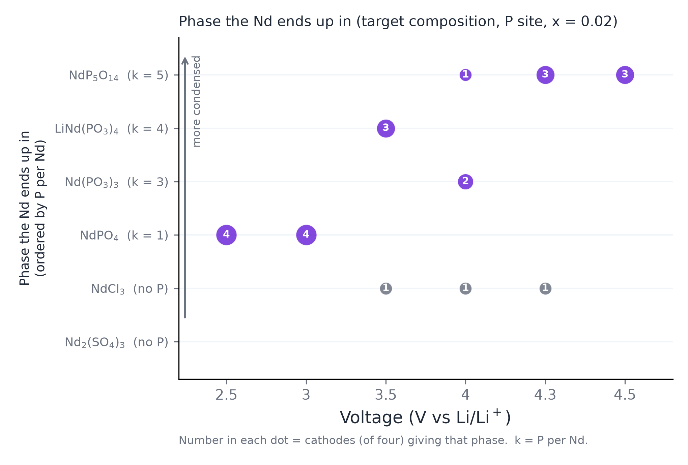
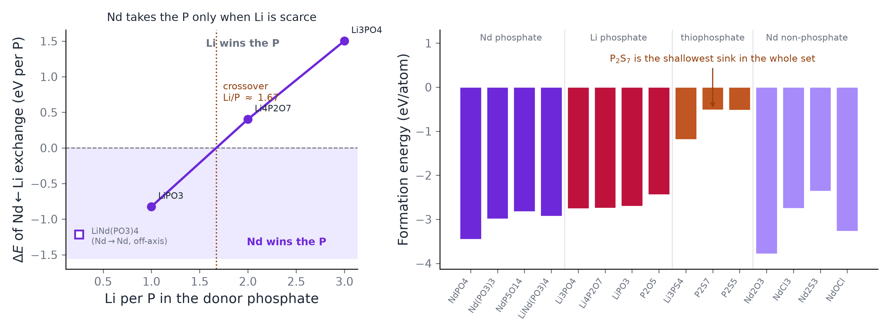
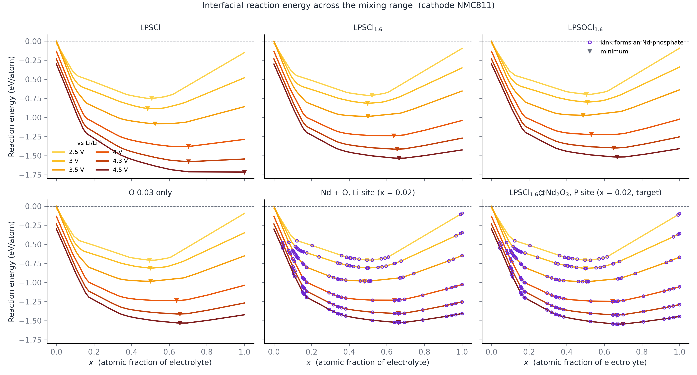
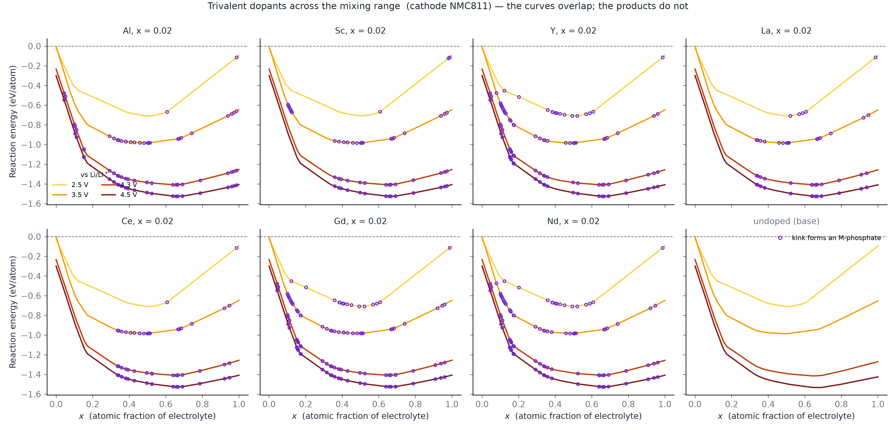
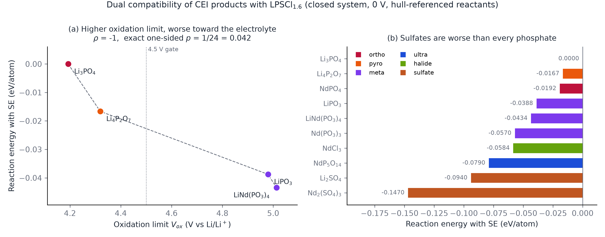
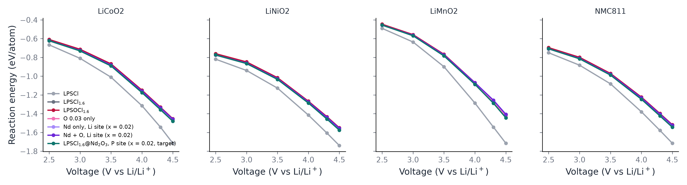
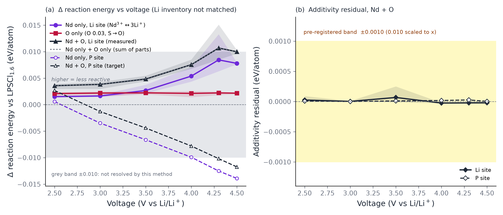

배경 지식 없이 읽는 설명을 같이 담았다
Nd 는 P 의 행선지를 바꾼다
Nd 치환에 따른 고전압 계면 분해 산물의 재분배 — 일부 조건에서 양극 금속의 인산염 분율이 줄지만, 실제 양극 열화나 CEI 전도 특성의 개선은 이 계산으로 확정하지 않는다
고체 전해질을 양극에 붙여 높은 전압까지 충전하면 둘이 닿은 면에서 반응이 일어나 새로운 층이 생긴다. 그 층이 잘 생기면 더 이상의 반응을 막아 주고, 잘못 생기면 전지가 계속 갉힌다. 이 페이지는 전해질에 Nd 와 O 를 넣으면 그 층이 어떻게 달라지는가를 계산으로 따진 기록이다. 실험은 하나도 없다. 계산은 두 층이다 — 어떤 상이 생기는 것이 에너지상 이로운가는 데이터베이스(MP hull) 위에서 풀었고(§2–5·§7·§S1), 그렇게 생긴 상이 전자를 막을 성질인가(밴드갭)는 우리가 직접 DFT 로 쟀다(§6, 판별종 10 종 완주).
- 0 왜 ‘산물 재분배’ 인가
- 0b 질문 둘
- 2 산물이 말한다
- 2b 얼마나 — 정량 곡선
- 3 검증 — 절반 철회
- 4 전 혼합범위 스캔
- 5 다른 3가 도펀트
- 6 갭 10/10 (우리 DFT)
- 7 반대쪽 접촉(전해질)
- 8 양극별 원자료
- S1 분해 (보충)
- 8b 반론 여덟
- 9 말하면 안 되는 것
- F 파일
- 고전압(4 V 이상) 평형 산물에서 Nd 는 전량 인산염이 되어 P 일부를 받는다(Co·Ni·NMC811 양극 · LiMnO₂ 는 NdCl₃ · 선후·속도는 계산하지 않았다) — 다만 목표 농도 x = 0.02 에서 Nd 가 받는 P 는 최대 1 할(NdP₅O₁₄ · P/Nd 5 × 0.02)이고, 그 조건에서 나머지 9 할은 무도핑처럼 양극 TM 인산염으로 간다(LiCoO₂ 4.3 V: 10 % 대 90 %). 3 V 이하에서는 남은 P 가 주로 Li 인산염으로 가므로 이 배분을 일반화하지 않는다. Nd 가 받는 몫만큼 양극 금속이 인산염으로 덜 끌려간다 — 양극이 덜 녹는 것은 아니다(인산염을 면한 금속은 대부분 황화물이 된다)
- 그 이득은 조건부다. 전조건 라운드(120 칸 = 4 양극 × 6 전압 × 5 농도)에서 (양극,전압) 열 24 개 중 17 개가 전 농도 통과다(종전 7 중 2) — ⚠ 이 통과는 대조군과 같은 잣대로 잴 수 있다는 뜻이지 이득이 확인됐다는 뜻이 아니다. 식이 잘 맞는 열은 견줄 수 있는 11 중 셋(LiCoO₂ 4.30 V · LiNiO₂ 3.50 V · NMC811 3.50 V)이고, 목표 조성 x = 0.02 의 실측 보호율은 잴 수 있는 16 칸에서 −3~12 % 다 (§2b)
- 다만 식이 예측하는 것은 “Nd 가 가로챈 P” 이고 실측은 “인산염을 면한 양극 TM” 이다. 둘이 같아지는 것은 TM 이 그 P 를 노리고 있을 때뿐 — 저전압 NMC811 에서는 Nd 가 P 를 25 % 가져가도 보호율이 0 이다
- 전해질 쪽은 “새로 망가뜨리지는 않는다” 까지(3.5 V LiCoO₂) — 고전압 Co·Ni 계에서는 Nd 인산염이 무도핑 TM 인산염보다 전해질과 덜 싸운다(상끼리 · Mn 계는 아니다 · §7)
- 치환 자리가 계산된 Δ 의 부호를 바꾼다 — 같은 Nd 농도에서 Li 자리 + · P 자리 − — 크기가 띠 밖인 x = 0.10 · 0.20 에서는 Li 자리는 계면 반응을 줄이고 P 자리(1저자 조성 포함)는 늘린다. 농도는 두 자리 다 선형이다 (x 0.02–0.20). ⚠ x = 0.02 에서는 평균 크기가 구분폭(±0.010 eV/atom) 안이라 크기를 인용하지 않고, 부호도 물리적으로 해소된 개선·악화나 순위로 해석하지 않는다 (칸별: Li 자리 23 칸 전부 + · P 자리 22 칸 중 18 칸 −, 2.5 V 네 칸은 +)
- hull 이 고르는 판별종 10 종을 우리 DFT 로 직접 쟀다 — 10/10 갭이 열려 있다 (2.26–5.99 eV, PBE). x = 0.02 에서도 hull 이 고르는 판별종은 같은 10 종이다. 9 종은 MP 참조와 ±0.12 eV 안에서 재현(그 참조들의 계산 종류는 이번에 확인하지 않았다). NdP₅O₁₄ 는 등록 예측이 틀렸다(−0.94 eV) — 표적으로 쓴 MP 값(6.336)이 r2SCAN 구조최적화 유래라 같은 근사 비교가 아니었음은 확인했고(09-30), 유사 구조로 판정된 다른 엔트리의 GGA 갭(5.390)과는 +0.003 eV 지만 이는 보조 비교다 — 동일 구조·조건 재현이나 원인 분해가 아니다(인용 조건 개정 비준 대기 · 우리 값 5.39 eV 도 넓은 갭)
- “Nd 가 산화 안정성·전압창을 넓힌다” — 우리 데이터에 그 증거가 없다. 오히려 2.14 V → 1.92 V 로 좁아지는 쪽이다(0.22 V 는 hull 오차 크기라 정량으로 인용하지 않는다 · §0). 이 전압은 x 와 무관하다(x = 0.02 에서도 1.92 V) — 줄어드는 것은 그 전압에서 반응하는 양이다
- “x = 0.02 에서 Nd 가 양극 대신 P 방을 댄다” — 최대 1 할만 댄다. 고전압 Co·Ni·NMC811 에서는 나머지 9 할을 여전히 양극이 댄다(LiCoO₂ 4.3 V: 10 % 대 90 % · 3 V 이하에선 남은 P 가 주로 Li 인산염) (x = 0.20 에서 “전부” 로 보였던 것은 NdP₅O₁₄ 의 포화점이 우연히 0.20 이라서다)
- “Nd 가 최적의 3 가 도펀트다” — 어느 축에서도 1 등이 아니다. 쓸 수 있는 것은 “Gd·Y·Sc·La 와 구분되지 않는다” 까지
- “NdPO₄ 가 Li₃PO₄ 보다 깊은 P 싱크다” — 철회됨 (+1.5035 eV/P 양수)
- “Nd 가 양극 계면 열화를 억제한다” — 계산이 보여 주는 것은 0 K hull 의 산물 재분배(일부 조건에서 양극 금속의 인산염 분율 감소)까지다. 실제 열화·누설·저항·두께 개선은 판정하지 않았다
- 이 이득을 부동태화로 읽기 — §2–5·§S1 은 계면 반응 구동력이고, §6 은 판별종 10 종이 넓은 갭 절연체라는 것까지다. 실제 계면층의 연속성·두께·전자 수송은 안 쟀다
- “Δ 반응에너지가 전압과 함께 6.6 배” — Nd 화학이 아니라 Li 장부다. Li 를 맞춘 무-Nd 대조군에서 Nd 항은 음수다 (4.5 V · x = 0.20 에서 −22.8 ~ −50.8 meV/atom, 가장 큰 −50.8 은 LiCoO₂ · x = 0.02 에서 −3.6 ~ −5.1). 분해 그림(지금 Fig. S1)의 2×2 시절 패널 (c)(상대 성장 ×6.6)를 그래서 뺐다
- Nd 가 실제로 어느 자리에 들어가는지 — 이건 조성점 계산이라 자리 선호를 재지 않는다
0. 왜 “고전압 안정성 개선” 이 아니라 “분해 산물의 재분배” 인가
전압창은 안 넓어진다 — Nd 는 Nd–S 채널을 열어 onset 을 2.14 → 1.92 V 로 내리고, 이 전압은 x 와 무관하다(x = 0.02 두 자리 모두 1.92 V). 우리 PDOS(P 자리 x = 0.40 셀 · n5fu)도 VBM 이 S 83→77 % 지배(Nd 3.7 %). ⚠ 실험 CV·LSV 는 다른 양이다. 논지는 창이 아니라 분해 산물이다
이 절이 맨 앞에 있는 이유: “Nd 도핑으로 고전압 안정성이 좋아진다” 는 문장은 두 가지로 읽힌다. ① 전해질이 더 높은 전압까지 산화되지 않는다(전압창), ② 계면에서 생기는 층이 양극을 덜 망가뜨린다(양극 열화). 이 페이지의 데이터는 ①을 반증한다. ②는 직접 재지 않았다 — 받치는 것은 그 앞 단계인 산물 재분배(일부 조건에서 양극 금속의 인산염 분율이 준다)까지이고, 실제 열화·누설·저항 개선은 이 계산으로 확정하지 않는다. 원고 동기로는 “열화 억제의 가능성을 검토하려고 산물 재분배를 계산했다” 까지다. 첫 문단에서 못박지 않으면 심사자는 ①로 읽는다.
🔴 우리 데이터가 먼저 말한다 — Nd 는 산화창을 넓히지 않고 좁힌다. [자가반증]
| 조성 | 산화 onset (V vs Li/Li⁺) | 환원 onset (V) |
|---|---|---|
| comp1 (Li₆PS₅Cl) | 2.14 | 1.717 |
| modelc (LPSCl₁.₆) | 2.14 | 1.717 |
| lpsocl (O 치환) | 2.14 | 1.717 |
| o_only_003 (O 0.03 단독) | 2.14 | 1.717 |
| ndo_li_002 (Nd + O · Li 자리 x = 0.02) | 1.92 | 1.717 |
| nd_p_002_asused (Nd + O · P 자리 x = 0.02 · 1저자 조성) | 1.92 | 1.717 |
| modelc_nd (Nd + O · Li 자리 x = 0.20 · 참고) | 1.92 | 1.717 |
O 치환은 onset 을 안 움직이고(2.14 고정), Nd 는 0.22 V 내린다 — x = 0.02 에서도 x = 0.20 에서도,
Li 자리에서도 P 자리에서도 같은 1.92 V 다. 환원 onset 은 일곱 조성 모두 1.717 V 로 같다 — Nd 가 움직이는 것은 산화 쪽뿐이다.
grand-potential element profile (Li 열림, MP hull) — db/properties/cei_esw_Li_x002_2026_09_28.json
(09-16 의 네 조성을 같이 넣어 같은 값으로 재현했다). 심사자가 찾아낼 것이 아니라 우리가 먼저 싣는 것이다.
왜 x 와 무관한가. 1.92 V 는
Nd₂S₃ + 0.8 Li₂S → 0.2 Nd₁₀S₁₉ + 1.6 Li 의 평형 전압이다. Nd 가 조금이라도 있으면
중성 조합에 Nd₂S₃ 와 Li₂S 가 같이 있고, 그러면 같은 전압에서 시작한다. x 가 바꾸는 것은 그 전압에서 반응하는 양이다 —
풀려나는 Li 가 P 하나당 0.016 개(x = 0.02)로 x = 0.20 의 0.16 개의 1/10 이고, 2.14 V 본 단계(0.7 개)의 약 2 % 다.
(이 예측은 값을 보기 전에 걸었고 맞았다 — 개정문 cathode_cei_x002_amendment_2026_09_28.json G3.)
⛔ 2026-09-28 정정 — 환원 쪽 열을 다시 읽었다.
이 열에는 전에 다른 값이 실려 있었고, 그 값으로 “환원 쪽도 올라가 창이 양쪽에서 좁아진다” 고 적었다.
그런데 그 값은 계산 도구가 아직 Li 를 받아들이며 분해되는 단계를 환원 한계로 잘못 집은 것이었다
(인용위험 원장 HZ-esw-reduction-limit-label). 같은 원장에서 Li 를 더 이상 주고받지 않는 첫 지점으로
다시 읽으면 네 조성 모두 1.717 V 다. 그래서 환원 쪽 차이와 창 폭 비교는 철회한다.
산화 onset(2.14 · 1.92)은 이 오류와 무관하다.
왜 안 움직이나 — 우리 PDOS 가 같은 말을 한다 (n5fu 셀 · P 자리 x = 0.40)
산화는 전자를 제일 먼저 내놓는 자리에서 시작한다. 그 자리가 가장 높은 점유 준위(VBM) 다. 도핑 전후로 VBM 을 누가 만드는지 성분으로 갈라 봤다 (가장자리에서 안쪽 2 eV 창).
| 계 | VBM — 산화가 시작되는 쪽 | CBM — 환원 쪽 |
|---|---|---|
| 무도핑 LPSCl₁.₆ | S 83.13 · Li 10.50 · Cl 5.99 · P 0.38 | S 41.71 · P 35.30 · Li 21.08 · Cl 1.92 |
| Nd/O 공치환 (n5fu · P 자리 x = 0.40) | S 77.34 · Li 11.17 · Cl 5.93 · Nd 3.66 · O 1.65 · P 0.25 | Li 29.70 · Nd 27.84 · S 21.42 · P 15.86 · Cl 2.91 · O 2.27 |
도핑해도 VBM 은 황이 지배한다 (83 → 77 %). 산화 개시 자리는 S 쪽이고 Nd 는 거기 3.7 % 뿐이다. 반대로 Nd 는 CBM 에 27.8 % 로 들어간다 — 환원 쪽이다.
⛔ 그래서 “Nd 가 3가를 유지하므로 산화에 강하다” 는 우리 데이터에 없는 연결이다. VBM 이 S 지배인 데다, 우리 계산은 frozen-4f(Nd_3)라 Nd 의 산화수 주장 자체를 할 수 없다. (2026-09-14 랩미팅 지적 — 지적이 맞았다.)
그런데 Nd 는 왜 onset 을 내리나 — 황이 갈 곳이 바뀐다
“황이 한계를 잡는다” 는 그대로다. 바뀌는 것은 황이 어디로 가느냐다. 산화 onset 의 반응식을 나란히 놓으면 보인다.
무도핑은 황이 리튬 폴리설파이드(LiS₄) 로 가는데, Nd 계는 네오디뮴 폴리설파이드(Nd₁₀S₁₉) 로 간다. Nd–S 상이 hull 에 낮게 깔려 있어 새 분해 채널이 열리고, 그래서 황이 더 낮은 전압에서 먼저 나간다. 환원 쪽은 그렇지 않다 — Nd₂S₃ 가 산물에 끼기는 하지만 환원이 시작되는 전압은 무도핑과 같다. ⇒ 창은 산화 쪽에서만 좁아진다 (2.14 → 1.92 V). (“Nd 가 황친화라서” 는 해석이고, 측정된 것은 반응식의 산물이 바뀐다는 사실이다.)
⚠ 이 0.22 V 를 단단한 값으로 쓰지 않는다
MP hull(0 K · PBE+U · MP 보정)의 오차 수십 meV/atom 이면 뒤집히는 크기다.
쓸 수 있는 문장은 “Nd 가 창을 넓힌다는 증거가 없다 — 오히려 좁아지는 쪽으로 나온다” 까지이지
“0.22 V 좁아진다” 를 정량으로 인용하는 것이 아니다.
⛔ 그리고 Nd–S 산물의 갭으로 누설·부동태를 판정하지 않는다 — 중성 분해 조합에는 Nd₂S₃ 가 있고 그 바닥상(Pnma)의 MP 참조 갭은
0.76 eV 다(MP 소환값). 산화 개시 조합의 Nd 상은 Nd₁₀S₁₉ 라 이 값을 대신 쓸 수 없고, 그 조합의 전자 누설과 실제 부동태 성립 여부는 현재 자료로 판정하지 않는다.
“Nd 가 부동태층을 만든다” 는 이 자료로 받칠 수 없다. (⛔ 09-30 정정 · 회신 CM P0-3 — 이 줄은 Nd₂S₃ 를 산화 쪽 산물로 적고 “0.76 eV 로 전자가 샌다 · 부동태가 아니다” 라고 단정했다.)
⚠ 실험 CV·LSV 와 이 창은 같은 양이 아니다 [다른 양]
이 표의 2.14 V 는 열역학 창이다 — “여기서부터 분해가 이롭다”. CV·LSV 가 보는 것은 실효 창이다 — “여기서부터 전류가 흐른다”. 사이에 속도와 부동태화가 들어간다.
그래서 열역학 창이 좁아지는데 실험 CV 는 좋아 보이는 것이 모순이 아니다. 분해가 이르게 시작해도 생긴 층이 전자를 막으면 반응이 거기서 멈춘다(자기제한). 판별종 10 종이 전부 넓은 갭 절연체라는 §6 결과가 그 필요조건을 채운다. ⚠ 다만 우리는 실제 층의 연속성·두께·전자 수송을 재지 않았다 — 갭은 필요조건이지 충분조건이 아니다.
⛔ 열역학 onset 과 CV 실효 onset 을 같은 축에 놓고
비교하지 않는다. 자세한 정리는 해석 카드
db/properties/ndo_passivation_argument_2026_09_14.json 에 있다
(“CV 가 좋아지는 것을 무엇으로 설명하나”, 1저자 검토 전).
문헌도 같은 결론이다. Banik 외 (Yifei Mo · Wolfgang Zeier, 2022) 는 argyrodite 에서 P→Si/Ge, Cl→I 치환이 산화 분해를 바꾸지 못한다는 것을 HAXPES(VBM 실측) · stepwise CV · DFT 세 축으로 닫았다 — VBM 이 PS₄³⁻ 비결합 + free S²⁻ 라 S 가 조성에 있는 한 S 가 산화 한계를 고정한다. 결론은 “단순 치환으로는 황화물 SE 의 산화 안정성을 개선할 수 없다 — 양극 코팅이 필요하다.” 우리 2.14 V 고정이 정확히 그 S-pinning 이다. 정면으로 받으면 진다. 동의하고 인용한다.
⇒ 그래서 창이 아니라 산물을 본다. 창의 한계는 S 가 잡고, 도펀트는 그걸 올리지 못한다 — Nd 는 오히려 산화 onset 을 2.14 → 1.92 V 로 조금 내린다(위 표 · x 와 무관). 대신 산화가 일어난 뒤 무엇이 생기느냐는 도펀트가 바꾼다. 4 V 위에서 풀려난 P 는 들어갈 방이 필요한데, 양쪽 다 Li 를 안 쓰는 방을 찾는다. 무도핑 LPSCl 은 그 방을 양극의 전이금속에서 얻어 CoP₄O₁₁ · Ni(PO₃)₂ 를 만들고(§2 표), Nd 계는 Nd 인산염(NdPO₄ → LiNd(PO₃)₄ → NdP₅O₁₄ · 가운데 것만 P 넷에 Li 하나)으로 채운다(최종 평형 배분 — 선후는 계산하지 않았다). 차이는 방을 누가 대느냐다 — 무도핑은 양극을 헐어서 대고, Nd 계는 전해질이 제자리에서 들고 온다.
⚠ 얼마나 대느냐는 Nd 수가 정한다. NdP₅O₁₄ 는 Nd 하나가 P 다섯을 가져가므로, 전해질이 댈 수 있는 방은 P 의 5x 까지다. 목표 농도 x = 0.02 에서는 1 할이고, 고전압 Co·Ni·NMC811 에서는 나머지 9 할을 Nd 계에서도 양극이 댄다 (LiCoO₂ 4.3 V: P 의 10 % → NdP₅O₁₄, 90 % → CoP₄O₁₁ · 두 자리 같음). 3 V 이하에서는 남은 P 가 주로 Li 인산염으로 가므로(예: LiCoO₂ 2.5 V 는 Li₃PO₄ · Co 는 CoS₂) 이 배분을 일반화하지 않는다. 예전 판이 “전해질이 방을 전부 댄다” 로 읽혔던 것은 x = 0.20 이 마침 그 포화점(5 × 0.20 = 1)이었기 때문이다.
그래서 이것은 Banik 이 말한 “코팅” 을 대신하지 않는다. 코팅은 양극과 전해질이 닿지 않게 해서 반응 자체를 줄이지만, Nd 는 반응을 그대로 두고 그 산물만 바꾼다 — 금속 인산염이 될 P 의 일부(x = 0.02 에서 약 1 할)가 Nd 인산염으로 가고, 인산염을 면한 양극 금속은 대부분 황화물이 된다(§2b ‘쉽게 다시 읽기’ ①). 산물 층이 빈틈없이 덮는지 · 얼마나 두꺼운지 · Li⁺ 를 통과시키는지도 이 계산에 없다(§6 G5). onset 을 올리지 않으므로 그의 결론(“코팅이 필요하다”)과 충돌하지 않는다.
읽는 순서 — §2 무엇이 생기나(산물 사다리) → §2b 금속 인산염을 얼마나 줄이나(정량 규칙 · 1저자 조성) → §6 그 산물이 전자를 막나(우리 DFT 갭 10/10) → §7 전해질 쪽에서도 지내나(양면 검사). 접힌 절은 근거·검산·반론이고, 요지는 접힘 밖 한 줄에 있다.
Nd³⁺ 를 Li 자리에 넣느냐 P 자리에 넣느냐에 따라 전하 보상 방향이 반대이고, 그래서 조성의 Li 수가 반대로 움직인다. 전압 기울기가 그 조성의 Li 수와 같으므로 (dΦ/dV = +NLi), 두 자리는 전압 의존도 반대 방향이다. Nd 가 실제로 어느 자리에 들어가는지는 이 계산이 말하지 않는다 — 그래서 둘 다 싣는다.
| 자리 | 조성 (Nd + O) | Nd 함량 x | Li 재고 | 이 절들이 쓴다 |
|---|---|---|---|---|
| A · Li 자리 | Li5.34 Nd0.02 P1.00 S4.37 O0.03 Cl1.6 | 0.02 | 5.40 → 5.34 (−1.1 %) | §0 · §S1 · §2 · §4 · §8 |
| B · P 자리 1저자 목표 조성 |
Li5.44 Nd0.02 P0.98 S4.37 O0.03 Cl1.6 | 0.02 | 5.40 → 5.44 (+0.7 %) | §0 · §S1 · §2 · §2b · §4 · §8 |
| 조성 무관 | 산물 상 자체 · 반응 단위 에너지 | — | — | §3 · §6 · §7 · §5 의 B·깊이·반경 축 |
| 별개 축 | 계면 혼합비 x (Nd 농도 아님) | — | — | §4 |
왜 0.20 에서 0.02 로 옮겼나 — 0.20 은 우연히 포화점이었다
Nd 는 인산염으로 갈 때 P 를 자기 수만큼만 가져간다. 가장 많이 가져가는 NdP₅O₁₄ 가 Nd 하나에 P 다섯이라, Nd 가 가져갈 수 있는 P 는 전체의 5x 까지다. x = 0.20 이면 5 × 0.20 = 1 — 마침 P 전부다. 그래서 예전 판에서는 “Nd 계에서는 양극 대신 전해질이 P 방을 댄다” 로 보였다. 목표 농도 x = 0.02 에서는 그 몫이 최대 1 할이다 — 아래 LiCoO₂ 4.3 V 처럼 고전압 Co·Ni·NMC811 에서는 나머지 9 할을 Nd 가 있어도 양극이 댄다(3 V 이하에서는 남은 P 가 주로 Li 인산염으로 간다).
| LiCoO₂ · 4.3 V · 전해질의 P 가 간 곳 | Nd 인산염 | 양극 TM 인산염 |
|---|---|---|
| 무도핑 LPSCl₁.₆ | 0 % | 100 % |
| x = 0.02 · Li 자리 (Nd + O) | 10 % | 90 % |
| x = 0.02 · P 자리 (1저자 조성) | 10 % | 90 % |
| x = 0.20 · Li 자리 (예전 판) | 100 % | 0 % |
x = 0.02 가 아닌 곳 — 셋, 그 자리에 이름을 달았다
- 구조가 필요한 계산 — BVSE(§8b ④, 멈춤)는 DFT 로 이완한 Li 자리 셀 Li₄₈Nd₂P₁₀O₃S₄₁Cl₁₆(Nd 2 · P 10 · 120 원자 = x 0.20)이다. PDOS(§0)는 이 셀이 아니라 Rietveld 구조에서 만든 P 자리 셀 n5fu(Li₃₁Nd₂P₃O₃S₁₉Cl₈ · 66 원자 = P 자리 x 0.40)다 — 둘 다 x = 0.02 가 아니다. x = 0.02(목표 조성)에 대응하는 구조 계산은 없다 — 정확한 정수 점유로는 최소 1244 원자(100 식단위)이고 더 작은 근사 셀은 정의하지 않았다(옛 ‘약 618 원자’ 는 반정수 근사 · 실행 가능성은 시험하지 않았다).
- §2b 보호율 곡선 — 원래 농도 축(0.02–0.20)이다. 0.20 은 곡선의 끝점이다.
- 아래 2×2 (+ 가운데 x = 0.10 행 · 09-28) — 0.02 · 0.10 · 0.20 을 잇는 선형성 근거다.
✅ 빠진 칸을 채웠다 — 같은 농도에서 두 자리를 맞댔다 (09-19 · 가운데 행 09-28) — 이 표가 x = 0.02 · 0.10 · 0.20 을 잇는 다리다
종전 A(x=0.20)·B(x=0.02)는 자리와 농도가 같이 달라 둘을 못 갈랐다 → 한 실행에서 맞댔다 (음이온 S 4.4 · Cl 1.6 고정 · O 없음 · 0.10 실행 원자료로 09-19 네 값 재현, 차 < 0.00001).
| Δ 반응에너지 (eV/atom) + = 무도핑보다 분해 구동력이 작다 (계산값의 부호) 여섯 조성 공통 20 칸 평균 · x = 0.02 줄은 구분폭(±0.010) 안 |
Nd → Li 자리 | Nd → P 자리 |
|---|---|---|
| x = 0.02 | +0.0037 | −0.0066 |
| x = 0.10 (09-28) | +0.0183 | −0.0344 |
| x = 0.20 | +0.0362 | −0.0709 |
- ① 자리가 계산된 부호를 정한다. Li 자리는 +(공통 20 칸 중 20), P 자리는 −(16 칸). 크기가 띠 밖인 x = 0.10 · 0.20 에서는 Li 자리가 덜 · P 자리가 더 반응하는 쪽이고, ⚠ x = 0.02 는 같은 부호지만 평균 크기가 구분폭(±0.010) 안이라 해소된 방향·순위로 읽지 않는다. 세 농도 모두 같다.
- ② 농도는 크기만 키운다 (선형). 0.02 → 0.20 이 거의 정확히 10 배다 (잔차 Li −0.0008 · P −0.0053, 문턱 0.010) · Nd + O 와 O 단독도 같다 (10 배와의 차 −0.0021 · +0.0002). ⇒ x = 0.20 결과는 x = 0.02 의 확대판으로 읽어도 된다 — 0.02–0.20 안에서만. 가운데 x = 0.10 도 직선 위다 (사전등록 · 문턱 0.005): 어긋남 Li +0.0004 · P +0.0008 (판정 묶음 Li 23 · P 20 칸 · 표의 20 칸으로는 +0.0001 · +0.0008). 가운데 점 하나라 구간 안쪽 꺾임까지는 못 본다. 칸별로는 고전압 한 칸씩(Li LiMnO₂ 4.3 V 0.0053 · P LiNiO₂ 4.0 V 0.0052)이 문턱을 살짝 넘지만, Δ 가 큰 칸(≈0.10)의 1 할 안팎이라 판정은 칸 평균으로 한다 (cei_x010_result_2026_09_28.json).
- ③ 자리 차이는 고전압에서만 벌어진다. 두 자리 간격 2.5 V 0.0009 → 4.5 V 0.0210 (23 배). ⚠ 4.5 V 공통 칸은 2 칸뿐이라 끝을 외삽하지 않는다.
판정은 09-19 확정 — 문턱은 값을 보기 전에 박았고 결과를 보고 고치지 않았다. ⚠ 같이 걸어 둔 전압 기울기 예측은 부호가 틀렸다 — 표의 값·부호와는 별개다. 그 기울기는 계산 방식에서 저절로 나오는 항등식(기울기 = 방출 Li)이라 예측으로 검증할 대상이 아니다 (§0b 상자).
질문 둘에 대한 답 — ① Nd 특화인가 O 효과인가 · ② Nd 여야만 하나
x = 0.02 · 두 자리① O 와 Nd 는 각자 부호가 정해진 효과를 내고 서로 더해진다(Li 수를 맞춰도) — 계산된 부호는 O 두 자리 다 + · Nd Li 자리 + · P 자리 −(x = 0.02 크기는 구분폭 안). Nd 의 이득은 반응에너지보다 산물에서 나온다 · ② 다른 3가도 된다 — Nd 는 대표 시연
질문 둘 — ① 이 효과가 Nd 특화인가 O 효과인가? ② Nd 여야만 하나, 다른 3가 양이온도 되나?
① 답 — O 와 Nd 는 각자 부호가 정해진 효과를 내고, 둘은 서로 더해진다. O 는 두 자리 다 +, Nd 는 Li 자리 + · P 자리 − 다(계산값의 부호) (Nd 부호는 공통 20 칸 중 Li 자리 20 · P 자리 16 칸에서 같다). 둘을 같이 넣으면 그대로 더해진다 — Li 자리 Nd +0.0044 · O +0.0022 → 실측 +0.0066 (잔차 0.000006 · P 자리 0.00001 · 문턱 0.0010). Li 수를 맞춘 무-Nd 대조와 견줘도 마찬가지다 — Li 를 맞춘 Nd 항이 O 가 있든 없든 같다 (잔차 Li 자리 +0.000003 · P 자리 −0.000005 · 문턱 0.0010 · 칸 Li 23 · P 22 · 09-29 사전등록). x = 0.02 에서는 변화의 크기가 이 캠페인의 유의폭(±0.010 eV/atom) 안이라, 크기 대신 부호와 가산성으로 쓴다 (사전등록 규칙). 그 부호도 물리적으로 해소된 “덜/더 반응한다” 나 순위로 해석하지 않는다 — 사전등록은 규칙을 투명하게 할 뿐 추론을 보증하지 않는다.
Nd 의 이득은 산물에서 나온다. Li 자리 Nd³⁺ 는 Li⁺ 셋을 대신해 조성의 Li 를 줄이는데, Li 저장고를 연 계산에서는 Li 가 적은 조성이 고전압일수록 저절로 유리해 보인다 (dΦ/dV = +NLi). 그 몫을 빼려고 Li 를 같게 맞춘 무-Nd 대조군과 견주면 Nd 항은 두 자리 다 음수다 (4.5 V · x = 0.02 에서 −3.6 ~ −5.1 meV/atom · x = 0.20 에서 −22.8 ~ −50.8, 가장 큰 값은 LiCoO₂) — Li 수가 안 바뀌는 O 치환만 전압에 평평한 것이 그 증거다. ⇒ Nd 의 값어치는 반응에너지의 크기가 아니라 어떤 산물을 만드느냐에 있다 — §2. P 자리는 거꾸로 Li 가 늘어(5.40 → 5.44 · x = 0.02) 같은 효과가 반대로 걸리고, 두 자리 부호가 반대라는 것은 09-19 에 실측했다 (페이지 머리 표).
전압 기울기 = 방출 Li — 계산 방식에서 나오는 항등식 (09-28 유도 · 09-29 확정) — 자리 판정과는 별개
계산 전에 걸어 둔 기울기 예측은 방향을 반대로 적어 틀렸다 — 반응이 Li 를 저장고로 내보내 전압항의 부호가 뒤집히는 것을 놓쳤다(자료가 아니라 식의 오류). 다시 유도해 보니 이 관계는 Li 저장고를 연 계산에서 저절로 성립하는 항등식이다 — 전압 기울기 = 그 반응이 저장고로 내보내는 Li (비-Li 반응물 원자당 · 계수 1). 원자료 전 칸에서 확인했다 (같은 반응 55 쌍 계수 중앙값 1.00001 · 반응이 바뀐 265 쌍 위반 0). 그래서 예측으로 ‘검증’ 할 대상이 아니고, 09-19 에 맞춘 직선의 계수는 물리 계수가 아니라 인용하지 않는다. ⇒ 쓸 수 있는 것은 “두 자리 기울기의 부호는 반응에 들어오는 Li 양이 정한다(크기는 산물이 붙잡는 Li 만큼 준다)” 까지다 — Nd 화학의 효과로 읽지 않는다. 자리 판정(부호 · 선형성)은 Δ 값 자체라 09-19 에 따로 확정됐다 (D-2026-09-19-cei-site-vs-concentration · D-2026-09-28-cei-li-ledger-identity). ‘더해진다’ 는 이 기울기 문제와 별개로 Li 를 맞춘 축에서도 확인됐다 (09-29 · 위 ① 답).
이 답의 이전 판 — 2026-09-18 철회 · 09-29 정리
저전압에선 O 가 더 이롭고,
고전압에선 Nd 가 압도적이다. 둘 다이고, 서로 독립이고,
전압에 따라 주역이 바뀐다. — 전압에 따른 우열 역전을 도펀트 화학으로 읽은 것이었다. Li 를 맞춘 대조군이 반증한다.
09-29 에 뺀 문장: “P 자리 경로의 계면 반응성은 이 계산에 들어 있지 않다 · 판정은 Li 자리 치환에 한정된다”
— 09-19 에 P 자리를 실측했고 09-28 Li 맞춤 대조도 두 자리 다 했다. ⛔ 09-28 정정 — 한때 “−0.0508 eV/atom(4.5 V)” 를
양극 한정 없이 적었다. x = 0.20 의 LiCoO₂ 한 양극 값이다.
② 답 — 다른 3가도 된다. 이 기전은 Nd 고유가 아니라 3가 양이온의 성질이다 (§5): 일곱을 여섯 축으로 재면 축마다 1등이 다르고, Nd 는 어느 축에서도 1등이 아니며 폭이 있는 축에서는 꼴등도 아니다 (x = 0.02 에서는 계면 Δ · 닫힌계 두 축에서 일곱의 폭이 0.0010 · 0.0012 라 등수가 서지 않는다 — 계면 Δ 에서 La 와 동률 꼴등인 것도 그래서 뜻이 없다). ⇒ Nd 는 이 기전의 대표 시연이다.
기전 — 고전압에서 풀려난 P 는 Li 를 안 쓰는 인산염 “방”이 필요하다. 무도핑이면 그 방을 양극 전이금속이 대고(양극을 헐어서), Nd 계는 그 일부를 Nd 인산염이 제자리에서 댄다(최종 평형 배분 — 선후는 계산하지 않았다) — 차이는 방을 누가 대느냐다. 얼마나 대는지는 Nd 수가 정해서 x = 0.02 에서는 P 의 최대 1 할이고, 고전압 Co·Ni·NMC811 에서는 나머지 9 할을 여전히 양극이 댄다 (§0 · §3 · 3 V 이하에서는 남은 P 가 주로 Li 인산염).
2. 왜 고전압에서 Nd 인가 — 산물이 말한다
x = 0.02 · 두 자리P 를 받는 방의 Li/P 가 3 → 2 → 1 → 0 으로 내려간다(전해질 6 종 전부). 4 V 이상에서 무도핑은 양극 전이금속이 그 방이고, Nd 계는 Co·Ni·NMC811 양극이면 Nd 가 전량 Nd 인산염으로 가서 P 의 6–10 %(최대 1 할)를 받는다(Fig. 1 · 최종 평형 배분) — 4 V 이상에서 나머지 9 할 이상은 여전히 양극 전이금속 인산염이다(3 V 이하는 주로 Li 인산염). LiMnO₂ 에서는 Nd 가 NdCl₃ 로 가서 0 % 다. Fig. 2 의 교환에너지 부호 전환은 3.0–3.5 V — 고전압이 아니다
hull 은 무엇이 생기는지를 말하지 왜 를 말하지 않는다. 그런데 산물 목록에 뚜렷한 패턴이 있다.

cei_nd_phase_x002.csv).반응 뒤 Nd 는 인산염이 되고, 전압이 오를수록 P 를 더 많이 붙잡는다. 목표 조성에서 Nd 가 최종적으로 어떤 물질이 되는지를 전압별로 찍었다. 점 안 숫자는 양극 넷 중 몇 개에서 그 물질이 나오는지다. 2.5·3.0 V 는 NdPO₄(Nd 하나에 P 하나), 3.5 V 는 LiNd(PO₃)₄(P 넷), 4 V 이상은 Nd(PO₃)₃(P 셋) · NdP₅O₁₄(P 다섯)다. 그래서 Nd 가 가져가는 P 의 몫은 (Nd 하나가 붙잡는 P 개수) × (Nd 농도)로 정해진다 — Co·Ni·NMC811 양극에서 저전압 2 % · 3.5 V 8 % · 4 V 이상 6–10 %. 4 V 이상의 NdP₅O₁₄ 에서는 P 개수의 2 % 뿐인 Nd 가 P 의 1 할을 붙잡는다. 4 V 이상에서는 나머지 9 할이 도핑하지 않았을 때처럼 양극의 전이금속과 인산염을 만든다(3 V 이하에서는 남은 P 가 주로 Li 인산염으로 간다). Nd₂(SO₄)₃ 줄은 비어 있다 — Nd 가 많을 때(x = 0.20)는 Ni·NMC 양극에서 Nd 일부가 황산염으로 갔지만, x = 0.02 에서는 P 가 충분해서 전부 인산염이 된다. LiMnO₂ 양극은 3.5 V 이상에서 두 농도 모두 NdCl₃ 다.
이게 왜 중요한가. 전압이 오르면 P 를 받는 인산염의 Li/P 가 낮아지는 것 자체는 도핑과 상관없이 모든 전해질에서 일어난다 (Li₃PO₄ → Li₄P₂O₇ → LiPO₃ → Li 가 없는 인산염 · 아래 Fig. 2). Li 가 다 빠진 인산염은 다른 금속과 짝을 지어야 하는데, 도핑이 없으면 그 금속을 양극의 전이금속(Co·Ni 등)이 댄다 — 양극 성분이 계면 생성물로 끌려 나가는 것이다. Nd 가 있으면 그중 일부(위의 2–10 %)를 전해질 안의 Nd 가 대신 댄다. Nd 가 바꾸는 것은 인산염이 생기느냐가 아니라, 그 짝을 누가 대느냐다.
![Two panels. (a) Scatter of the closed-system Nd-for-host exchange energy per phosphorus against applied voltage, one dot per condition and host; at 2.5 V every dot lies above zero and from 3.5 V every dot lies below it, with a grey band marking the plus-minus 0.30 eV per P resolution limit. (b) The same energies against the lithium-to-phosphorus ratio of the donor phosphate, with the lithium phosphates at high Li:P and positive, the transition-metal phosphates at Li:P zero and negative, and a dotted line at the Li:P where the branch changes sign.](cei_p_host_ladder_x002.png)
0 선이 전부다. 위에 있으면 Nd 가 그 상에게서 P 를 못 뺏고, 아래면 뺏는다. (a) 에서 2.5 V 는 점이 전부 위에 있고 3.5 V 부터는 전부 아래에 있다 — 100 % 가 뒤집힌다. Nd 가 세지는 것이 아니라 상대가 바뀌는 것이다.
(b) 가 그 상대를 보여준다. 오른쪽 위 Li₃PO₄ 는 +1.50 — Li 가 넉넉할 때 P 가 앉는 자리이고 Nd 가 진다. 왼쪽 아래 전이금속 인산염 여섯은 −1.00 ~ −2.16 — Li 가 없을 때 P 가 앉는 자리이고 Nd 가 이긴다. 이것이 §3 의 Li 예산 사다리(Fig. 4a)에 양극 금속 칸을 붙인 것이고, 점선이 그 사다리의 부호 반전 자리다.
회색 띠(±0.30 eV/P)는 이 방법이 구분 못 하는 폭이다. 여섯 전이금속 값이 전부 띠 밖이라 부호는 믿는다. 그런데 서로는 0.01~0.26 밖에 안 떨어져 있어 "Co 에서 제일 크게 이긴다" 같은 순위는 못 쓴다.
⛔ 이 그림이 설명하는 것과 못 하는 것을 나눠야 한다
설명한다 — 시작. 부호가 뒤집히는 자리는 3.0–3.5 V 다 (교환 ΔE 중앙값 +0.40 → −1.55 · x = 0.02 · x = 0.20 에서도 +0.40 → −1.22 로 같은 자리). ⚠ 그런데 그 자리는 고전압이 아니다 — LiCoO₂ 는 보통 3.0–4.2 V 로 돈다. "고전압에서만 켜지는 기전" 이라고 쓰면 틀린다.
설명하지 못한다 — 성장. (x = 0.20 옛 판의 기록이다.) 교환 ΔE 중앙값은 4.0 V 에서 −1.751 로 포화하고 4.3·4.5 V 도 같은 값이었다. 그런데 그때 분해 그림(지금 Fig. S1)의 Δ(Nd only)는 그 구간에서 0.0515 → 0.0970 으로 1.9 배 커졌다. 부호는 시작을 설명하고 성장은 설명 못 한다. 남은 후보는 양이다 — 얼마나 많은 P 가 그 경로를 타느냐. 그것이 §2 가설 4 번이고, 이 계산은 계수를 안 보므로 재지 못한다.
⭐ 2026-09-18 뒤에 읽으면 — 그 “성장” 의 대부분은 §S1 의 Li 장부(dΦ/dV = +NLi)였다. Li 를 맞춘 대조군에서 Nd 항은 부호가 뒤집히므로 “양” 가설을 더 세울 필요가 없어졌다. 이 상자에서 살아남는 것은 시작(부호 전환 3.0–3.5 V)이고, Nd 의 정량 이득은 §2b 의 보호율 곡선이 따로 잰다. 위 문장들은 기록으로 남긴다.
그리고 교환이 이득의 전부가 아니다 (x = 0.20 옛 판의 관찰). 2.5 V 에서는 음수가 하나도 없는데(Nd 가 진다) 그때 Fig. S1 의 Δ 는 이미 +0.0147 로 이로웠다. ⚠ x = 0.02 에서는 2.5 V 의 Δ 가 +0.0015(Li 자리) · +0.0006(P 자리)로 유의폭 안이라 이 논거가 서지 않는다.
⛔ 그리고 이 그림의 부호로 hull 이 고른 상을 설명하지 않는다 (2026-09-17 · 결정 D-2026-09-17-pairwise-exchange-resolution-limit 1저자 검토 전). 같은 날 세 번 어긋났다 — ① 첫 판 chemsys 에 Cl·S 가 없어 NdCl₃ 채널을 못 봤고, ② 넣고 보니 Nd 는 P 를 선호(−0.50 / −0.67 eV/P)하는데 hull 산물은 NdCl₃ 였고, ③ Mn/Ni 로 갈라 재니 방향은 관측과 맞았지만(Mn +0.155 못 뺏음 · Ni −0.125 뺏음) 크기가 ±0.30 eV/P 띠 안이라 못 가른다. 같은 판에서 Li₂SO₄ 쌍(+0.331)은 hull 산물과 부호가 어긋났다. 2 상 교환은 “어느 쪽이 그 상을 더 원하나” 의 방향 힌트이지, hull 이 무엇을 낼지의 예측이 아니다 — hull 은 모든 상을 동시에 풀고 교환은 둘만 겨룬다.
⚠ 교환에너지가 없는 상 9 개는 (a) 에서 빠졌다 — Nd 인산염 셋(NdPO₄·Nd(PO₃)₃·NdP₅O₁₄, 교환 상대가 자기 자신이라 정의되지 않는다), Li+전이금속 혼합 인산염 넷(LiMnPO₄ 등, 아직 안 쟀다), P₂S₇·PCl₅(이 chemsys 밖). Nd 계에서 P 의 일부가 Nd 인산염으로 가므로 (a) 의 점은 "Nd 가 아직 안 가져간 P" 쪽에 치우쳐 있다. 원자료 cei_tm_exchange_2026_09_17.json (교환에너지 · x 무관) · cei_p_host_ladder_x002_2026_09_28.json · cei_p_host_ladder_fig_x002.csv (x = 0.20 옛 판은 cei_p_host_ladder_fig.csv).
4.5 V · LiCoO₂ 에서 반응식을 나란히 놓으면 차이가 한눈에 보인다.
P 로 세면 — 무도핑은 P 의 100 % 가 CoP₄O₁₁ 이고,
1저자 조성은 10 % 가 NdP₅O₁₄ · 90 % 가 CoP₄O₁₁ 이다. x = 0.20 에서만 CoP₄O₁₁ 이 사라진다.
(⛔ 2026-09-28 정정 — LPSCl1.6 줄은 전에 자기분해 식
“→ 5.4 Li + 1.19 SCl + 0.46 P₂S₇ + 0.08 PCl₅” 로 적혀 있었다. 원장의 최소 꺾임은 양극과 반응해 CoP₄O₁₁ 을 만든다 —
원장 그대로 바꿨다. 원자료 cei_interface_V_x002_2026_09_28.json (09-19 와 차 0).)
x = 0.02 에서 Nd 가 가는 상과 그 상이 잡는 P 의 몫 (1저자 조성 · P 자리)
| V | LiCoO₂ | LiNiO₂ | LiMnO₂ | NMC811 |
|---|---|---|---|---|
| 2.5 | NdPO₄ 2 % | NdPO₄ 2 % | NdPO₄ 2 % | NdPO₄ 2 % |
| 3 | NdPO₄ 2 % | NdPO₄ 2 % | NdPO₄ 2 % | NdPO₄ 2 % |
| 3.5 | LiNd(PO₃)₄ 8 % | LiNd(PO₃)₄ 8 % | NdCl₃ 0 % | LiNd(PO₃)₄ 8 % |
| 4 | NdP₅O₁₄ 10 % | Nd(PO₃)₃ 6 % | NdCl₃ 0 % | Nd(PO₃)₃ 6 % |
| 4.3 | NdP₅O₁₄ 10 % | NdP₅O₁₄ 10 % | NdCl₃ 0 % | NdP₅O₁₄ 10 % |
| 4.5 | NdP₅O₁₄ 10 % | NdP₅O₁₄ 10 % | 끝점 — | NdP₅O₁₄ 10 % |
규칙이 하나다 — Nd 몫 = k·x. Co·Ni·NMC811 칸에서는 Nd 가 전량 인산염으로 가고, 그 상의 P/Nd(k)만큼 P 를 가져간다: NdPO₄(k 1) 2 % → LiNd(PO₃)₄(k 4) 8 % → Nd(PO₃)₃(k 3) 6 % · NdP₅O₁₄(k 5) 10 %. 나머지 P 는 Nd 가 없을 때와 같은 방으로 간다 — 대체로 3.0 V 까지는 Li 인산염, 3.5 V 부터(LiCoO₂ 는 4.0 V 부터) 양극 TM 인산염이다 (예외: LiMnO₂ 는 3.0 V 에서 이미 Mn 인산염이고, NMC811 은 저전압에서도 P 의 약 3 할이 Mn 인산염이다 — Mn 몫의 바닥, §2b). Li 자리(Nd + O)도 같다 — 다른 칸은 LiNiO₂ 4.3 V(Nd(PO₃)₃ 6 %) 하나뿐이다. (사전등록 검사 G4 “Nd 몫 ≤ 5x” 는 적힌 그대로는 포화 칸 9 개가 1e-4 넘어 위반이다. 9 개 모두 반응식 계수가 유효숫자 4 자리라 생기는 반올림으로 설명된다 — 문자열 자체의 Nd 수지가 같은 비율만큼 어긋난다. 물리·파서 오류가 아니고, 판정 문구는 사후에 고치지 않았다 — 사용자가 ‘위반 9 · 원인 규명(반올림)’으로 닫았다 (09-28 · 결정 D-2026-09-28-cei-x002-result). G4 를 ‘통과’ 로 적지 않는다.)
x = 0.20 과 다른 점 둘. ① 몫이 1/10 이다(0.20 에서는 NdP₅O₁₄ 가 P 를 전부 가져갔다 — 포화점).
② x = 0.20 은 LiNiO₂ 3.5·4.0·4.3 V · NMC811 4.0·4.3 V 에서 Nd 를 황산염(Nd₂(SO₄)₃)으로 보냈는데, x = 0.02 에서는
그 다섯 칸이 전부 인산염이다 — P 가 Nd 에 비해 넉넉하기 때문이다. LiMnO₂ 3.5 V 위는 두 농도 다 NdCl₃(인산염 아님)다.
원자료 cei_interface_V_x002_2026_09_28.json · 기록 cei_x002_result_2026_09_28.json §2.
가설 — Nd³⁺ 는 강한 인산염 형성체다 2026-09-16 기록 · 네 항목 모두 한정됨
- 저전압에선 P 가 아직 PS₄ 골격에 붙어 있다. Nd 가 할 일이 없다. ⛔ 산물에 안 보인다
- 전압이 오르면 S 가 산화되고 P–S 가 끊어진다. 풀려난 P 가 갈 곳이 필요하다. ⛔ 산물에 안 보인다
- Nd 가 없으면 → P₂S₇ (P–S, 덜 안정).
Nd 가 있으면 → NdPO₄ · Nd(PO₃)₃ · NdP₅O₁₄ · LiNd(PO₃)₄. ⚠ 범위가 훨씬 좁다 - 풀려나는 P 의 양이 전압과 함께 늘어나므로 Nd 의 이득도 전압과 함께 커진다. ⛔ 결론이 선 근거가 철회됐다 (2026-09-18 · Li 장부)
⛔ 3 번은 §3 에서 반쯤 반증됐다. "희토류 인산염이 더 안정하다" 는 Li₃PO₄ 기준으로는 틀렸다. 살아남은 것은 "P₂S₇ 보다 훨씬 안정하다" 쪽이고, Nd 가 이기는 진짜 이유는 따로 있다 — Li 를 안 쓴다.
⛔ 1·2·4 번도 산물이 뒷받침하지 않는다 (2026-09-17 · 사후 관찰 · 결정 D-2026-09-17-cei-p-host-li-ladder · 1저자 검토 전)
같은 hull 의 최소 꺾임 반응식에서 P 를 받은 상을 꺼내 보면, 2.5 V 에서 이미 P 가 인산염이다. PS₄ 에 갇혀 있다가 풀려나는 그림이 최소 꺾임에는 없다. 전압과 함께 변하는 것은 P 의 양이 아니라 P 를 받는 방의 Li 값이다:
| V | LiCoO₂ | LiNiO₂ | LiMnO₂ | NMC811 | 칸 (max Li/P) |
|---|---|---|---|---|---|
| 2.5 | Li3PO4 3 | Li3PO4 3 | Li3PO4 3 | Li3PO4 3 | 3 |
| 3 | Li4P2O7 2 | Li4P2O7 2 | Mn2P2O7 0 | Li4P2O7 2 LiMnPO4 1 | 2 |
| 3.5 | LiPO3 1 | Ni(PO3)2 0 | Mn(PO3)2 0 | Ni(PO3)2 0 Mn(PO3)2 0 | 1 |
| 4 | CoP4O11 0 | Ni(PO3)2 0 | Mn(PO3)2 0 | Ni(PO3)2 0 Mn(PO3)2 0 | 0 |
| 4.3 | CoP4O11 0 | Ni(PO3)2 0 | P2S7 0 Mn(PO3)2 0 | MnP4O11 0 Ni(PO3)2 0 | 0 |
| 4.5 | CoP4O11 0 | Ni(PO3)2 0 | 끝점 — | NiP4O11 0 MnP4O11 0 | 0 |
무도핑 LPSCl1.6 · 상 이름 뒤 숫자가 Li/P · 보라 = Li 를 안 쓰는 방 · 주황 = P–S 수용상 · "끝점" = x = 1 자체분해라 계면 반응이 아니다(뺐다).
Li/P 가 3 → 2 → 1 → 0 으로 내려간다. 전해질 6 종 전부 같은 방향이고 4.0 V 이상은 전부 0 이다. 이것이 §3 의 Li 예산 사다리와 같은 것인데, 거기는 교환반응으로 따로 계산했고 여기는 계면 산물 자체가 같은 사다리를 타고 내려간 것이다 — 독립 관측이다.
그래서 4 번은 이렇게 고쳐 읽는다.
전압이 하는 일은 P 를 더 풀어놓는 것이 아니라 P 가 갈 수 있는 방을
비싼 것부터 차례로 잠그는 것이다. 4 V 위에서는 Li/P = 0 인
방만 남고, Nd 는 그런 방을 여러 개 가지고 있다. 3.0–3.5 V 의 전환은 선택지로 설명된다.
⛔ 2026-09-18 정정 — 이 줄은 원래
결론("Nd 이득이 전압과 함께 커진다")은 Fig. 1 에서 측정된 것이라 그대로다 였다 (그때의 Fig. 1 = 지금 Fig. S1).
그 "측정" 이 Li 를 보정하지 않은 축이었고, Li 를 맞춘 대조군에서 Nd 항은 부호가 뒤집힌다
(x = 0.20 · LiCoO₂ −50.8 meV/atom @4.5 V · 양극 넷 −22.8 ~ −50.8 · x = 0.02 는 −3.6 ~ −5.1). 남는 것은 Li/P 사다리이지 "전압과 함께 커지는 Nd 이득" 이 아니다.
⚠ 2026-09-17 자기정정 — "공급이 아니라 선택지다" 는 과했다. 교환에너지를 재 보니(Fig. 2) 선택지는 3.0–3.5 V 의 전환만 설명한다. 교환 ΔE 중앙값은 4.0 V 에서 −1.751 로 포화하는데 Fig. S1 의 Δ 는 4.0→4.5 V 에서 1.9 배 더 커진다. 그 성장은 선택지로 설명되지 않고, 남은 후보는 양이다 — 즉 가설 4 번이 그 구간에서는 다시 살아 있다. 계수를 재기 전에는 어느 쪽도 못 정한다.
⛔ 2026-09-18 — 위 두 문단은 기록으로 남기되, 결론은 여기서 끝났다. "1.9 배 더 커진다" 는 Li 를 보정하지 않은 축의 성장이다. Li 를 맞춘 대조군을 넣으면 Nd 항의 부호가 뒤집히므로 설명할 성장이 애초에 없다 — 가설 4 번(공급량)도 같이 닫힌다. Nd 의 정량 이득은 §2b 의 보호율 곡선이 따로 재고, 그것은 이 축과 무관하다.
3 번의 범위 — P₂S₇ 수용상은 LiMnO₂ 에서만, 4.3 V 이상에서만 나온다. 나머지 무도핑 조건은 전이금속 인산염(CoP₄O₁₁ · Ni(PO₃)₂ · Mn(PO₃)₂)으로 가고 그것들도 Li/P = 0 이다. 무도핑 계도 고전압에서 Li 없는 방을 찾아내되, 그 방은 양극의 전이금속을 쓴다. Nd 는 전해질이 자기 방을 들고 오는 쪽이다 — Nd 수만큼(x = 0.02 에서 P 의 1 할). 나머지는 Nd 계에서도 양극이 댄다(위 표).
⚠ 이 관찰이 못 하는 것 — (1) 최소 꺾임 하나만 봤다 — 나머지 꺾임까지 본 것은 §4(Fig. 5)다. (2) 계수를 안 보므로 "풀려난 P 가 몇 mol 인가" 를 재지 않는다 — 그래서 4 번의 공급량 가설을 반증한 것이 아니라 뒷받침하지 못하는 것이다. (3) 결과를 본 뒤의 관찰이라 사전등록된 판정이 아니다 — 1저자 검토 전이다. 원자료 db/properties/cei_p_host_ladder_2026_09_17.json.
‘두 효과가 더해진다’ 는 말의 뜻 — O 는 격자 안에서 이미 붙어 있는 P 를 미리 인산염화하고(그래서 전압 무관한 상수 오프셋), Nd 는 풀려난 P 를 사후에 잡는다. 다른 P 풀에 작용하니 서로 간섭하지 않는다. ⚠ 이 설명은 1·2 번에 기대고 있다 — 위에서 그 전제가 산물에 안 보였으므로 이것도 가설 지위다. 두 효과가 더해진다는 것 자체는 Fig. S1(b) 에서 측정된 사실이고(x = 0.02 에서 잔차가 축척 문턱 0.0010 의 약 1/100), 흔들린 것은 왜 더해지는가 쪽이다.
이 논리는 Xiao 2020 리뷰의 Li₃PO₄ 싱크(생성E −2.767 eV/atom)와 같은 구조다. 다만 싱크가 Li₃PO₄ 가 아니라 희토류 인산염이다.
2b. 그 산물이 금속 인산염을 얼마나 줄이나 — 정량 곡선
P 자리 · x 0.02–0.20 곡선보호율 = min(1, k·x/(1−x)), 맞춘 매개변수 0 — 120 칸 전조건에서 열 24 중 17 통과(NMC811 6/6). 이 통과는 대조군과 같은 잣대로 잴 수 있다는 뜻이지 식이 맞았다는 뜻이 아니다 — 식이 잘 맞는 열은 견줄 수 있는 11 중 셋: LiCoO₂ 4.30 V · LiNiO₂ 3.50 V · NMC811 3.50 V(≤3.1 %p, 식 기준). ⚠ 식은 P 를 세고 실측은 TM 을 센다 — 저전압에서는 갈린다. 1저자 조성 x = 0.02 는 LiCoO₂ 4.3 V 에서 10.3 %, 잴 수 있는 x = 0.02 칸 16 개 전체로는 −3~12 %
§2 는 무엇이 생기는지를 보였다. 여기는 얼마나 다. 지표는 좌변 양극이 내놓은 전이금속 중 인산염으로 끌려간 몫이고, 대조군은 Li 를 같게 맞춘 무-Nd 조성이다 (base 가 아니다 — base 와 비교하면 §S1 을 무너뜨린 그 Li 재고 교란이 그대로 들어온다). ⚠ 보호율은 양극이 덜 녹는지가 아니라 녹은 금속이 어디로 가는지를 잰다 — 인산염을 면한 금속은 반응에서 빠지지 않고 대부분 황화물이 된다(아래 ‘쉽게 다시 읽기’ ①).
⭐ 예측식을 곡선보다 먼저 세웠다. x(Nd) = 0.02 와 0.20 두 점만 보고 NdP₅O₁₄ 의 화학식(P/Nd = 5)에서 보호율 = min(1, k·x/(1−x)) 를 유도한 뒤 0.05 · 0.10 · 0.15 를 돌렸다. 곡선을 보고 식을 맞춘 것이 아니다.
![Three panels. (a) Cathode transition-metal spared from phosphate versus Nd content for three columns — LiCoO2 at 4.3 V, LiNiO2 at 3.5 V and NMC811 at 3.5 V; measured points sit on dashed curves min(1, k x over 1 minus x) with k equal to 5, 4 and 4. (b) Measured cathode transition metal spared against the share of phosphorus predicted to be intercepted by neodymium, for the eleven comparable columns in which a neodymium phosphate forms; most points lie on the diagonal inside a plus-minus five percentage-point band, a group of low-voltage points sits at zero measured sparing, and open markers flag three columns that are not monotonic in Nd content. (c) Absolute difference in mixing fraction against the lithium-matched control versus Nd content, one line per cathode and voltage, solid where every concentration is comparable and dotted where some concentration failed a gate; seventeen of twenty-four columns survive.](cei_nd_protection.png)
읽는 법 — 세 패널이 한 사슬이다
(a) 는 규칙이 맞나. 점이 실측, 파선이 예측인데 맞춘 매개변수가 하나도 없다. 파선의 유일한 수 k 는 hull 이 그 전압에서 고른 Nd 인산염의 P/Nd 이고, 반응식에서 읽은 값이다. §2 Fig. 1 의 상 사다리가 곧 이 계수다 — NdPO₄(1) → LiNd(PO₃)₄(4) → Nd(PO₃)₃(3) · NdP₅O₁₄(5). 전압이 오르면 Nd 하나가 받는 P 가 대체로 늘지만, 4.0 V 의 LiNiO₂·NMC811 에서는 Nd(PO₃)₃(3) 으로 한 번 줄었다가 4.3 V 에서 NdP₅O₁₄(5) 가 된다. ⇒ Nd 의 수용력은 대체로 전압과 함께 커진다 — 필요해지는 구간에서. §2 Fig. 1 은 장식이 아니라 계수다.
(b) 는 식이 실제로 맞나. 가로가 예측 — Nd 가 가로챈 P 의 몫 — 이고, 세로가 실측 — 인산염을 면한 양극 TM 의 몫 — 이다. 둘은 같은 양이 아니다. 대각선에 얹히는 것은 가로챈 P 가 원래 TM 에게 갈 P 였을 때뿐이고, 그게 전조건 라운드가 새로 알려준 조건이다. 바닥(실측 0)에 깔린 점들이 그 반례다 — NMC811 2.5·3.0 V 에서 도핑·대조의 TM-인산염 몫이 둘 다 0.100, 정확히 Mn 분율이다. Nd 가 P 를 25 % 가져가도 Mn 은 그대로 인산염으로 간다. ⇒ 저전압에서는 P 를 가로채는 것과 TM 인산염을 줄이는 것이 같은 일이 아니다.
P₂S₇ 칸은 "보호" 로 읽지 않는다. P₂S₇ 가 나오는 16 칸(LiCoO₂ 4.5 V · LiMnO₂ 4.0 V 의 x ≥ 0.10 과 LiMnO₂ 4.3·4.5 V 전 농도)에서는 남은 P 의 일부가 양극 대신 티오인산염으로 간다. P₂S₇ 는 §3 이 이 집합에서 제일 얕은 P 싱크(E_f −0.5120 eV/atom)로 못박은 상이다. ⚠ 나쁜 이유를 정확히 쓴다 — P₂S₇ 는 전해질과 −0.0112 로 거의 안 싸운다(같은 티오인산염 계열이다, §7 추가분). 그러니 전해질을 공격해서가 아니라 P 를 얕게 잡아서 나쁘다. 그래서 게이트 G2 로 무효다 — 그 칸의 "100 % 보호" 는 보호가 아니다.
(c) 가 이 절에서 제일 중요하다. 몫의 분모는 좌변 양극이 내놓은 TM 인데, 조성이 바뀌면 최소 꺾임이 다른 혼합비 x 에 앉는다. 그러면 SE:양극 비가 달라 분모가 같은 양이 아니다. 도구 주석의 "좌변 TM 으로 정규화하니 x 무관" 은 한 반응 안에서만 맞다. 전조건 라운드에서 잰 120 칸(4 양극 × 6 전압 × 5 농도) 중 19 칸이 이 게이트·P₂S₇ 게이트·끝점 게이트에 걸리고(통과 101), (양극,전압) 열 24 개 중 다섯 농도를 전부 통과한 것은 17 개다 — NMC811 은 6 전압 전부 통과한다. 종전 부분 라운드는 34 칸 · 열 7 개 · 통과 열 둘이었다.
“통과” 와 “식이 맞는다” 는 다른 말이다. 통과 열 17 개 중
5 개(LiCoO₂ 2.5·3.0 · LiMnO₂ 2.5 · LiNiO₂ 2.5·3.0 V)는 도핑·대조 양쪽에 TM 인산염이 아예 없어
보호율이 정의되지 않는다 — 그림에서 0 이 아니라 빈칸(—) 으로 둔다.
⚠ 오차는 예측식 min(1, k·x/(1−x)) 기준이다 — CSV 의 P_taken_by_Nd 열이 아니다.
둘은 hull 이 예측식보다 Nd 를 덜 쓰는 칸에서 갈린다(NMC811 4.00 V 는 5.5 대 14.6 %p).
식을 평가하는 자리이므로 식 기준이 맞다. 원장 ★_식_vs_실측_열별_오차_%p 와 같은 값이다.
식과 견줄 수 있는 11 개를 오차로 줄 세우면 — ≤3.1 %p 셋(LiCoO₂ 4.30 V 0.4 · NMC811 3.50 V 2.5 · LiNiO₂ 3.50 V 3.1), ≤8.8 %p 둘(LiCoO₂ 4.00 V · LiNiO₂ 4.50 V, 둘 다 8.8), 14.6 %p 하나(NMC811 4.00 V), 나머지 다섯이 25~82 %p 어긋난다. ⚠ 열두 번째 LiMnO₂ 3.50 V 는 여기 없다 — Nd 인산염이 아예 안 나와 k 가 정의되지 않는다. 예측도 실측도 0 이라 0 = 0 을 일치로 세지 않고, 그림 (b) 에도 안 그린다. 깨지는 자리는 셋이다 — ⓐ 저전압 NMC811 의 Mn 바닥(위 (b)), ⓑ 통과 열 17 개 중 단조롭지 않은 열이 셋 — LiMnO₂ 3.00 V 가 크게 (1.5 → 44.9 → 9.8 → 100 → 100 %, 82.4 %p), NMC811 4.00·4.30 V 가 끝에서 작게(1.3·2.3 %p 되짚음). 최소 꺾임이 농도마다 다른 가지로 튄 것이라 게이트는 통과했지만 곡선으로 읽지 않는다 (그림 (b) 의 속 빈 주황 표식이 그 열들이다). ⓒ 고전압·고농도에서 hull 이 Nd(PO₃)₃(k=3)를 골라 식이 과대예측한다(NMC811 4.30·4.50 V, x ≥ 0.15). ⚠ ⓑ 를 보고 단조성 게이트를 지금 넣지 않는다 — 결과를 보고 문턱을 만들면 사전등록이 죽는다. 다음 라운드 사전등록 후보로만 적는다.
⛔ 2026-09-21 분모 정정 — 이 자리는
“24 칸 중 12 칸” 이었다. 24 는 이 표의 분모가 아니다 — 선행 지표
cei_tm_fate_2026_09_17.json 의 (양극,전압) 격자가 4 × 6 = 24 이고, 그 수가 산문으로 옮겨왔다.
이 게이트가 실제로 본 것은 cei_nd_protection_curve.csv 의 34 행(통과 22 · 탈락 12)이고
열은 7 개다. 탈락 12 와 “전 농도 통과 열 둘”은 CSV 에서 그대로 확인된다 — 바뀐 것은 분모뿐이다.
⭐ 2026-09-21 2차 갱신 (같은 날, 정정 뒤) — 그 다음 전조건 라운드를 실제로 돌렸다(4 × 6 × 5 = 120 칸). 그래서 지금은 24 가 맞다 — 열의 개수로서. 그때 틀렸던 이유는 수가 아니라 그 수가 이 표의 것이 아니었다는 데 있었고, 이제는 그 4 × 6 격자를 전부 잰다. 본문에 34 칸 · 열 7 개가 나오면 옛 부분 라운드를 가리키는 것이다.
① 무엇을 쟀나. 전해질과 양극이 닿아 반응하면 양극의 금속(Co·Ni·Mn)이 여러 산물로 흩어진다. 그중 일부는 전해질의 P 와 만나 금속 인산염(예: CoP₄O₁₁)이 된다. Nd 를 넣으면 Nd 가 P 일부를 자기 인산염으로 가져가므로 금속 인산염이 덜 생길 것이다. 이 절의 보호율은 그 줄어든 비율이다 — 반응한 양극 금속 중 인산염이 되는 몫이, Nd 만 뺀 계산용 대조 조성보다 몇 % 줄었나. 그림의 “실측” 은 실험이 아니라 이 반응 계산의 결과다.
⚠ 인산염을 면한 금속은 반응에서 빠지는 게 아니다. 아래 ⑤ 의 검사를 통과하고 보호율이 정해지는 72 경우를 합치면, 정규화된 TM 인산염 감소분의 합에 대한 TM 황화물(CoS₂·NiS₂ 등) 증가분의 합의 비가 약 94 % 이고 나머지는 황산염·염화물이 된다(합산 비다 — 한 조건의 전환율이 아니다). 그래서 보호율은 “양극이 덜 녹는다” 가 아니라 “녹은 금속이 인산염 대신 다른 산물이 된다” 는 뜻이다.
② 예측은 곱셈 하나다. (Nd 하나가 붙잡는 P 개수) × (전해질에서 P 대비 Nd 비율). 붙잡는 P 개수는 생기는 Nd 인산염이 정한다 — NdPO₄ 는 1 개, LiNd(PO₃)₄ 는 4 개, NdP₅O₁₄ 는 5 개. 목표 조성(P 자리의 2 % 가 Nd)에서 NdP₅O₁₄ 가 생기면 5 × 2 % ≈ 10 % 의 P 를 Nd 가 가져간다. 그 P 가 원래 금속 인산염이 될 P 였다면 금속 인산염도 10 % 덜 생긴다 — 이것이 예측이다. 계산 결과를 보고 고친 숫자는 없다.
③ (a) — 예측이 맞는 세 경우. LiCoO₂ 4.3 V · LiNiO₂ 3.5 V · NMC811 3.5 V 에서는 Nd 를 2 % 에서 20 % 까지 늘려 가며 계산한 점들이 예측 곡선(점선)에서 3.1 %p 안에 있다 (%p 는 두 퍼센트 값의 차이다 — 예측 10 %, 계산 7 % 면 3 %p). 예: LiCoO₂ 4.3 V 에 Nd 2 % 면 예측 10.2 %, 계산 10.3 %.
④ (b) — 모든 경우를 한 장에. 가로가 예측, 세로가 계산이다. 예측이 맞으면 점이 대각선 위에 선다. 바닥(세로 0)에 깔린 점들은 NMC811 을 2.5·3.0 V 에서 계산한 것이다. 이 전압에서는 P 가 원래 Li 인산염으로 간다. 그래서 Nd 가 P 를 최대 25 % 가져가도 그건 Li 인산염이 받을 P 였고, 양극 쪽은 Nd 가 있든 없든 금속의 10 % — 딱 Mn 만큼 — 가 인산염이 된다. ⇒ Nd 가 P 를 가져간다고 금속 인산염이 주는 게 아니다. 금속 인산염이 될 P 를 가져가야 준다.
⑤ (c) — 비교가 공정한가. 이 계산은 전해질과 양극을 여러 비율로 섞어 보고 반응이 가장 센 비율에서 무엇이 생기는지 본다. Nd 를 넣은 쪽과 뺀 쪽이 서로 다른 비율에서 가장 세게 반응하면 금속 하나에 돌아가는 P 의 양부터 달라서, Nd 의 효과와 섞는 비율의 효과를 가를 수 없다. 그래서 두 비율이 0.05 넘게 다른 경우는 뺐다 — (c) 가 그 차이를 그린 것이다. P 일부가 P₂S₇(P 를 약하게 붙잡는 황-인 화합물)로 새는 경우(금속 인산염이 줄어 보호처럼 보이지만 Nd 덕이 아니다)와 양극이 반응에 아예 안 끼는 경우도 뺐다. 전부 해서 120 경우(양극 4 × 전압 6 × Nd 양 5) 중 19 개를 뺐다.
⑥ 통과했다고 예측이 맞은 것은 아니다. 양극·전압 조합 24 개 중 Nd 양 다섯 모두 검사를 통과한 것은 17 개다. 통과는 “공정하게 비교할 수 있다” 는 뜻일 뿐이다. 17 개 중 5 개는 Nd 가 있든 없든 금속 인산염이 아예 안 생겨 보호율을 정할 수 없고(0 ÷ 0), 1 개(LiMnO₂ 3.5 V)는 Nd 가 인산염이 아니라 NdCl₃ 가 돼서 예측할 것이 없다. 남은 11 개 중 예측이 잘 맞는 것(3.1 %p 안)이 3 개, 조금 어긋나는 것(9–15 %p)이 3 개, 크게 어긋나는 것(25–82 %p)이 5 개다.
⑦ 크게 어긋나는 다섯의 이유. NMC811 2.5·3.0 V(④의 바닥) 둘과 NMC811 4.3·4.5 V 둘은 같은 이유다 — 이 전압들에서는 NMC811 의 Mn(금속의 10 %)이 Nd 가 있어도 인산염으로 간다. 고전압에서는 Nd 를 10 % 이상 넣으면 Ni·Co 는 전부 인산염을 면하는데 Mn 몫이 남아서 보호율이 46–48 % 에서 멈추고, 예측은 계속 올라가(15·20 % 에서 71·75 %) 26–29 %p 벌어진다. 나머지 하나 LiMnO₂ 3.0 V 는 Nd 를 늘릴 때 보호율이 1.5 → 44.9 → 9.8 → 100 → 100 % 로 들쭉날쭉하다 — 가장 센 반응이 Nd 양마다 다른 반응으로 바뀌어서 곡선으로 읽을 수 없다. 이런 경우를 걸러 내는 검사는 지금 넣지 않았다 — 결과를 보고 규칙을 만들면 결과에 맞춘 규칙이 된다. 다음 계산 전에 미리 정해 두고 쓴다.
⑧ 한 줄로. “Nd 가 P 를 가져가는 만큼 금속 인산염이 준다” 는 예측은 그 P 가 원래 금속 인산염이 될 P 였을 때만 맞는다 — 비교할 수 있는 11 개 조합 중 잘 맞는 것은 3 개다. 이것은 무엇이 생기는 게 에너지상 유리한가를 푼 계산이고, 실제로 얼마나 빨리·두껍게 생기는지는 말하지 않는다. 위 상자 맨 아래의 ⛔·⭐ 두 문단은 9 월 21 일에 옛 부분 계산(34 경우)의 수와 전체 계산(120 경우)의 수가 섞였던 것을 바로잡은 기록이다 — 지금 수는 전부 전체 계산 것이다.
1저자 조성 Li₅.₄₄Nd₀.₀₂P₀.₉₈S₄.₃₇O₀.₀₃Cl₁.₆ 는 곡선 어디에 있나
| x(Nd) | 0.02 | 0.05 | 0.10 | 0.15 | 0.20 |
|---|---|---|---|---|---|
| 보호율 (LiCoO₂ 4.3 V) | 10.3 % | 26.6 % | 55.9 % | 88.4 % | 100 % |
| Li 재고 (base 5.40) | 5.44 | 5.50 | 5.60 | 5.70 | 5.80 |
기전은 x = 0.02 에서도 그대로 켜져 있다 — Nd 전량이 NdP₅O₁₄ 로 간다.
Li 자리도 같다 — Li 자리 x = 0.02 (Nd + O) 도 LiCoO₂ 4.3 V 에서 P 의 10 % 를 NdP₅O₁₄ 로 가져간다
(cei_x002_result_2026_09_28.json §2). 몫을 정하는 것은 자리가 아니라 Nd 수다.
줄어드는 것은 양이다. 그리고 P 치환은 전 구간에서 Li 를 늘린다(Li 치환이면 x = 0.20 에서 5.40 → 4.80 으로 11 % 준다)
— 보호를 사면서 Li 재고를 내주지 않는다. 곡선이 5x/(1−x) 라 초반이 가파르므로,
x 를 0.02 → 0.05 로 올리면 보호가 2.6 배가 되고 Li 는 오히려 +0.06 늘어난다.
⚠ 위 표는 LiCoO₂ 4.3 V 한 열이다 (식이 가장 잘 맞는 열 · 오차 ≤0.4 %p). 잴 수 있는 x = 0.02 칸 16 개를 다 보면 −3~12 % 다: Co·Ni·NMC811 의 3.5 V 이상 10 칸은 5–12 % · LiMnO₂ 3.5·4.0 V 는 Nd 가 NdCl₃ 로 가서 0 % · NMC811 2.5·3.0 V 는 Mn 바닥이라 0 % · LiMnO₂ 3.0 V 는 1.5 % · 그리고 NMC811 4.5 V 한 칸이 −3 % 다. 이 칸은 대조군과의 혼합비 차 |Δx| 가 0.030 으로 x = 0.02 칸 중 가장 크다(다음이 0.005 · 게이트 0.05 안) — 분모가 가장 많이 어긋난 칸이다.
⚠ 여기서 "Li 재고" 는 조성식의 Li 수이지 측정된 이온전도도가 아니다. Nd 계 σ 는 아직 안 쟀다.
원자료 전조건 라운드
cei_nd_protection_allcells.csv (120 행 · gate_pass·gate_fail_reason 열
— 탈락 19 행도 남긴다) ·
기록 db/properties/cei_protection_allcells_result_2026_09_21.json ·
사전등록 db/properties/cei_protection_allcells_prereg_2026_09_21.json
(결과 보기 전 커밋 7b6744ec2) ·
옛 부분 라운드 cei_nd_protection_curve.csv (34 행) ·
예측선 cei_nd_protection_fig.csv ·
기록 db/properties/cei_nd_p_capture_result_2026_09_18.json (1저자 검토 전) ·
문헌·자가반증 감사 db/properties/cei_nd_novelty_audit_2026_09_18.json (1저자 검토 전).
3. 검증 — 그리고 가설의 절반이 틀렸다
조성 무관 · 반응 단위균형반응 10 개 — 검산 고리 둘이 소수 4 자리까지 닫히고, 가설의 절반이 틀렸다: "NdPO₄ 가 Li₃PO₄ 보다 깊은 P 싱크" 는 +1.5035 eV/P 로 양수다. Nd 가 이기는 조건은 Li/P ≲ 1.67 이거나 밀려난 Li 가 LiCl 로 갈 때다(Li₂O · Li₂S 로 가면 진다) — 사다리 순서(ortho < pyro < meta)는 Xiao 2019 가 먼저 냈다
§2 의 가설을 재려고 같은 hull 에서 균형반응 10 개를 돌렸다
(ComputedReaction, 계수는 도구가 잡는다). 순수 상끼리의 반응이라 전해질 조성(Nd 함량 x)이 들어가지 않는다 —
x = 0.02 로 옮겨도 이 절의 수는 한 자리도 안 바뀐다. 검산 고리 둘이 닫힌다 —
③−④ = ⑤−⑥ = ① = +1.5035, 소수 4 자리까지.
뜻: P 를 어디서 가져오든(P₂S₇ 든 Li₃PS₄ 든) "NdPO₄ 를 만들기 − Li₃PO₄ 를 만들기" 의 차는 같아야 한다(헤스 법칙).
두 출발점에서 그 차가 ① 과 소수 4 자리까지 같게 나왔다 — 에너지 표가 서로 모순이 없다는 검산이다.
| # | 균형반응 (P 하나 기준) | ΔE (eV/P) | 이 절에서 쓰는 곳 |
|---|---|---|---|
| ① | Li3PO4 + 0.5 Nd2O3 -> NdPO4 + 1.5 Li2O | +1.5035 | 철회 · 사다리 · 고리 |
| ② | LiPO3 + 0.5 Nd2O3 -> NdPO4 + 0.5 Li2O | -0.8239 | 사다리 |
| ③ | 0.5 P2S7 + 0.5 Nd2O3 + 2.5 Li2O -> NdPO4 + 2.5 Li2S + S | -4.7595 | 고리 · P₂S₇ |
| ④ | 0.5 P2S7 + 4 Li2O -> Li3PO4 + 2.5 Li2S + S | -6.2630 | 고리 · P₂S₇ |
| ⑤ | Li3PS4 + 0.5 Nd2O3 + 2.5 Li2O -> NdPO4 + 4 Li2S | -4.3704 | 고리 |
| ⑥ | Li3PS4 + 4 Li2O -> Li3PO4 + 4 Li2S | -5.8739 | 고리 |
| ⑦ | 0.5 Nd2S3 + Li3PO4 -> NdPO4 + 1.5 Li2S | +0.4627 | 밀려난 Li → Li₂S |
| ⑧ | NdCl3 + Li3PO4 -> NdPO4 + 3 LiCl | -0.5029 | 밀려난 Li → LiCl |
| ⑨ | 0.5 Li4P2O7 + 0.5 Nd2O3 -> NdPO4 + Li2O | +0.4030 | 사다리 |
| ⑩ | 0.25 LiNd(PO3)4 + 0.375 Nd2O3 -> NdPO4 + 0.125 Li2O | -1.2156 | 사다리 (기울기 제외) |
번호는 원자료 cei_formation_2026_09_16.json 의 reactions 순서다. 음수면 적힌 방향(왼쪽 → 오른쪽)이 이롭다.
⛔ 철회 — "NdPO₄ 가 Li₃PO₄ 보다 깊은 P 싱크다" 는 틀렸다. Li₃PO₄ + ½Nd₂O₃ → NdPO₄ + 1.5 Li₂O 가 +1.5035 eV/P 로 양수다. 생성에너지 표도 같은 말을 한다 — P 하나당 Li₃PO₄ 가 더 깊다.
그런데 Li 예산을 낮추면 부호가 뒤집힌다
익숙한 것에 빗대면 예산 문제다. 같은 P 한 개를 붙잡는 데 Li₃PO₄ 는 Li 를 3 개 쓰고 NdPO₄ 는 0 개 쓴다. Li 가 넉넉할 때는 비싼 쪽이 더 튼튼해서 그쪽으로 간다. 그런데 고전압이란 계면의 Li 화학퍼텐셜이 낮은 상태(μLi = μLi(금속) − eV)라 Li 를 산물에 붙잡아 두는 것이 손해가 되고, 그때는 "3 개짜리" 를 고르기 어렵다. (이 계산이 정하는 것은 Li 의 값이지 몇 개를 뺄지가 아니다 — 교환되는 Li 의 양은 결과다.) 그래서 Nd 는 더 좋은 인산염을 만드는 것이 아니라, Li 를 안 쓰는 선택지를 하나 더 열어 주는 것이다.
가장 깊은 싱크인데, 그 값을 치러야 들어간다
Li₃PO₄ 보다 얕지만 값이 안 오른다
Nd 가 없을 때 4 V 이상의 주 경로 (§2)
Nd 가 있으면 — NdPO₄ 계열이라는 Li 안 드는 방이 하나 더 생긴다 → P 의 일부(x = 0.02 에서 최대 1 할)가 양극 금속 대신 전해질 속 Nd 와 짝을 짓는다 (§2 Fig. 1). 차이는 Li 안 드는 방이 생기느냐가 아니라 그 방을 누가 대느냐다.
P₂S₇(이 집합에서 제일 얕은 P 싱크 · -0.5120 eV/atom)는 옆길이다 — 무도핑에서는 LiMnO₂ 4.3 V 에서만 전이금속 인산염과 같이 나온다. x = 0.20 에서는 그 칸의 P₂S₇ 가 사라졌지만, x = 0.02 에서는 줄지 않는다 (그 칸 P 의 0.92 가 티오인산염 · 무도핑 0.87) — Nd 가 적은 데다 LiMnO₂ 에서는 Nd 가 NdCl₃ 로 간다.
⛔ 2026-09-18 정정 — 원문은
db/properties/cei_nd_p_capture_result_2026_09_18.json §7.
모식도. Nd 는 더 좋은 인산염을 만드는 것이 아니라, Li 가 이미 빠져서 비싸진 상황에서 P 가 갈 수 있는 Li 안 드는 방을 하나 더 열어 준다 — 무도핑에서는 그 방을 양극의 전이금속이 댄다. 부호가 뒤집히는 지점이 Li/P ≈ 1.67 다 (아래 표·Fig. 4a). ⚠ 오독 주의 둘 — (1) 여기서 쓰는 Li 는 계면에서 새 상을 만드는 데 드는 Li 이지 양극에서 빼는 Li 가 아니다. (2) 인과는 고전압 → Li 희소 → 경로 선택 순이다. 이 그림은 Nd 가 탈리튬화를 돕는다는 말이 아니다 — 속도·수송은 이 계산에 없다(전부 0 K 열역학).
같은 형식(<공여상> + ½Nd₂O₃ → NdPO₄ + Li₂O)에서 P 하나당 Li 개수만 바꾸면 완전 단조다.
| P 공여상 | Li/P | ΔE (eV/P) | 균형반응 | 치환 |
|---|---|---|---|---|
| LiNd(PO3)4 | 0.25 | -1.2156 | 0.25 LiNd(PO3)4 + 0.375 Nd2O3 -> NdPO4 + 0.125 Li2O | Nd→Nd |
| LiPO3 | 1 | -0.8239 | LiPO3 + 0.5 Nd2O3 -> NdPO4 + 0.5 Li2O | Li→Nd |
| Li4P2O7 | 2 | +0.4030 | 0.5 Li4P2O7 + 0.5 Nd2O3 -> NdPO4 + Li2O | Li→Nd |
| Li3PO4 | 3 | +1.5035 | Li3PO4 + 0.5 Nd2O3 -> NdPO4 + 1.5 Li2O | Li→Nd |

왼쪽 그림의 가로축은 "P 하나를 붙잡는 데 Li 를 몇 개 쓰는 상인가" 이고, 세로축은 "그 상에서 Nd 가 P 를 뺏어 가는 것이 이로운가" 다. 세로축이 0 보다 아래면 Nd 가 이긴다. 네 점이 완전히 단조라서, Li 를 적게 쓰는 상일수록 Nd 가 유리해진다는 관계가 그대로 보인다.
점선으로 표시한 Li/P ≈ 1.67 가 부호가 뒤집히는 자리다. 이 값은 전체 네 점에 직선을 맞춘 것이 아니라, 부호가 갈리는 바로 옆 두 점(Li/P 1 과 2)만 이어서 얻었다 — 점이 셋뿐인데 전역 피팅을 하면 없는 정밀도를 만들어 낸다.
빈 사각형 LiNd(PO₃)₄ 는 같은 축에 찍혀 있지만 기울기 계산에서 뺐다. 나머지 셋은 Li 자리를 Nd 가 대신하는 반응인데 이것만 이미 Nd 를 품고 있어 Nd→Nd 라, 같은 기울기 위에 있다고 볼 근거가 없다.
오른쪽 그림은 맥락이다. 막대가 아래로 길수록 그 상이 안정하다. 왼쪽 세 묶음(Nd 인산염 · Li 인산염 · 티오인산염)을 보면 P₂S₇ 만 유독 짧다 — 인산염들의 1/5 수준이다. "O 만 있으면 P 는 어느 쪽이든 인산염으로 간다" 가 여기서 나온다.
⚠ 오른쪽 그림의 E_f/P 열(표에만 있음)은 반응에너지가 아니다.
O:P 비가 다른 상을 한 줄에 놓으면 P–O 결합 수 차이를 P 하나당으로 뭉갠다 — 순위 힌트로만 읽는다.
⛔ 이 관계는 우리가 처음이 아니다 — Xiao 2019 (Joule) 이 이미 발표했다. Ceder 그룹이 코팅 후보 10 만 종을 훑어 산화한계가 Li 원자분율과 음의 상관을 보였고(Xiao 2019 Fig. 7A), ortho(PO₄³⁻) < pyro(P₂O₇⁴⁻) < meta(PO₃⁻) 순으로 산화한계가 오른다는 것도 냈다 (Xiao 2019 Fig. 6, 중앙값 figure-read ≈ 4.1 → 4.5 → 5.0 V). 아래 사다리 Li₃PO₄ → Li₄P₂O₇ → LiPO₃ 는 정확히 그 세 계열, 같은 순서다.
⇒ 이 관계를 우리 발견으로 쓰지 않는다. 우리 계산은 독립 확인이고,
신규성은 재는 양(M³⁺←Li 교환에너지 · 교차점 Li/P ≈ 1.67)과 경로(발라주는 코팅이 아니라
전해질 도펀트가 계면에서 제자리에 만든다)에 있다.
기록 lit_xiao2019_li_budget_precedence_2026_09_16.
⚠ Xiao 논문은 Fig. 6·7 만 실제로 봤다 — 나머지 그림·표는 digest 텍스트로만 안다.
고쳐 쓴 기전 — Nd 는 "더 좋은 인산염을 만드는" 게 아니라 Li 를 안 쓰고 인산염을 만드는 경로를 연다. Li₃PO₄ 는 P 하나당 Li 3 개를 먹고 NdPO₄ 는 0 개다. 고전압에서 Li 화학퍼텐셜이 낮아지면(Li 를 붙잡아 두는 것이 손해가 되면), 그때 경쟁은 Li₃PO₄ 대 NdPO₄ 가 아니라 LiPO₃ 대 NdPO₄ 가 된다 — 거기선 Nd 가 -0.8239 eV/P 로 이긴다. 4 V 이상에서는 Li 인산염이 아예 없어지고 상대가 양극 전이금속 인산염이 되는데, 거기서도 교환 부호는 음수다 (§2 Fig. 2 · 여섯 값끼리 순위는 못 매긴다).
O 효과가 전압에 평평한 것(인산염을 가능하게만 함)은 이 그림과 맞는다 — ΔNLi = 0 이라 Li 장부가 안 섞인 축이다. ⛔ Nd 쪽 곡선의 전압 기울기(옛 “6.6 배”)는 이 그림의 증거로 쓰지 않는다 — 2026-09-18 에 철회됐다(Li 재고 · §S1 · §9). 여기서 쓰는 것은 기울기가 아니라 Li/P 가 낮아지면 부호가 뒤집힌다는 사다리 자체다.
버려지는 Li 가 어디로 가느냐도 부호를 바꾼다
P 쪽이 똑같고 밀려난 Li 3 개의 행선지만 다른 세 반응 (Nd 가 오는 곳도 같은 음이온끼리 바뀐다 — Nd₂O₃ · Nd₂S₃ · NdCl₃ · 위 표 ① ⑦ ⑧):
2.01 eV/P 차이가 통째로 Li₂O 대 LiCl 이다. 황화물 전해질이라 흔한 행선지인 Li₂S 로 가도 +0.46 으로 진다 —
이 반응들 안에서 Nd 가 이기는 것은 밀려난 Li 를 Cl 이 받아 줄 때뿐이다.
아지로다이트에는 f.u. 당 Cl 이 1.6 개 있고, hull 이 고른 계면 산물에 NdPO₄ 와 LiCl 이 실제로 같이 나온다
(1저자 조성 · LiCoO₂ · 3.0 V: 0.006475 NdPO₄ + 0.518 LiCl ·
cei_interface_V_x002_2026_09_28.json) — 작동하는 채널은 LiCl 쪽이다.
(⛔ 2026-09-28 — 이 자리의 옛 예 “NdPO₄ + 0.77 LiCl” 은 출처(§B)를 원장에서 다시 찾지 못해 실제 반응식으로 바꿨다.)
살아남은 절반 — P₂S₇ 는 형편없는 P 싱크다
둘 다 −5 eV/P 안팎으로 압도적이다. O 만 있으면 P 는 어느 쪽이든 인산염으로 간다 — 이것이 O 효과가 전압에 평평한 이유고, §2 가설에서 살아남은 부분이다.
| 상 | 묶음 | E_f (eV/atom) | E_f (eV/P) | hull 거리 |
|---|---|---|---|---|
| NdPO4 | Nd phosphate | -3.4502 | -20.70 | 0.0000 |
| Nd(PO3)3 | Nd phosphate | -2.9879 | -12.95 | 0.0000 |
| NdP5O14 | Nd phosphate | -2.8238 | -11.30 | 0.0000 |
| LiNd(PO3)4 | Nd phosphate | -2.9263 | -13.17 | 0.0000 |
| Li3PO4 | Li phosphate | -2.7535 | -22.03 | 0.0000 |
| Li4P2O7 | Li phosphate | -2.7439 | -17.84 | 0.0000 |
| LiPO3 | Li phosphate | -2.7032 | -13.52 | 0.0000 |
| P2O5 | Li phosphate | -2.4389 | -8.54 | 0.0000 |
| Li3PS4 | thiophosphate | -1.1825 | -9.46 | 0.0000 |
| P2S7 | thiophosphate | -0.5120 | -2.30 | 0.0000 |
| P2S5 | thiophosphate | -0.5193 | -1.82 | 0.0000 |
| Nd2O3 | Nd non-phosphate | -3.7816 | — | 0.0000 |
| NdCl3 | Nd non-phosphate | -2.7479 | — | 0.0000 |
| Nd2S3 | Nd non-phosphate | -2.3611 | — | 0.0000 |
| NdOCl | Nd non-phosphate | -3.2665 | — | 0.0556 |
⚠ E_f/P 열은 반응에너지가 아니다. O:P 비가 다른 상을 한 줄에 놓으면 P–O 결합 수 차이를 P 하나당으로 뭉갠다 — 순위 힌트다. 판정은 위 균형반응이 한다. 반응물·생성물 집합도 사람이 고른 것이고, hull 이 고르는 판정은 §4 쪽이다.
4. 전 혼합범위 스캔 — 최소점 하나가 아니라 곡선 전체
x = 0.02 · 두 자리x 전 구간 스캔 — 최소점 하나가 아니라 곡선 전체. Nd 인산염 kink 는 Nd 계에만 나오고(74–75 % vs 0 %), 쓸 수 있는 건 순서뿐(∫E dx 인용 금지) — x = 0.02 에서는 그 순서의 폭도 유의폭 언저리다
익숙한 것에 빗대면 물감 두 색을 맞대고 문지른 자리다. 경계가 칼로 자른 듯 한 줄이 아니라, 섞인 띠가 생기고 그 띠 안에서 자리마다 섞인 비율이 다르다. 여기 x 축이 그 비율이다 — x=0 은 양극만, x=1 은 전해질만, 가운데는 반반. 비율이 달라지면 거기서 생기는 물질도 달라진다.
지금까지 쓴 값은 가장 깊은 kink 하나였다. 도구가 나머지를 계산해 놓고 버리고 있었다 — 이제 전 kink 를 남긴다(조건당 7–40 개 · 평균 약 20 개). 그러면 Richards/Ong 식 반응에너지 vs 혼합비 x 곡선이 통째로 그려진다.

곡선 하나가 전압 하나다. 밝은 노랑이 2.5 V, 진한 적갈이 4.5 V. 아래로 내려갈수록 반응이 잘 일어난다는 뜻이라, 곡선이 얕을수록 좋은 전해질이다.
가로축 x 는 섞인 비율이다 — 왼쪽 끝은 양극만, 오른쪽 끝은 전해질만, 가운데가 반반. 곡선이 매끈한 곡선이 아니라 꺾은선인 것이 핵심이다. 꺾이는 점마다 생기는 물질 조합이 통째로 바뀐다. ▽ 는 그중 제일 깊은 자리, 즉 제일 심하게 반응하는 비율이다 — 지금까지 우리가 인용해 온 값이 그 점 하나였다.
보라색 빈 동그라미가 이 그림에서 제일 할 말이 많은 표시다. 그 자리에서 나오는 물질 중에 Nd 인산염이 있다는 뜻인데, 아래 줄 가운데(Li 자리)·오른쪽(P 자리 · 1저자 조성) 패널만 빼곡하고 나머지 넷은 하나도 없다. 특정 비율에서만 잠깐 나오는 게 아니라 x 축 거의 전체에 걸쳐 나온다 — Nd 가 x = 0.02 로 적어도 그렇다.
⚠ 곡선의 높이는 LPSCl1.6 계열 다섯 패널이 거의 같다(LPSCl 만 확연히 깊다). x = 0.02 에서는 Nd 계와 무도핑의 차이가 이 방법의 유의폭(±0.010 eV/atom) 언저리라, 높이로 우열을 말하지 않는다 — 봐야 할 것은 표식이다.
⚠ 곡선 아래 넓이를 "총 반응성" 으로 인용하지 않는다. x 는 섞인 비율일 뿐, 실제 계면에서 어느 비율이 실현되는지는 이 계산이 말하지 않는다. 쓸 수 있는 것은 같은 격자 위에서의 순서다.
| 전해질 | 최소 깊이 (4.5 V) | ∫E dx (4.5 V) | Nd 인산염 kink (전 조건) |
|---|---|---|---|
| LPSCl | -1.7214 | -1.4160 | 0/440 = 0% |
| LPSCl1.6 | -1.4979 | -1.2850 | 0/447 = 0% |
| LPSOCl1.6 | -1.4833 | -1.2717 | 0/469 = 0% |
| O 0.03 only | -1.4957 | -1.2831 | 0/467 = 0% |
| Nd + O · Li 자리 (x = 0.02) | -1.4858 | -1.2768 | 406/545 = 74% |
| LPSCl1.6@Nd2O3 · P 자리 (x = 0.02 · 1저자) | -1.5115 | -1.2921 | 409/548 = 75% |
양극 4 종 평균이다(4.5 V 최소 깊이 중 LPSCl 의 세 양극과 LPSCl1.6·1저자 조성의 LiMnO₂ 는 계면 반응이 아니라 전해질 자체분해 끝점 x = 1 이다 — §8). 두 지표가 같은 순서를 준다 — 최소 깊이(곧 4.5 V 최소 kink 값)·곡선 아래 넓이: LPSOCl1.6 > Li 자리 Nd + O > O 0.03 > LPSCl1.6 > 1저자 조성(P 자리) > LPSCl. 제일 얕은 것은 LPSOCl1.6(O 0.2 · −1.4833 eV/atom)이다. ⚠ 그러나 LPSCl1.6 계열 다섯의 폭은 최소 깊이로 0.03 eV/atom 안이고, 이웃끼리는 LPSCl1.6 ↔ 1저자 조성 한 쌍을 빼면 유의폭(0.010) 안이다 — 순서는 같지만 대부분의 칸이 서로 구분되지 않는다. (x = 0.20 옛 판에서는 LPSCl1.6@Nd2O3(그때는 Li 자리 Nd + O · Li4.8)가 −1.3796 으로 제일 얕았다 — 그 차이의 대부분이 Li 장부였다(§S1).)
가장 깨끗한 신호 — Nd 인산염이 나오는 kink 비율이 이분법이다. Nd 없는 넷은 0 %(전 조건 1,823 kink 중 0 개), Nd 있는 둘(x = 0.02 · 두 자리)은 74–75 % — x = 0.20 옛 판(69–75 %)과 같다. Nd 가 1/10 로 줄어도 이 이분법은 안 줄어든다. 최소점 하나만 보면 안 보이던 것이다 — Nd 인산염은 특정 혼합비에서만 나오는 게 아니라 x 축 거의 전체에 걸쳐 나온다(Co·Ni·NMC811 양극 — LiMnO₂ 는 3.5 V 이상에서 거의 전 구간 NdCl₃).
⚠ ∫E dx 를 '총 반응성' 으로 인용하지 않는다. x 는 혼합비일 뿐 실제 계면에서 어느 x 가 실현되는지는 이 계산이 말하지 않는다. 여기서 쓸 수 있는 것은 같은 격자 위에서의 순서다.
5. 다른 3가 도펀트와 견주면 — 축마다 다른 1등이 나온다
x 의존 세 축 = x = 0.023 가 도펀트 × 6 축 — 축마다 다른 1 등(x = 0.02 에서도 같은 넷). Nd 는 어느 축에서도 1 등이 아니다. x = 0.02 에서 에너지 두 축은 폭이 0.001 이라 구분력이 없다
익숙한 것에 빗대면 선수를 뽑는 일이다. 달리기로 뽑으면 A 가 1등, 점프로 뽑으면 B 가 1등, 던지기로 뽑으면 C 가 1등인데 — 이렇게 종목마다 1등이 갈리면 "누가 제일 잘하나" 라는 질문 자체가 잘못 세워진 것이다. 아래가 정확히 그 상황이다.
Nd 말고도 3가 양이온이면 MPO₄ 를 만들 수 있다 (P 하나당 Li 0 개). 그래서 M = Al · Sc · Y · La · Ce · Gd 여섯을 Nd 와 같은 방식으로 재 봤다. 보라색이 그 축의 1등이다. 조성이 들어가는 세 축(계면 Δ · M-인산염 kink · 닫힌계)은 x = 0.02(Li5.34M0.02PS4.4Cl1.6 · Li 자리 — Nd ★ 도 이 조성이고 1저자 조성(P 자리)이 아니다)로 다시 쟀고, 나머지 셋(B 교환 · MPO₄ 깊이 · 반경)은 상 자체의 양이라 x 와 무관하다.
| M | B 인산염 교환 (eV/P) x 무관 | MPO₄ 깊이 (eV/P) x 무관 | 계면 Δ @4.5 V (eV/atom) x = 0.02 · LiCoO₂ | M-인산염 kink (%) x = 0.02 | 반경 |Δ vs Li⁺| (Å) x 무관 | 닫힌계 0 V (eV/atom) x = 0.02 · LiCoO₂ |
|---|---|---|---|---|---|---|
| Al | -1.6551 | -18.72 | +0.00816 | 57.7 | 0.225 | -0.33300 |
| Sc | -0.6073 | -20.13 | +0.00858 | 44.8 | 0.015 | -0.33224 |
| Y | -0.7244 | -20.91 | +0.00796 | 68.9 | 0.140 | -0.33187 |
| La | -0.3460 | -21.02 | +0.00764 | 42.6 | 0.272 | -0.33181 |
| Ce | -0.3973 | -20.43 | +0.00776 | 45.4 | 0.250 | -0.33246 |
| Gd | -0.7348 | -20.75 | +0.00829 | 87.1 | 0.175 | -0.33186 |
| Nd ★ | -0.5029 | -20.70 | +0.00764 | 80.6 | 0.223 | -0.33186 |
여섯 축이 네 개의 서로 다른 1등을 냈다 — Al · La · Sc · Gd. x = 0.02 에서도 같은 넷이다. Nd 는 어느 축에서도 1등이 아니고, 폭이 있는 축에서는 꼴등도 아니다. (계면 Δ 축에서는 La 와 동률 7 등이지만 그 축은 폭이 없다 — x = 0.02 에서 1등 Sc 와 7등의 간격이 0.001 이다. §8b ②가 그 축만 떼어 "꼴등" 이라 적는 것은 같은 사실의 다른 면이다.) 반면 Al 과 La 는 1등과 7등을 동시에 갖는다 — 다만 x = 0.02 에서 그 7등은 폭이 없는 축(닫힌계 · 계면 Δ)의 것이다. ⇒ "특출난 원소" 자체가 이 자료에 없다.
x = 0.20 옛 판에서는 같은 두 물질인데 Li 저장고를 여느냐가 순서를 바꿨다. x = 0.20 옛 판에서 La 는 닫힌계 1등이고 열린계 6등, Al 은 닫힌계 7등이고 열린계 3등이었다. ⚠ x = 0.02 에서는 두 축 폭이 0.0010 · 0.0012 라(열린계는 x = 0.20 에서도 0.008) 이 순서를 인용하지 않는다.
⛔ 정정 — 축 간 상관을 근거로 쓰지 않는다. 앞선 판에서 "축 간 상관이 −0.43 ~ +0.64 로 흩어진다" 고 적었는데 과대해석이었다. n = 7 의 전 순열 5,040 개로 정확 임계값을 구하면 |ρ| > 0.750(곧 ≥ 0.786 · 양측 α = 0.05)이어야 0 과 구분된다 — 인용했던 값들은 전부 0 과 구분되지 않는다. 15 쌍 중 넘는 것은 하나뿐(닫힌계 ↔ MPO₄ 깊이 +0.86 · x = 0.20 값 · x = 0.02 표로는 +0.85)이고, 그마저도 닫힌계 산물에 MPO₄ 가 안 나와(Li₃PO₄ + M 산화물 또는 산황화물 M₂SO₂ 가 나온다) 기전을 못 대므로 해석하지 않는다.
결론의 근거는 상관이 아니다. 여섯 축이 네 개의 다른 1등을 낸다는 직접 관찰이고, 그건 검정이 필요 없는 사실이다 — 폭이 없는 두 축(계면 Δ · 닫힌계)을 빼도 나머지 네 축의 1등이 Al · La · Gd · Sc 로 넷이다.
계면 Δ · 닫힌계 열의 순위는 무시하라. x = 0.02 에서 M 간 전체 폭이 0.0010(계면 Δ) · 0.0012(닫힌계) eV/atom 인데, 이 캠페인이 결과 보기 전에 "유의미하다" 고 부르기로 한 폭이 ±0.010 이다. 1등과 7등이 구분되지 않는다 (x = 0.20 에서는 폭 0.008 · 0.013 — 계면 Δ 는 마찬가지였고, 닫힌계만 양끝 La · Al 이 0.010 을 넘었다). 표에 순위 색이 칠해져 있는 것이 오히려 오해를 부른다. x = 0.02 에서 신호가 남은 조성 의존 축은 M-인산염 kink 비율 하나다.
여섯 축 중 사전등록된 것은 하나뿐이다 — B 교환. 나머지 다섯(MPO₄ 깊이 · 계면 Δ · kink 비율 · 반경 · 닫힌계)은 결과를 보고 만든 탐침이다. "Nd 는 어느 축에서도 1등이 아니다" 는 관찰이지 판정이 아니다.
반경은 계산이 아니라 조회다. Shannon 표 값이고 pymatgen 기본 배위라 아지로다이트 Li 자리(4·6배위 혼재)와 조건이 다르다 — 대리 지표다. Sc 가 Li⁺(0.900 Å)와 0.015 Å 차로 거의 같고 Al 은 0.225 Å 작다.
Ce 는 이 표에서 빠져야 한다. 산물이 CeO₂ · CeP₂O₇ · Ce(PO₃)₄ 로 전부 4가라,
"3가 양이온" 이라는 전제 자체가 깨졌다. 개정문에서 평가_불가 로 내렸다.
⛔ 이 표를 하나의 점수로 합치지 않는다. 축마다 1등이 다르므로, 가중치를 매겨 더하면 그건 자료의 결론이 아니라 가중치를 고른 사람의 취향이다.

곡선을 비교하지 말라. 여덟 패널의 곡선이 겹쳐 보이는 것은 그림이 거칠어서가 아니라 실제로 같아서다 — 도펀트끼리는 반응에너지가 0.003 eV/atom 안에서만 움직인다(최소점끼리는 0.001). 이 그림에서 곡선은 배경이다.
봐야 할 것은 보라색 동그라미의 밀도다. 같은 자리에서 어떤 물질이 나오느냐가 도펀트마다 다르다. 오른쪽 아래 무도핑 패널에는 동그라미가 하나도 없다 — M 이 없으니 M-인산염도 없다. 그 대비가 이 그림의 전부다.
| M | M-인산염 kink |
|---|---|
| Gd | 189/217 = 87.1 % |
| Nd ★ | 170/211 = 80.6 % |
| Y | 146/212 = 68.9 % |
| Al | 127/220 = 57.7 % |
| Ce | 98/216 = 45.4 % |
| Sc | 91/203 = 44.8 % |
| La | 87/204 = 42.6 % |
| 무도핑 | 0 % |
⚠ 분모가 M 마다 다르다(203–220 · x = 0.02). M 이 바뀌면 hull 이 바뀌어 kink 개수도 바뀐다. 같은 규약으로 센 것이라 비교는 서지만, 절대 개수는 뜻이 없다.
⚠ 이 비율은 사전등록된 지표가 아니다. 결과를 보고 정의했다 — 판정이 아니라 관찰로만 쓴다.
⭐ 넣지 않았는데 나온 것 — 전압이 오를수록 hull 이 축합 계열을 타고 올라간다: 2.5 V MPO₄(ortho) → 3.5 V M(PO₃)₃ · LiM(PO₃)₄(meta) → 4.3–4.5 V MP₅O₁₄(ultra). 일곱 M 전부 축합 쪽으로 간다 — 단 MP₅O₁₄ 까지 가는 것은 La · Nd(두 양극)와 Y · Gd(LiCoO₂)뿐이고, Al · Sc 는 M(PO₃)₃, Ce 는 4가 Ce(PO₃)₄ 에서 멈춘다(2.5 V 에서 Al · Sc · Ce 는 산화물 · 최소 kink 기준). Xiao 2019 Fig. 6 이 말하는 방향 그대로이고(축합될수록 산화한계↑), 우리는 그 관계를 계산에 넣지 않았다 — hull 이 알아서 그렇게 갔다.
비준된 판정 — 게이트는 B < 0 하나다
개정문 trivalent_dopant_screen_amendment_C_gate_2026_09_16 이 2026-09-16
비준됐다. 게이트는 B < 0 단독이고 동급 문턱 0.30 eV/P 와 순위 지표 B 는 그대로다.
통과 8 종 · 불통과 2 종(In +0.1345 · Bi +0.3003) · 평가 불가 2 종
(Yb — YbCl₃ 가 hull 에 없다 · Ce — 이 계에서 4가라 "3가" 전제 위반).
| M | B (eV/P) | 이 M 과 구분되지 않는 상대 |
|---|---|---|
| Al | -1.6551 | 없음 — 모두와 구분된다 |
| Gd | -0.7348 | Y, Sc, Nd |
| Y | -0.7244 | Gd, Sc, Nd |
| Sc | -0.6073 | Gd, Y, Nd, La |
| Nd ★ | -0.5029 | Gd, Y, Sc, La |
| La | -0.3460 | Sc, Nd, Fe, Ga |
| Fe | -0.1357 | La, Ga |
| Ga | -0.0757 | La, Fe |
⛔ "동급군" 으로 묶지 않는다 — 동급은 추이적이 아니다. Gd ~ Y ~ Sc ~ Nd ~ La ~ Fe ~ Ga 는 이웃끼리 0.30 안이지만, 사슬 양끝 Gd(−0.7348)와 Ga(−0.0757)는 0.6591 로 구분된다. 이어 붙이면 구분되는 것끼리 한 덩어리가 된다 ⇒ 위 표처럼 M 마다 쌍별 목록으로만 읽는다.
앞선 판의 "구분되지 않는 6 종 동급군" 은 철회한다 — 사슬을 묶은 표현이라 이 함정에 걸린다. 정확한 문장은 "Nd 는 Gd·Y·Sc·La 와 구분되지 않는다" 이고, Fe·Ga·Al 과는 구분된다.
⛔ 2026-09-16 에 철회한 것 둘
① "Al 이 압도적 1위" — 철회. B 축을 항별로 가르면 Al 의 (Nd 대비) 우위 −1.152 가 인산염 +1.976(불리) + 염화물 −3.128(유리) 로 쪼개진다(합이 실측과 소수 3자리까지 일치). AlPO₄ 는 일곱 중 제일 얕다. B 축은 인산염 싱크 깊이가 아니라 염화물 기준점을 재고 있었다.
② "C 는 황화물 탈출 검사" — 철회. 부호를 반대로 적었고
(ΔE>0 은 M 이 황화물로 남는다), 더 근본적으로 A−C 를 대수로 빼 보면
C 는 A 를 황화물 채널로 되풀이한 것이라 독립 필터가 아니었다.
개정문 trivalent_dopant_screen_amendment_C_gate_2026_09_16 (2026-09-16 비준).
6. 갭 — 판별종 10 종을 우리 DFT 로 쟀다 (목록은 결과 전에 박았다)
조성 무관 · 상 자체10/10 완주(2026-09-21 · x = 0.02 에서도 같은 10 종) — 9 종 MP 재현(평균 +0.053 eV · 순위는 근접쌍 둘만 뒤바뀜) · NdP₅O₁₄ 1 종 −0.943 eV — 비교한 MP 값이 r2SCAN 이라 같은 근사 비교가 아니었다(유사 구조 GGA 참조와의 +0.003 은 보조 비교 · 원인 분해 아님 · 09-30 · 인용 조건 개정 비준 대기). 10 종 전부 갭 열림 2.26–5.99 eV(PBE). 등록 예측(6.33–6.46)은 틀렸다 — 문턱은 안 옮긴다
✅ 2026-09-28 — x = 0.02 에서도 같은 10 종이다. 아래 목록은 x = 0.20 여섯 전해질의 kink 로 뽑았다.
같은 규칙을 x = 0.02 여섯 전해질(Li 자리 · P 자리 1저자 조성 포함)에 다시 돌리면 전이금속 없는 판별종이 똑같이 10 종이다
(양쪽 다 82 · Nd 계에만 14 · 무Nd 계에만 1). ⇒ 이 절의 갭 10/10 은 x = 0.02 도 그대로 덮는다.
갭 자체는 상의 성질이라 x 와 무관하다. (생성기 plot_cei_nd_o_decomposition.py --series x002 의 판별 규칙 · 기록 cei_x002_result_2026_09_28.json §5)
§4 가 kink 를 전부 남기면서 산물 집합이 36 → 97 종이 됐다(x = 0.20 여섯 전해질 기준). 즉 갭 단계의 대상 목록이 그 전과 다른 자료 위에 서 있다. 어느 쪽을 쓸지는 갭을 한 줄도 돌리기 전에 정해야 한다.
| 구분 | 종수 | 그중 전이금속 |
|---|---|---|
| 양쪽 다 나옴 (도핑 무관) | 79 | 63 |
| Nd 계에만 | 14 | 5 |
| 무Nd 계에만 | 4 | 3 |
97 종 중 79 종이 도핑 여부와 무관하게 똑같이 나온다(x = 0.20 · x = 0.02 에서는 82 종). 그 79 종의 갭은 아무리 정확히 재도 "Nd/O 도핑이 부동태에 도움이 되나" 에 답을 못 한다 — 양쪽 표에 같은 숫자가 두 번 적힐 뿐이다. (갭 값이 같다는 뜻이다 — 그 상의 양·연결성은 두 계에서 다를 수 있고, 그건 이 단계가 재지 않는다.)
익숙한 것에 빗대면 XRD 패턴 두 장을 겹쳐 보는 일이다. 도핑한 시료와 안 한 시료의 패턴에서 차이를 가장 직접 말해 주는 것은 한쪽에만 있는 피크다. 공통 피크도 강도·폭·위치 차로 정보를 줄 수 있지만(상의 양·연결성 변화), 있다·없다만 따지면 차이를 말해 주지 않는다. 이번 갭 단계는 존재 여부로 범위를 좁혔다 — 그래서 다음 단계(밴드갭)는 한쪽 계에만 나오는 상만 잰다. 공통 상의 양·연결성 변화는 판별에 기여할 수 있으나 이번 갭 비교의 범위 밖이다.
그래서 대상 = 판별종 ∧ 전이금속 비포함 = 10 종
| 상 | 어느 쪽에만 | 전압 커버리지 | 이미 측정된 갭 |
|---|---|---|---|
| NdPO4 | Nd 계에만 | 6/6 | — |
| NdCl3 | Nd 계에만 | 5/6 | — |
| Nd2(SO4)3 | Nd 계에만 | 4/6 | — |
| Nd(PO3)3 | Nd 계에만 | 3/6 | — |
| Nd3PO7 | Nd 계에만 | 3/6 | — |
| NdP5O14 | Nd 계에만 | 3/6 | — |
| P2O5 | 무Nd 계에만 | 3/6 | — |
| LiNd(PO3)4 | Nd 계에만 | 2/6 | — |
| Nd2O3 | Nd 계에만 | 2/6 | 3.9479 eV |
| NdPS4 | Nd 계에만 | 1/6 | — |
(2026-09-16 계획 당시의 문장이다 — 2026-09-21 현재 10/10 완주) 1 종은 이미 있다 (Nd2O3, frozen-4f, 2026-08-12 마감). ⇒ 신규는 9 종. 전압 6 구간 전부에 나오는 것은 NdPO4 하나뿐이라, 그것을 파일럿으로 먼저 완주하고 실측 벽시계로 나머지를 추정한다.
⛔ 무엇을 왜 뺐는지는 예산이 아니라 논증이다.
- 79 종 — 존재 여부로는 판별력이 없어서 뺀다(갭 값이 양쪽에 같다). 양·연결성 변화는 판별에 기여할 수 있으나 이번 갭 비교의 범위 밖이다.
- 전이금속 판별종 8 종(x = 0.20 · x = 0.02 에서는 5 종) — ① PBE 가 모트 절연체 갭을 크게 과소평가한다 (문헌 상식, 우리 측정 아님) ② 자기 배열마다 갭이 달라 스칼라 보고량이 정의되지 않는다. 카드 판정 기준 그대로다 — "admissible state 가 여럿인데 선택·집계 규칙이 없으면 스칼라 보고량은 정의되지 않는다."
- ⚠ 이건 해결이 아니라 회피다. 나중에 "CEI 전체가 절연이다" 를 말하고 싶어지면 이 문제를 다시 마주친다.
익숙한 것에 빗대면 코팅의 핀홀이다. 갭이 크다는 것은 그 상이 전자를 잘 안 흘리는 성질이라는 뜻이고, 전자가 계면을 못 건너가면 반응이 거기서 멈춘다 — 그게 부동태다. 다만 층이 아무리 절연이어도 구멍이 하나 뚫려 이어져 있으면 거기로 샌다. 갭 계산은 재료가 막을 성질을 갖는지만 말하고 실제로 구멍 없이 덮였는지는 말하지 않는다.
참조갭 — 우리 계산이 재현해야 할 표적
10 종의 MP 참조갭을 공간군까지 맞춰 받아 뒀다. 조성만 맞추면 딴 상이 기준이 된다 — 실제로 2 종이 걸렸다: P₂O₅ 는 MP 바닥상이 Pnma(4.853)인데 우리 표적은 Fdd2(5.202)이고, Nd₂O₃ 는 우리 옛 실측 3.9479 가 P-3m1(5원자)인데 이 갭 단계의 표적은 Ia-3(40원자)다.
| 상 | 우리 공간군 | MP 참조 [eV] | 우리 fixed-occ [eV] | 차 | |
|---|---|---|---|---|---|
| NdPS4 | I4_1/acd | 2.252 | 2.264 | +0.012 (+0.5%) | |
| Nd2O3 | Ia-3 | 3.708 | 3.827 | +0.119 (+3.2%) | ⛔ 옛 −6.460 정정 — 2026-08-07 tot_magnetization 미동기화로 VBM>CBM 이던 사고값. 지우지 않고 여기 남긴다 |
| Nd3PO7 | Cm | 4.284 | 4.352 | +0.068 (+1.6%) | ↔ NdCl₃ 와 근접쌍 (MP 간격 0.016 eV) |
| NdCl3 | P6_3/m | 4.300 | 4.337 | +0.037 (+0.9%) | ↔ Nd₃PO₇ 와 근접쌍 — 순서 주장 안 함 |
| P2O5 | Fdd2 | 5.202 | 5.186 | -0.016 (-0.3%) | ⚠ 바닥상 아님 |
| Nd2(SO4)3 | C2/c | 5.433 | 5.548 | +0.115 (+2.1%) | ↔ Nd(PO₃)₃ 와 근접쌍 (MP 간격 0.054 eV) |
| Nd(PO3)3 | C222_1 | 5.487 | 5.497 | +0.010 (+0.2%) | ↔ Nd₂(SO₄)₃ 와 근접쌍 — 순서 주장 안 함 |
| NdPO4 | P2_1/c | 5.679 | 5.799 | +0.120 (+2.1%) | |
| LiNd(PO3)4 | C2/c | 5.979 | 5.993 | +0.014 (+0.2%) | |
| NdP5O14 | Pmna | 6.336 | 5.393 [미재현] | -0.943 (-14.9%) | ⚠ 비교한 MP 값 6.336 은 r2SCAN 구조최적화의 갭 (09-30 확인 — 같은 근사 비교가 아니었다) — 유사 구조로 판정된 다른 엔트리(P2₁/c mp-4736)의 GGA 갭 5.390 대비 +0.003 eV 는 보조 비교(동일 구조·조건 재현 · 원인 분해 아님) · 인용 조건 개정 비준 대기 · 구조 Pmna 확인(spglib) · nscf fixed-occ, nbnd 332, k 5×5×4(기약 51) · vc-relax 수렴 P −0.35 kbar · 부피 기여(+3.66 %)는 배제하지 않는다. 인용할 때 이 단서를 뗄 수 없다 — 아래 카드 |
10/10 완주 (2026-09-21). 재현된 9 종은 평균 offset +0.053 eV · 최대 차 +0.120 eV(NdPO₄) · 최대 상대차 +3.2 %(Nd₂O₃) — 전부 ±3.2 % 안이다. 순위는 MP 와 두 쌍만 다르고(나머지 5 종은 자리까지 같다), 뒤바뀐 두 쌍 (Nd₃PO₇↔NdCl₃ · Nd₂(SO₄)₃↔Nd(PO₃)₃)은 MP 간격이 0.016 / 0.054 eV 로 우리 offset(0.053)보다 작거나 비슷하다 — 분해하지 못하는 근접쌍이지 순위를 틀린 것이 아니다. 이 두 쌍의 상대 순서는 주장하지 않는다. NdP₅O₁₄ 1 종은 −0.943 eV (−14.9 %) 로 재현되지 않았다(등록 예측 실패) — 09-30 조회로, 비교한 MP 값이 r2SCAN 구조최적화 유래라 같은 근사 비교가 아니었음이 확인됐다(유사 구조로 판정된 다른 엔트리의 GGA 갭과는 +0.003 eV · 보조 비교 · 아래 카드). 등록된 집계(평균 offset)는 이 종을 뺀 9 종 그대로 둔다(섞으면 재현율이 아니라 혼합값이 된다). 10 종 전부 갭이 열려 있다 — 2.26 (NdPS₄) ~ 5.99 (LiNd(PO₃)₄) eV.
⚠ 위 비교는 MP 참조가 우리와 같은 근사(GGA/PBE)일 때만 같은 근사끼리의
비교다 — 참조마다 origins/task 의 계산 종류를 확인해야 한다. 09-30 에 확인한 것은 NdP₅O₁₄ 하나이고(표적 값이 r2SCAN 이었다), 나머지 9 종 참조의 계산 종류는 확인하지 않았다. 그래서 위 '차' 열은 방법이 재현되는지 보는 눈금이지 정확도가 아니다 —
우리가 확인하는 것은 같은 자릿수와 같은 순위까지다. 그리고 PBE 갭은 넓은 갭
절연체에서 30–50 % 과소평가하므로 이 값들을 실험값과 나란히 놓지 않는다.
출처 · db/properties/cei_gap_results_2026_09_19.json
⛔ MP 값은 소환값이고(계산 종류는 참조마다 다를 수 있다 — 위 단서) 우리 db 갭 표에 안 들어간다 (문헌·db 분리). Nd 함유 상의 갭은 frozen-4f PBE 모형에 조건부인 값이다 — 실제 갭의 엄밀한 하한이나 전도도 예측으로 취급하지 않는다. 재현 판정은 "같은 자릿수·같은 순위" 로만 한다.
hull 이 Nd 를 보내는 상의 갭 바닥
§4 의 hull 이 전압마다 Nd 에 배정하는 상은 6 종이고(x = 0.20 · 아래 표 — x = 0.02 에서는 Nd₂(SO₄)₃ 가 빠져 5 종이고 최소 갭·병목상 열은 같다), 그 6 종이 위 10 종 안에 전부 있다. 그 상들의 참조갭 중 최소가 아래다.
| 전압 | 최소 갭 [eV] | 병목상 | 배정된 상 (참조갭) |
|---|---|---|---|
| 2.5 V | 5.679 | NdPO4 | NdPO4 5.679 |
| 3.0 V | 5.679 | NdPO4 | NdPO4 5.679 |
| 3.5 V | 4.300 | NdCl3 | LiNd(PO3)4 5.979 · NdCl3 4.3 · Nd2(SO4)3 5.433 |
| 4.0 V | 4.300 | NdCl3 | Nd2(SO4)3 5.433 · NdP5O14 6.336 · NdCl3 4.3 |
| 4.3 V | 4.300 | NdCl3 | Nd(PO3)3 5.487 · NdP5O14 6.336 · NdCl3 4.3 · Nd2(SO4)3 5.433 |
| 4.5 V | 4.300 | NdCl3 | Nd(PO3)3 5.487 · NdP5O14 6.336 · NdCl3 4.3 |
⛔ 이 표는 "CEI 가 절연이다" 가 아니다. 전자 누설의 병목은 산물 전체 중 최소 갭이고, 이 표는 Nd 함유 상만 본다. Li₃PO₄ · 전이금속 인산염 · S 는 안 들어가 있다. 전이금속 상은 위 카드 그대로 여전히 막혀 있다.
읽히는 것 하나: 2.5→4.5 V 를 통틀어 제일 좁은 것이 NdCl₃ 4.30 eV(3.5 V 이상에서만 나온다)이고, 황화물 채널(NdPS₄ 2.25)은 여섯 전압 어디서도 안 나온다. NdPS₄ 를 10 종에 넣어 둔 것이 그래서 판별용이다 — 좁은 갭 결말이 가능했는데 hull 이 거길 안 갔다는 것을 말할 수 있어야 하니까.
우리 값으로 다시 봐도 병목은 같다 — NdCl₃ 4.337 eV(우리) vs 4.300(MP). NdP₅O₁₄ 는 우리 값 5.393 [r2SCAN 참조 대비 −0.943 · 유사 구조 GGA 참조 대비 +0.003 (보조 비교)] 이라도 병목이 아니다.
⭐ NdP₅O₁₄ — 결과를 보기 전에 예측을 등록했고, 예측이 틀렸다 (등록 2026-09-19 · 결과 2026-09-21)
등록 예측: 6.33 ~ 6.46 eV — MP 참조 6.336 + 우리 계산이 재현한 8 종의 편차 중앙값 +0.053 eV (등록 당시(2026-09-19) 문구 그대로. ⚠ 이 근거 문구는 둘 다 틀렸다 — +0.053 은 재현 9 종의 평균이고, 그 9 종의 중앙값은 0.037 이다.). 결과: 5.393 eV [미재현] — 문턱 밖이다. 예측이 틀렸다. 문턱을 옮기지 않는다.
확인한 것은 전부 정상이다. 이완 후 구조가 의도한 다형체 Pmna(spglib, symprec 0.05–0.2)이고
다른 다형체(P2₁/c)로 넘어가지 않았다 · nscf 는 occupations='fixed', nbnd 332, k 5×5×4(기약 51) ·
vc-relax 는 bfgs 수렴, 최종 P −0.35 kbar 로 10 종과 같은 프로토콜 · Pulay 경고 없음.
부피 가설은 이 자료로 받쳐지지 않았지만, 배제되지도 않았다. 우리 셀이 MP 보다 +3.66 % 커서 갭이 눌렸다는 가설을 세웠는데, P₂O₅ 는 +9.42 % 팽창하고도 갭이 −0.016 eV 로 맞았다. 10 종의 ΔV(−1.76 ~ +9.42 %)와 Δ갭 사이에 상관이 없다. ⚠ 다만 다른 물질(P₂O₅)의 갭–부피 민감도를 NdP₅O₁₄ 로 옮길 전제가 없다 — 그래서 “반증” 이 아니다 (09-30 정정 · 회신 CM P0-2). 제안했던 MP 셀 고정 재측정은 던지기 전에 취소했다(그 결정은 이력이다). (처음 든 “층상 인산염의 층간 팽창” 설명도 축별 팽창이 +0.84 / +1.28 / +1.49 % 로 거의 균일해서 서지 않는다.)
지금 결론 — 참조 불일치는 확인, 원인 분해는 아니다 (09-30 MP 조회). 비교한 6.336 은 r2SCAN 구조최적화(task mp-2743338)의 갭이다 —
우리 PBE 값과 같은 근사 비교가 아니었다. MP 에는 같은 화합물이 한 엔트리 더 있다 — P2₁/c mp-4736, GGA 밴드 계산(task mp-717219) 갭 5.390.
기본 StructureMatcher 는 우리 시작·이완 구조를 두 엔트리 모두와 유사하다고 판정한다(이완 구조 공간군 P222₁ · 느슨하게 Pmna).
⚠ 기본 StructureMatcher 는 부피를 맞춘 뒤(scale = True) 허용오차 안의 구조 유사성을 보는 검사라, 일치 판정이 같은 셀·좌표·전자구조를 보증하지 않는다 —
공간군이 다른 두 엔트리가 둘 다 맞는다는 것 자체가 그 느슨함을 보여 준다.
⇒ 그 GGA 갭과 우리 5.393 의 차 +0.003 eV 는 보조 비교다. 동일 구조·동일 조건의 재현이나 −0.943 차의 원인 분해를 확정한 것은 아니고, 부피 기여도 이 자료만으로 배제하지 않는다.
등록 예측 실패와 9 종 집계, 현재 인용 제한은 그대로다 (09-30 범위 축소 · 회신 CM P0-2).
⚠ 인용 조건(원장 HZ-cei-gap-ndp5o14-unreproduced)의 개정은 비준 대기다(D-2026-09-30-cei-ndp5o14-reference-mismatch · proposed) —
그때까지는 두 참조를 같이 적는다: “MP r2SCAN 참조 대비 −0.943 · 유사 구조 GGA 참조 대비 +0.003(보조 비교)”.
예측이 틀렸다는 기록은 그대로 둔다 — 예측의 기준값이 r2SCAN 이었다는 사실만 덧붙인다.
(task 번호 짝: MP 새 ID 는 옛 번호의 26 진 표기다 — aaagacfa = 2743338 · aaacxsnz = 1330731 · aaabouzj = 717219. 알려진 짝 둘로 검산했다.)
결과 보기 전에 박은 문턱
결과를 보기 전에 정해 둔 판정 기준 다섯이다. 아래 G1~G5 는 계산 기록에서 쓰는 이름 그대로라 그 파일들과 맞대어 볼 수 있다.
- G1 — 차이라고 부를 최소폭 0.30 eV. 근거는 관측된 재현 폭 둘: comp1 2.066 vs 재계산 2.0656 (같은 방법) · Nd₂O₃ 우리 3.9479 vs MP 3.8118 (다른 방법, Δ0.136). 큰 쪽의 약 2 배. ⚠ 이 계의 잡음에서 유도한 값이 아니다.
- G2 — Nd 판별종의 최소 갭 vs P₂O₅ 갭. 0.30 eV 이상 작으면 "Nd 는 더 새는 층을 추가한다", 반대면 "Nd 층도 절연", 그 미만이면 "구분되지 않는다" (0 이라고 하지 않는다).
- G3 — 이것이 Nd/O 부동태 카드 §5-c 의 "Nd 가 O 의 이득을 상쇄한다" 가설에 대한 갭 축 직접 판정이다. 구동력 축에서는 §S1 이 이미 (두 효과가 더해진다는 사실로) 기각했다.
- G4 — frozen-4f 로 갭이 0 근처면 metal 로 선언하지 않는다.
undetermined로 두고 blocker 를 적는다. - G5 ⛔ — 갭으로 부동태 결론을 내지 않는다. 연속성·두께·Li⁺ 전도가 이 계산에 없다. 이 갭 계산(§6)은 "이 층이 전자를 막을 성질을 갖는가" 까지만 답한다.
결과가 다 나온 뒤의 G2 산수 — 판정 미등록 · 1저자 검토 전
Nd 판별종 목록의 최소 갭은 NdPS₄ 2.264 eV(우리 값 — 한 전압의 비최소 꺾임에만 나오는 상)이고, 최소 꺾임이 실제로 배정하는 상 중 최소는 NdCl₃ 4.337 eV 다. 어느 쪽이든 P₂O₅ 5.186 eV 보다 0.30 eV 이상 작다. 등록 문구를 그대로 읽으면 G2 는 “Nd 는 더 새는 층을 추가한다”(위 G2 줄 · P₂O₅ 대비) 쪽이다. 단 G5 대로 이것은 “샌다” 가 아니라 “상대적으로 좁다” 이고, 4.34 eV 는 여전히 넓은 갭이다. 그리고 등록된 G3 문구(“Nd 최소 갭이 작으면 상쇄 가설 지지”)대로면 이 결과는 갭 축에서는 상쇄 가설 쪽이다 — 구동력 축에서는 §S1 이 기각했다. 두 축의 답이 다르다. 이 판정문은 아직 결정 원장에 없다 — 등록 전에는 인용하지 않는다.
개정문
cathode_cei_gap_target_amendment_2026_09_16 (확정 · 결과를 보기 전에 고정) ·
결정 D-2026-09-16-cathode-cei-gap-target (active).
위 종수·전압 커버리지는 이 화면이 원자료에서 다시 계산한 것이다 —
카드와 화면이 같은 JSON 을 본다.
7. 반대쪽 접촉 — 이 층은 전해질과도 지내야 한다
조성 무관 · 무도핑 전해질과의 접촉전해질 쪽 — 3.5 V 의 LiCoO₂ 는 “새로 망가뜨리지는 않는다” 까지. 고전압 Co·Ni 계는 NdP₅O₁₄(−0.079)가 무도핑 TM 인산염(−0.13)보다 덜 싸운다(상끼리 — x = 0.02 에서 Nd 인산염은 P 의 1 할 이하 · Mn 계는 아니다). 황산염은 사다리 밖 별도 위험
§S1 · §2–§6 은 전부 양극 쪽을 봤다. 그런데 CEI 는 양극과 전해질 사이에 끼어 있다 — 한쪽만 검사한 셈이다. 그래서 §2 의 산물을 전해질(LPSCl1.6)에 직접 붙여 닫힌계 0 V 로 10 종을 다시 쟀다. 대조군으로 무도핑 경로의 산물(Li3PO4·LiPO3)을 같이 넣었다 — 없으면 "우리 산물이 전해질과 싸운다" 를 해석할 수 없다.
| 상 | 분류 | O/P | 전해질과의 ΔE (eV/atom) | Vox (V) |
|---|---|---|---|---|
| Li3PO4 | ortho | 4.0 | +0.0000 | 4.193 |
| Li4P2O7 | pyro | 3.5 | -0.0167 | 4.319 |
| NdPO4 | ortho | 4.0 | -0.0192 | — |
| LiPO3 | meta | 3.0 | -0.0388 | 4.980 |
| LiNd(PO3)4 | meta | 3.0 | -0.0434 | 5.013 |
| Nd(PO3)3 | meta | 3.0 | -0.0570 | — |
| NdCl3 | halide | — | -0.0584 | — |
| NdP5O14 | ultra | 2.8 | -0.0790 | — |
| Li2SO4 | sulfate | — | -0.0940 | — |
| Nd2(SO4)3 | sulfate | — | -0.1470 | — |
|
⭐ 2026-09-18 추가 — ⛔ 위 10 종만으로 순위를 읽으면 안 된다 위 표에는 무도핑 경로가 4.0 V 이상에서 실제로 만드는 P 수용상(CoP₄O₁₁·Ni(PO₃)₂ 등)이 하나도 없었다. 3.5 V 도 양쪽(LiPO₃ vs LiNd(PO₃)₄)이 다 있던 것은 LiCoO₂ 뿐이고(Ni·Mn 양극의 3.5 V 무도핑 수용상은 Ni(PO₃)₂·Mn(PO₃)₂ — §2 표), 고전압은 도핑 쪽만 재고 있었다. 같은 방식(닫힌계 0 V, 전해질 LPSCl1.6)으로 채웠다 — 기록 db/properties/dual_compat_undoped_hosts_2026_09_18.json. | ||||
| CoP4O11 | TM phosphate (무도핑 @LiCoO₂) | 2.75 | -0.1334 | — |
| NiP4O11 | TM phosphate (무도핑 @NMC811 4.5 V) | 2.75 | -0.1281 | — |
| Ni(PO3)2 | TM phosphate (무도핑 @LiNiO₂·NMC811) | 3.0 | -0.1270 | — |
| MnP4O11 | TM phosphate (무도핑 @NMC811) | 2.75 | -0.0872 | — |
| Mn(PO3)2 | TM phosphate (무도핑 @LiMnO₂·NMC811) | 3.0 | -0.0631 | — |
| P2S7 | thiophosphate (무도핑 @LiMnO₂ 4.3 V · §2b 누출) | — | -0.0112 | — |

왼쪽 그림의 가로축은 "이 상이 몇 볼트까지 버티나"(양극 쪽 요구), 세로축은 "이 상이 전해질과 얼마나 싸우나"(전해질 쪽 요구)다. 세로축이 0 이면 안 싸우는 것이고 아래로 내려갈수록 더 싸운다. 네 점이 오른쪽 아래로 완전히 단조다 — 전압에 강해질수록 전해질과 더 싸운다. 두 요구가 같은 방향이면 좋은 상을 하나 고르면 되는데, 반대 방향이라 고를 수가 없다.
점선이 4.5 V 설계 문턱이다. 그 선 왼쪽에 있는 Li3PO4 는 전해질과 제일 잘 지내지만(ΔE = +0.0000) 전압을 못 버틴다(4.193 V). 오른쪽 끝의 LiNd(PO3)4 는 전압은 제일 잘 버티는데(5.013 V) 전해질과 제일 많이 싸운다 (-0.0434). 그 둘이 같은 그림의 양 끝이라는 게 이 절의 요지다.
오른쪽 그림은 10 종 전체 순위다. 색이 분류인데, Li 계열·Nd 계열 각각 안에서는 응축될수록(ortho→meta→ultra) 아래로 내려간다. ⛔ 계열을 합친 단일 응축도 축은 철회됐다(이 절 아래 상자 · §9) — 같은 패널에서 Li₄P₂O₇(−0.0167)가 O/P 가 더 큰 NdPO₄(−0.0192)보다 위다. 계열을 나눈 것은 결과를 보고 만든 관찰이지 검정이 아니다. 그리고 황산염 둘이 이 10 종의 모든 인산염보다 더 아래에 있다(⚠ 09-18 에 채운 무도핑 TM 인산염 CoP₄O₁₁·NiP₄O₁₁·Ni(PO₃)₂ 는 Li₂SO₄ 보다도 아래다) — 응축도 축으로 설명되지 않는 별도 위험이다.
⚠ 왼쪽 네 점은 독립 표본이 아니라 한 화학 계열 위의 네 점이다. 0.042 은 순서에 대한 순열 확률이지 "일반적으로 성립한다" 는 뜻이 아니다. 게다가 넷 다 Li 를 품은 인산염이라 응축도와 Li 함량이 이 계열에서는 분리되지 않는다 — 기전 문장은 "인산염 일반" 이 아니라 "Li-인산염 응축 계열" 로 좁혀 써야 한다.
익숙한 것에 빗대면 양면 테이프다. 한쪽 면은 양극에, 다른 쪽 면은 전해질에 붙어야 하는데, 한쪽에 잘 붙는 배합일수록 다른 쪽에는 잘 안 붙는 상황이다. 한 면만 시험해 보고 "좋은 테이프" 라고 하면 안 되는 이유가 이것이고, 지금까지 우리가 본 것이 딱 한 면이었다.
🔴 우리한테 불리한 발견도 같이 나왔다. [불리]
Li2SO4 는 ΔE = -0.0940 로
전체 10 종 중 아래에서 두 번째다. 그런데 이 상은 계면 반응 산물 인구조사(cei_x002_result_2026_09_28.json §6)에서
가장 많이 나온 상이다(최소 꺾임 · 여섯 전해질 · x = 0.02 에서 66 회 · x = 0.20 에서 65 회) —
우리가 제일 많이 만든다고 예측하는 상이 전해질 쪽에서는 거의 최악이다. 이 상은 Nd 와 무관하게 나온다. 제일 나쁜 Nd2(SO4)3
(-0.1470) 도 황산염이다. 유리한 쪽만 싣는 화면은 원장이 아니라 광고다.
⭐ 2026-09-18 — 고전압에서는 판정이 뒤집힌다
빠진 칸을 채우니 NdP₅O₁₄(−0.0790)가 무도핑 경로의 Co·Ni 수용상보다 덜 반응한다: CoP₄O₁₁ −0.1334 · Ni(PO₃)₂ −0.1270 · NiP₄O₁₁ −0.1281. 차이 0.048~0.054 eV/atom 은 결과 보기 전에 정한 캠페인 공용 유의폭 ±0.010 의 4.8~5.4 배다(이 양 전용으로 사전에 정한 문턱은 아니다 — 아래 3.5 V 카드) (§7 이 3.5 V 에서 "구분 안 됨" 이라 한 0.0046 과 자릿수가 다르다) ⇒ 해소된 차이. ⚠ 상끼리의 비교다 — x = 0.02 의 고전압 Co·Ni 계에서는 도핑 경로도 P 의 약 9 할을 여전히 양극 TM 인산염(CoP₄O₁₁ 등)으로 보낸다(§2 · LiCoO₂ 4.3 V 에서 Nd 인산염 10 % 대 TM 인산염 90 %). 이 차이가 걸리는 것은 Nd 인산염으로 간 1 할 이하 몫이다.
기전은 반응식에 있다 — 무도핑 TM 인산염은 전해질에 환원돼 전이금속을 황화물로 끌고 간다:
CoP₄O₁₁ + 전해질 → P₂S₅ + LiPO₃ + CoPS + CoS₂,
Ni(PO₃)₂ + 전해질 → P₄S₉ + LiPO₃ + Ni₃S₄.
양극 쪽에서 인산염으로 소모된 TM 이 전해질 쪽에서 한 번 더 소모된다. Nd 인산염엔 그 경로가 없다 —
Nd 는 양극 금속이 아니기 때문이다.
⚠ 다만 Mn 계는 다르다. Mn(PO₃)₂(−0.0631)가 NdP₅O₁₄ 보다
0.0159 덜 반응한다(문턱의 1.6 배 — 구분됨). 단 두 상은 같은 양극·전압 칸에 나오지 않는다 — LiMnO₂ 에서 Nd 는 NdCl₃(−0.0584)로 가고, 그건 무도핑 Mn(PO₃)₂ 와 0.0047 차로 구분 안 된다. MnP₄O₁₁(−0.0872)는 0.0082 차로 구분 안 됨.
⇒ "Nd 산물이 무도핑 산물보다 항상 낫다" 고 쓰면 안 된다. Co·Ni 계에서 그렇다.
⚠ 그리고 Nd₂(SO₄)₃(−0.1470)는 여전히 전체 최악이다 — 위 뒤집힘이 그것을 지우지 않는다.
다만 x = 0.02 에서는 최소 꺾임 인구조사에 0 회다(x = 0.20 에서 8 회) — Nd 가 적으면 황산염이 아니라 인산염(LiMnO₂ 3.5 V 이상은 NdCl₃)으로 간다(§2).
최소가 아닌 꺾임에는 아직 남아 있다(판별종 목록 · 전압 4/6).
도핑이 이 접촉을 새로 망가뜨리지는 않는다 — 그러나 우위 논거는 아니다.
무도핑 경로가 3.5 V 의 LiCoO₂ 에서 실제로 만드는 LiPO3 가 -0.0388, 도핑 경로의 LiNd(PO3)4 가 -0.0434 다. 차이 0.0046 eV/atom 은 이 계산의 해상도 안쪽이고, 우리는 이 양에 대한 문턱을 사전에 정해 둔 적이 없다. ⇒ "둘은 구분되지 않는다" 라고만 쓴다. "도핑이 더 낫다" 도 "더 나쁘다" 도 쓰지 않는다.
⛔ 이 절에서 철회된 것 하나
처음 8 종만 봤을 때 "O/P 응축도 하나로 ΔE 가 단조 정렬된다" 고 적었다. 그 뒤 결과를 보기 전에 등록한 예측대로 Li4P2O7 을 넣었더니 -0.0167 로, O/P 가 더 큰 NdPO4(-0.0192) 보다 덜 반응했다 — 단일 축이면 불가능한 순서다. 철회한다. 대신 계열을 나누면 (Li 계열 / Nd 계열) 각각 단조이고 같은 O/P 에서 Nd 쪽이 더 음수인데, 이건 데이터를 보고 만든 가설(post-hoc)이라 검정이 아니다. 같은 실행에서 등록했던 다른 예측(Li2SO4 < −0.05)은 통과했고, 등록했던 검정(위 Fig. 7a)도 통과했다.
⛔ 같은 명령의 열린계 실행은 무효다 — 그 산물 목록을 §6 대상으로 쓰지 않는다
같은 8 상대를 3.5/4.0/4.3 V 열린계로도 돌렸는데,
여섯 상대에서 숫자가 글자 그대로 같았고 반응식 좌변에 상대가 없었다.
최소 kink 가 x = 0 끝점에 걸려 전해질 혼자 분해되는 에너지를 여섯 번
다시 잰 것이다 — 상대는 계산에 한 번도 안 들어갔다. 오류도 안 났고 값도 그럴듯했다.
그 실행의 인구조사가 PCl5·P2S7·SCl 을 48 회씩
거짓 꼬리표를 달고 §6 후보로 올렸다.
파일명에 _INVALID_endpoint_degenerate 를 박았고, 도구는
끝점을 기록에 남기고 인구조사에서 빼도록 고쳤다.
⚠ 다만 닫힌계의 끝점은 무효가 아니라 정상 판정이다
(“섞을 구동력 없음”) — 위 표의 Li3PO4 +0.0000 가 그 경우이고,
x = 1.0 으로 실측했다(재실행 dual_compat_li3po4_xcheck_2026_09_16.jsonl · 끝점 판정 참) — 처음엔 반응식 좌변에 상대가 없는 데서 추론했고, 실측이 추론과 맞았다. 한 깃발로 읽으면 멀쩡한 판정을 버린다.
원자료
db/properties/dual_compat_closed_2026_09_16.jsonl (10 쌍 × 전해질 2) ·
결과 dual_compat_result_2026_09_16.json · 판정
dual_compat_amendment_2026_09_16.json · 그림 자료
cei_dual_compat.csv. 위 ρ·p 와 원래 10 종의 수치는(09-18 추가 6 행은 dual_compat_undoped_hosts_2026_09_18.json 기록값 — 원시 jsonl 은 repo 밖) 이 화면이
원자료에서 다시 계산한 것이다. 아직 인용하지 않는다 — 1저자·리뷰 판정 전이다.
8. 양극별 원자료
x = 0.02 · 두 자리양극별 원자료(Fig. 8) — 무도핑 기준 차이가 아니라 원래 값. 절대값을 타 논문 옆에 놓지 않는다. x = 0.02 에서는 LPSCl₁.₆ 계열이 서로 붙어 양극마다 순서가 바뀐다

Fig. S1 은 무도핑 기준의 차이를 봤고, 이건 원래 값이다. 아래로 갈수록 반응이 잘 일어난다.
보는 법은 하나다 — 네 패널에서 선들의 위아래 순서가 같은가. x = 0.02 에서는 LPSCl₁.₆ 계열 여섯(LPSOCl₁.₆ 포함)이 서로 0.01–0.04 eV/atom 안에 붙어 있어서 양극마다 순서가 바뀐다(3.5 · 4.3 · 4.5 V). 그래서 이 그림으로 "이 도핑 조성이 저 조성보다 낫다" 를 말하지 않는다. 양극을 바꿔도 유지되는 것은 큰 간격 — LPSCl 이 LPSCl₁.₆ 계열보다 아래(더 반응) — 이다(계열 여섯의 순서는 2.5 · 3.0 · 4.0 V 에서만 네 양극이 같다). (x = 0.20 옛 판에서는 4.0 V 이상에서 여섯 조성의 순서가 네 양극에서 같았다 — Nd 가 10 배라 간격이 컸다. 2.5–3.5 V 에서는 그때도 자리를 바꿨다.)
⛔ 세로축 절대값은 다른 논문 값과 나란히 놓으면 안 된다. MP 보정 눈금이 산화물(+U)과 황화물(GGA) 혼합이라 우리 계들끼리의 비교에만 쓸 수 있다.
⚠ 4.0 V 이상 일부 점은 양극이 반응식에 아예 없다 — 전해질이 혼자 분해된 것이라
"계면 반응성" 이 아니다. 캡션의 6/24 · 1/24 가 그 개수다(끝점 판정은 cei_interface_V_x002_2026_09_28.json 의 endpoint_degenerate · 값은 cei_reaction_energy_by_cathode_x002.csv).
S1. 분해 (보충 · 원고 SI) — 대조 조성을 추가해서 갈랐다
x = 0.02 · 두 자리x = 0.02 에서 Nd 와 O 효과는 따로 더해진다(평균 잔차가 문턱 0.0010 의 1/100 이하 · Li 수를 맞춰도 같다). 계산된 부호는 자리가 정한다 — Li 자리 +(23 칸 전부) · P 자리(1저자 조성) −(22 칸 중 18 · 2.5 V 네 칸은 +). 평균 크기가 구분폭(±0.010) 안이라 크기는 쓰지 않고, 부호도 해소된 개선·악화나 순위로 읽지 않는다. 전압 기울기는 방출 Li 를 세는 항등식(dΦ/dV = +NLi)이라 Nd 화학의 증거로 안 쓴다(옛 “6.6 배” 철회) — Nd 의 몫은 §2 Fig. 1 의 산물이다
익숙한 것에 빗대면 블록 탑에서 블록(Li)을 빼 가려는 힘을 단계별로 정해 두는 것이다. 충전하면 양극에서 Li 가 빠져 음극으로 가고, 양극과 닿은 계면에서는 Li 의 화학퍼텐셜이 낮아진다(μLi = μLi(금속) − eV) — 전압이 높을수록 Li 를 붙잡아 두는 것이 손해가 된다. 힘이 약하면 탑은 버티지만 어느 선을 넘으면 무너지는 모양 자체가 달라진다. 이 계산은 Li 를 몇 개 뺄지 정하지 않는다 — 전압으로 그 힘(Li 저장고의 화학퍼텐셜)을 정해 놓고, 그 조건에서 가장 안정한 산물 조합을 찾는다. 몇 개가 빠지는지는 입력이 아니라 답이다. 아래 전압 여섯 개는 그 조건을 여섯 번 바꿔 물어본 것이고, 세로값이 위로 갈수록 무도핑보다 분해 구동력이 작다는 뜻이다.
LPSCl1.6@Nd₂O₃ 는 Nd 치환과 O 치환이 같이 바뀌어서 둘을 못 가른다. 전하중성을 맞춘 대조 조성(Nd 만 · O 만)을 추가해 축을 분리했고, Li 수만 맞춘 무-Nd 대조(표 아래 넷)로 Li 몫을 따로 뗐다 — x = 0.02 에서, 두 자리 각각. (Nd₂O₃ 라 O 는 Nd 의 1.5 배 → x = 0.02 면 O 0.03.)
| 이름 | 조성 | Nd | O | 전하 |
|---|---|---|---|---|
| LPSCl1.6 (기준) | Li5.4 P S4.4 Cl1.6 | 0 | 0 | 0 ✓ |
| LPSOCl1.6 (참고) | Li5.4 P S4.2 O0.2 Cl1.6 | 0 | 0.2 | 0 ✓ |
| O only | Li5.4 P S4.37 O0.03 Cl1.6 | 0 | 0.03 | 0 ✓ |
| Nd only · Li 자리 | Li5.34 Nd0.02 P S4.4 Cl1.6 | 0.02 | 0 | 0 ✓ |
| Nd + O · Li 자리 | Li5.34 Nd0.02 P S4.37 O0.03 Cl1.6 | 0.02 | 0.03 | 0 ✓ |
| Nd only · P 자리 | Li5.44 Nd0.02 P0.98 S4.4 Cl1.6 | 0.02 | 0 | 0 ✓ |
| Nd + O · P 자리 (1저자 조성) | Li5.44 Nd0.02 P0.98 S4.37 O0.03 Cl1.6 | 0.02 | 0.03 | 0 ✓ |
| Li 맞춤 무-Nd 대조 — 위 Nd 조성에서 Nd 만 뺐다 (Li 수 그대로) | ||||
| 대조 · Li 자리 | Li5.34 P S4.4 Cl1.6 | 0 | 0 | −0.06 |
| 대조 · Li 자리 + O | Li5.34 P S4.37 O0.03 Cl1.6 | 0 | 0.03 | −0.06 |
| 대조 · P 자리 | Li5.44 P0.98 S4.4 Cl1.6 | 0 | 0 | −0.06 |
| 대조 · P 자리 + O | Li5.44 P0.98 S4.37 O0.03 Cl1.6 | 0 | 0.03 | −0.06 |
대조 넷의 전하 −0.06 은 설계다 — 빠진 Nd³⁺ 0.02 만큼(3 × 0.02)이고,
hull 은 원소 조성으로 풀어서 남는 S 를 S·다황화물로 받는다. 실재 조성이 아니라 Li 수만 같게 맞춘 산술 대조다
(cathode_cei_limatched_additivity_prereg_2026_09_29.json §2).
⚠ 원자료(JSON·CSV)의 열 이름은 내부 코드명 그대로다 —
comp1=LPSCl · modelc=LPSCl1.6 · lpsocl=LPSOCl1.6 ·
o_only_003=O only · nd_li_002·ndo_li_002=Li 자리 Nd only·Nd + O ·
nd_p_002·nd_p_002_asused=P 자리 Nd only·Nd + O(1저자 조성) ·
Li 맞춤 대조 lim_* · x = 0.20 옛 조성 modelc_nd·nd_only·o_only_03.
기계 경로라 바꾸지 않는다(바꾸면 원장·게이트가 끊긴다). 사람이 읽는 이름만 이 문서에서 바꿨다.

cei_nd_phase_x002.csv). Data for both panels here: cei_nd_o_decomposition_x002.csv.두 패널은 이어지는 질문이다 — (a) Nd·O 를 넣으면 양극과의 반응이 얼마나 달라지나 · (b) Nd 효과와 O 효과를 따로 떼어 말해도 되나. 셋째 질문 — 반응 뒤 Nd 는 어떤 물질이 되나 — 는 본문 §2 의 Fig. 1 로 옮겼다.
(a) 위로 갈수록 무도핑보다 계산된 반응 구동력이 작다. 세로축은 도핑하지 않은 LPSCl1.6 과의 차이라서, 0 이 도핑 안 한 전해질이다. 실선은 Nd 가 Li 자리에, 파선(속이 흰 표식)은 P 자리에 들어간 경우다 (검은 파선이 목표 조성 Li5.44Nd0.02P0.98S4.37O0.03Cl1.6 — 표의 ‘1저자 조성’). 빨간 선(O 만 넣음)은 전압과 상관없이 조금 위에 있다. Nd 는 들어간 자리에 따라 방향이 반대다 — Li 자리는 위로, P 자리는 아래로 벌어진다.
회색 띠(±0.010 eV/atom)는 이 계산 방법으로 구별할 수 없는 차이의 폭이다 — 결과를 보기 전에 정해 뒀다. Nd 농도 x = 0.02(화학식 하나당 Nd 0.02 개)에서는 양극·전압을 전부 평균하면 띠 안이다(Nd + O · Li 자리 +0.0066 · P 자리 −0.0050). 4.3–4.5 V 에서는 선이 띠를 조금 넘는다(양극별로는 +0.0151 · −0.0136 까지). 그래서 x = 0.02 에서는 차이가 얼마인지는 말하지 않는다. 보고하는 것은 계산된 부호(Li 자리 + · P 자리 −)와 두 효과가 그냥 더해진다는 것이고, 그 부호도 평균 크기가 띠 안이라 물리적으로 해소된 “덜/더 반응한다” 나 순위로 해석하지 않는다 (칸별: Li 자리 23 칸 전부 + · P 자리 22 칸 중 18 칸 −, 2.5 V 네 칸은 +).
⛔ 고전압에서 선이 벌어지는 것은 Nd 의 화학 효과가 아니다. 전압을 올린다는 것은 계면의 Li 화학퍼텐셜을 낮춘다는 뜻이고(μLi = μLi(금속) − eV), 이 계산에서는 Li 를 하나 가질 때마다 전압 1 V 당 1 eV 씩 불리해진다 (dΦ/dV = +NLi — 계산 방식에서 바로 나오는 관계라, 이 문서에서는 ‘Li 장부’ 라고 부른다 · 유도는 아래 상자와 §0b). 그래서 처음부터 Li 가 적은 조성은 전압이 오를수록 저절로 유리해 보인다. Li 자리에서는 Nd³⁺ 하나가 Li⁺ 셋을 밀어내서 전해질의 Li 가 줄고(화학식 하나당 0.06), P⁵⁺ 자리에서는 모자란 전하 +2 를 Li⁺ 둘이 채워서 오히려 는다(+0.04) — 두 선이 반대로 벌어지는 까닭이 이것이다. 실제로 Nd 없이 Li 수만 똑같이 맞춘 조성과 견주면, Nd 자체의 계산된 항은 두 자리 모두 음수로 뒤집힌다(4.5 V · −3.6 ~ −5.1 meV/atom) — 구분폭(±10 meV/atom) 안이라 “더 반응한다” 로 해석하지는 않고, 고전압의 벌어짐이 Nd 덕이 아니라는 것까지만 말한다. ⇒ (a) 에서 말할 수 있는 것은 “O 의 계산된 Δ 는 조금 + 이고, Nd 의 부호는 들어간 자리(= 전해질의 Li 수)에 따라 갈린다 — x = 0.02 의 크기는 띠 안” 까지다. “고전압에서는 Nd 가 주역” 이라는 옛 해석은 이 때문에 2026-09-18 에 철회했다.
(b) Nd 효과와 O 효과는 그냥 더해진다. Nd 만 넣은 효과와 O 만 넣은 효과를 더한 값(점선)에서 둘을 같이 넣고 계산한 값(검은 선)을 뺀 것이다 — 0 이면 정확히 더해진다. 노란 띠(±0.0010)는 “이 안이면 더해진다고 본다” 고 미리 정한 기준이고, 평균 차이는 그 1/100 이하이고, 칸별로 가장 큰 것(Li 자리 LiMnO₂ 3.5 V · 0.00025)도 1/4 이다. Nd 없이 Li 수만 맞춘 조성을 기준으로 삼아도 똑같이 더해진다. ⇒ x = 0.02 에서는 Nd 의 몫과 O 의 몫을 따로 적어도 된다.
음영은 양극 네 종류(LiCoO₂·LiNiO₂·LiMnO₂·NMC811)에 따른 퍼짐이고, 선은 그 평균이다 — 끝점(전해질 자체분해) 칸은 빼서 Li 자리 4.5 V · P 자리 4.3·4.5 V 는 셋의 평균이다.
세로축의 reaction energy 는 무엇인가
두 물질을 맞닿게 놓고 섞이는 모든 비율을 다 따져서, 가장 많이 에너지를 내놓는 조합을 찾은 값이다. 더 음수일수록 더 격렬하게 반응한다 = 계면이 더 나쁘다.
- 섞는다. 전해질 c₁ 과 양극 c₂ 를 비율 x 로 — x·c₁ + (1−x)·c₂, x 는 0(양극만)에서 1(전해질만)까지.
- 각 x 에서 "이 조성이 가장 안정하게 있을 수 있는 모습" 을 묻는다. 그게 hull 이다 — MP 의 그 화학계 물질을 전부 놓고, 이 조성을 어떤 상들로 쪼개야 에너지가 제일 낮은지 푼다.
- 반응에너지 = 쪼갠 뒤 − 쪼개기 전.
E_rxn(x) = E_hull(섞인 조성) − [ x·E(c₁) + (1−x)·E(c₂) ]
음수면 저절로 일어난다는 뜻이고, 클수록 세게 일어난다. - x 를 훑어 최솟값을 고른다. get_kinks() 가 주는 것이 그 곡선의 꺾이는 점들이다 — 산물 조합이 바뀌는 자리. 표에 쓰는 수는 그중 가장 음수인 것. 꺾임을 전부 남긴 것이 §4 다.
전압은 어디서 들어오나 — grand potential
보통 반응은 원자 개수가 보존된다(닫힌계). 그런데 충전 중에는 양극에서 Li 가 빠져 음극으로 가므로, 양극과 닿은 계면에서는 Li 가 드나들어 Li 개수가 안 지켜진다. 그래서 Li 저장고를 연다 — Li 를 넣고 빼는 값을 화학퍼텐셜 μLi 로 정하고, 에너지 대신 grand potential Φ = E − μLi·NLi 를 쓴다. 그리고 전압이 곧 그 μ 다:
μ_Li = μ_Li(metal) − V # μ_Li(metal) = −1.9089 eV/atom (원장 기록값) gpd = GrandPotentialPhaseDiagram(entries, {Element("Li"): mu0 − V})
뜻 — 전압을 올린다 = μLi 를 낮춘다 = Li 를 붙들고 있는 게 손해가 된다. 4.5 V 면 Li 는 금속 기준보다 4.5 eV 불리하다. Li 를 많이 가진 상은 hull 에서 밀려나고, 양극은 저절로 탈리튬화된다. ★ 이 그림의 가로축이 그것이다 — 전압 여섯 점은 "Li 의 값(μLi)을 이만큼 낮췄을 때" 를 여섯 번 따로 물어본 것이다. 시간축이 아니다. 이 계산은 공간적인 Li 이동을 추적하지 않는다 — 몇 개를 뺄지는 입력이 아니고, 그 μLi 에서 고른 반응식이 주고받는 Li 의 양을 결과로 준다.
왜 "손해" 인가 — 산수 두 줄로
① Φ 정의에 μ 를 그대로 대입한다
Φ = E − μ_Li·N_Li = E − (−1.9089 − V)·N_Li = E + (1.9089 + V)·N_Li ← 부호가 플러스로 뒤집힌다
Li 한 개를 품고 있을 때마다 Φ 에 (1.9089 + V) eV 가 더해진다. 그 상이 실제로 에너지를 더 쓰는 것이 아니라, 저장고와 견줄 때 Li 한 개당 벌금이 붙는 것이다. 이것이 "손해" 의 정체다.
② 그래서 전압에 대한 기울기가 곧 Li 개수다
dΦ/dV = +N_Li
전압을 1 V 올릴 때마다 그 상은 품고 있는 Li 개수만큼 eV 씩 비싸진다. P 하나당으로 환산하면 (아래는 계산 결과가 아니라 Li/P × ΔV 산수다):
| 상 | Li/P | 0 → 4.5 V 에서 Φ/P 상승 |
|---|---|---|
| Li3PO4 | 3 | +13.5 eV |
| Li4P2O7 | 2 | +9.0 |
| LiPO3 | 1 | +4.5 |
| NdPO4 | 0 | 0 — 안 움직인다 |
전압축 위에서 NdPO4 만 제자리고 나머지는 전부 위로 밀려 올라간다. 위 Fig. S1 에서 Nd 곡선만 전압에 가파르고 O 곡선이 평평한 것이 여기서 온다 (상 하나의 식이다 — 반응에 옮기면 내보내는 Li 의 부호로 붙고, 그 관계는 항등식으로 유도·확인됐다, §0b 상자) — O 효과는 Li 개수를 건드리지 않는다.
③ 물리로 읽으면 기회비용이다
(가) 왜 Li 한 개가 딱 V eV 인가 — 환율이 1:1 인 이유
Li 한 개가 양극에서 빠질 때 둘로 갈라진다:
Li → Li⁺ (전해질을 건너 음극으로) + e⁻ (외부 회로를 돌아 음극으로) ← 여기서 일을 한다
전자 하나가 전위차 V 를 건너며 한 일은 전하 × 전압 = e × V 다. 그런데 전하 e 짜리가 V 볼트를 건널 때의 일이 정확히 V 전자볼트 — eV 라는 단위가 그러라고 정의된 것이다. 그리고 Li 하나가 전자를 딱 하나 데려간다(Li⁺ 는 1가).
Li 한 개 ↔ 전자 한 개 ↔ V eV. 환율 1:1 이 여기서 나온다. 4.5 V 면 Li 하나가 나갈 때마다 회로가 4.5 eV 를 받는다.
(나) 기회비용 — 잃은 돈이 아니라 안 번 돈
Li3PO4 안의 Li 는 가만히 있어도 에너지를 잃지 않는다. 손해는 잃은 것이 아니라 벌 수 있었는데 안 번 것이다.
현금을 장롱에 넣어 두면 돈이 줄지 않는다. 그런데 은행에 넣었으면 이자를 받았을 텐데 안 받았다. 그 이자가 기회비용이다.
전압이 오른다 = 이자율이 오른다. 장롱에 두는 것이 점점 더 아까워진다. Li3PO4 는 P 하나당 Li 를 3 개나 장롱에 넣어 둔 상이고, NdPO4 는 장롱이 비어 있다.
(다) 저울 — 붙잡는 힘 vs 부르는 값
= Li 한 개 떼는 데 드는 에너지
1.9089 + V
전압은 오른쪽 접시에만 추를 얹는다. 왼쪽이 무거우면 Li 가 남고(그 상이 산다), 오른쪽이 넘어서는 순간 Li 가 나간다 (그 상이 분해된다). 상마다 자기 저울이 있고 자기 전압에서 기운다 — Li 를 많이 든 상은 기울 접시가 여러 개라 더 빨리 무너진다. 이것을 부등식으로 쓴 것이:
그 상에서 Li 한 개를 떼는 데 드는 에너지 > 1.9089 + V
(라) 1.9089 가 정확히 무엇을 하는 숫자인가
−1.9089 eV/atom 은 Li 금속 한 원자가 (우리 상들과 같은 눈금에서) 갖는 에너지다. ⚠ "Li 금속에서 Li 하나 떼는 데 드는 에너지(응집에너지)" 가 아니다 — 그것은 다른 수다. 이것은 MP 총에너지 눈금 위의 값이고, 우리 상들도 같은 눈금이라 그냥 빼면 된다는 것이 요점이다.
V = 0 에서 부등식을 풀어 쓰면 뜻이 바로 나온다:
E(Li 뺀 상) − E(상) > 1.9089 ⇔ E(Li 뺀 상) + E(Li 금속 1개) > E(상)
읽으면 "Li 뺀 상 + Li 금속" 으로 쪼개는 것보다 그냥 상으로 있는 것이 낮다. 그래서 0 V 의 문턱은 "이 상이 Li 를 Li 금속보다 세게 붙잡나" 라는 질문이고, 전압은 그 문턱을 V 만큼 위로 밀 뿐이다.
| V vs Li/Li⁺ | 문턱 = 1.9089 + V (eV) |
|---|---|
| 0 | 1.91 |
| 2.5 | 4.41 |
| 3.5 | 5.41 |
| 4.5 | 6.41 |
(마) "hull 에서 밀려난다" 는 무슨 뜻인가
hull 은 그 조성에서 가능한 가장 낮은 Φ 다. 상 하나로 있을 때의 Φ 가 hull 보다 높으면 여러 상으로 쪼개는 것이 더 싸다는 뜻이고, 그러면 그 상은 못 산다. 그것이 밀려난 것이다 = 저절로 탈리튬화.
⚠ 이 저울은 설명이지 계산이 아니다
우리는 상마다 "Li 하나 떼는 비용" 을 잰 적이 없다. 실제 계산은 hull 이 모든 분해 경로를 동시에 비교한 것이고, Li 를 하나씩 떼는 경로만 겨루는 것이 아니라 Li3PO4 → Li4P2O7 + Li2O 처럼 상 전체가 재배열되는 경로도 같이 겨룬다. 이 부등식은 그 결과를 사람이 이해하는 그림이다.
그리고 "저절로" 는 시간이 아니다. 전부 0 K 열역학이라 "그렇게 되고 싶어 한다" 는 뜻이지 "얼마나 빨리 되는가" 가 아니다 — 속도·수송은 이 계산에 없다.
⚠ §3 의 교환 표에는 μLi 가 들어가지 않는다 — 축이 둘이다
Li3PO4 + ½ Nd2O3 → NdPO4 + 1.5 Li2O 는 양변 Li 가 3 개로 같다. Li 가 저장고로 오가지 않으니 μ_Li·ΔN_Li = 0 이고, V 를 바꿔도 +1.5035 eV/P 는 한 자리도 안 변한다. 그 표가 재는 것은 "Nd 가 Li 보다 P 를 더 잘 붙잡나" 하나뿐이고, 답은 아니다.
전압이 하는 일은 그 값을 바꾸는 것이 아니라 Li3PO4 를 만들 Li 예산 자체를 없애는 것이다:
전압 ↑ → μ_Li ↓ → 계면에서 쓸 Li 예산 ↓ → 사다리 아래 칸 → Li/P ≈ 1.67 밑에서 부호 반전
Li 예산은 이 두 축을 잇는 해석의 다리이지 §3 표가 직접 재는 양이 아니다. 둘을 섞어 "Nd 가 고전압에서 Li3PO4 보다 안정하다" 라는 한 문장으로 말하면 안 된다 — 그 표는 그런 말을 한 적이 없다. 사다리 전체는 §3 과 Fig. 4a 에 있다.
MP 에서 직접 뽑는 법 (최소판 — 계면 반응 · 전압창 · 참조 갭)
이 페이지의 MP 숫자는 세 종류의 조회에서 나온다. 셋 다 mp_api + pymatgen 이고 API 키는 환경변수 MP_API_KEY 로 준다. ⚠ MP 데이터베이스 판이 바뀌면 끝자리가 바뀔 수 있다 — 우리 값은 원자료 JSON 에 반응식과 같이 남아 있다.
① 계면 반응 — §2–§5 · §7 · §8 · Fig. S1 의 반응 에너지·산물 (tools/oxidation/interface_reactivity_v2.py)
import os from mp_api.client import MPRester from pymatgen.core import Composition, Element from pymatgen.analysis.phase_diagram import PhaseDiagram, GrandPotentialPhaseDiagram from pymatgen.analysis.interface_reactions import GrandPotentialInterfacialReactivity els = ["Li","P","S","Cl","Co","O"] # 두 물질의 원소 합집합 with MPRester(os.environ["MP_API_KEY"]) as mpr: entries = mpr.get_entries_in_chemsys( els, additional_criteria={"thermo_types": ["GGA_GGA+U"]}) mu0 = min(e.energy_per_atom for e in entries # Li 금속 기준 = −1.9089 if e.composition.reduced_formula == "Li") V = 4.5 pd = PhaseDiagram(entries) # 닫힌계 — 정규화에 쓴다 gpd = GrandPotentialPhaseDiagram(entries, {Element("Li"): mu0 - V}) gir = GrandPotentialInterfacialReactivity( Composition("Li6PS5Cl"), Composition("LiCoO2"), gpd, pd_non_grand=pd, include_no_mixing_energy=True, use_hull_energy=True) for k in gir.get_kinks(): print(f"x={k[1]:.3f} E={k[2]:+.4f} eV/atom {k[3]}")
찍히는 것이 kink 목록이고, 그중 E 최솟값이 표에 쓰는 수다. 출처 tools/oxidation/interface_reactivity_v2.py.
② 전압창(ESW) — §0 의 산화 onset 2.14 → 1.92 V · 환원 1.717 V (tools/oxidation/esw_grand_potential.py · 원자료 cei_esw_Li_x002_2026_09_28.json)
import os from mp_api.client import MPRester from pymatgen.core import Composition, Element from pymatgen.analysis.phase_diagram import PhaseDiagram els = ["Li","P","S","Cl","Nd","O"] # 여섯 원소 hull 하나로 일곱 조성을 다 잰다 with MPRester(os.environ["MP_API_KEY"]) as mpr: entries = mpr.get_entries_in_chemsys( els, additional_criteria={"thermo_types": ["GGA_GGA+U"]}) pd = PhaseDiagram(entries) mu0 = min(e.energy_per_atom for e in entries # Li 금속 기준 = −1.9089 if e.composition.reduced_formula == "Li") comp = Composition("Li5.44Nd0.02P0.98S4.37Cl1.6O0.03") # 1저자 조성 · 무도핑은 "Li5.4PS4.4Cl1.6" for p in pd.get_element_profile(Element("Li"), comp): print(f"V={mu0 - p['chempot']:.3f} n_Li={p['evolution']:+.3f} {p['reaction']}")
한 줄이 전압 한 계단이다(n_Li > 0 = Li 를 받아들임 · < 0 = 내놓음 · 0 = Li 없이 스스로 분해). 산화 onset = n_Li 가 처음 음수가 되는 V(2.14 · Nd 조성 1.92), 환원 onset = n_Li = 0 계단의 V(1.717) — 그 아래로 내려가면 Li 를 받아들이기 시작한다. 조성은 hull 위의 점이라 DFT 셀이 필요 없다(그래서 x = 0.02 를 바로 잰다).
③ 참조 갭 — §6 표의 MP 열 (공간군까지 맞춰 고른다 · 원자료 cei_gap_targets_matched_2026_09_17.json)
import os from mp_api.client import MPRester with MPRester(os.environ["MP_API_KEY"]) as mpr: docs = mpr.materials.summary.search( formula="NdP5O14", fields=["material_id", "symmetry", "energy_above_hull", "band_gap"]) for d in sorted(docs, key=lambda d: d.energy_above_hull): print(d.material_id, d.symmetry.symbol, f"E_hull={d.energy_above_hull:.3f}", f"gap={d.band_gap:.3f} eV")
조성이 같아도 다형체가 여럿이다 — 우리 계산과 같은 공간군의 줄을 표적으로 쓴다 (P₂O₅ 는 바닥상 Pnma 4.853 이 아니라 Fdd2 5.202). ⚠ 그리고 그 줄의 갭이 어느 계산(GGA/r2SCAN)에서 왔는지 확인한다 — NdP₅O₁₄ Pmna 의 6.336 은 r2SCAN 이었다(§6). 계산 종류는 mpr.materials.tasks.search(task_ids=["mp-…"], fields=["calc_type"]) 로 본다(요약 문서의 origins 에 task 번호가 있다 · 문서 모델 오류가 나면 MPRester(key, use_document_model=False)). MP 갭(GGA)은 우리 PBE 와 “같은 근사끼리” 재현을 보는 눈금이지 실험값이 아니다.
- 절대값을 다른 논문과 나란히 놓지 않는다. GGA_GGA+U 는 혼합 눈금이다 — 상마다 +U/GGA 가 다르고 MP 보정이 그걸 맞춘다. 보정 체계가 다르면 절대값 비교가 뜻이 없다.
- 그래서 이 그림은 Δ 만 본다 — 일관된 MP 보정 체계 안에서 비교한다. 공통 보정항은 상쇄될 수 있지만, 반응물·산물 조합이 달라 보정과 모델 오차가 전부 없어지는 것은 아니다(잔여 보정의 크기는 재지 않았다).
- 최솟값이 x=0 이나 1 에 붙으면 가짜다 — 상대가 반응식에 안 들어간 것이고, 전해질 혼자 분해된 에너지를 계면 반응인 척 내놓는다. ⚠ 닫힌계의 끝점은 정상 판정이다 — 한 깃발로 읽으면 멀쩡한 판정을 버린다.
- 이건 구동력이지 부동태화가 아니다. "얼마나 반응하고 싶어 하는가" 이지 "생긴 층이 전자를 막는가" 가 아니다 — 그건 §6 이 답한다.
| V vs Li/Li⁺ | Li 자리 (x = 0.02) | P 자리 (x = 0.02 · 1저자 조성) | ||||||
|---|---|---|---|---|---|---|---|---|
| Δ Nd | Δ O | Δ Nd + O | 잔차 | Δ Nd | Δ O | Δ Nd + O | 잔차 | |
| 2.5 | +0.0015 | +0.0021 | +0.0036 | +0.00003 | +0.0006 | +0.0021 | +0.0027 | +0.00001 |
| 3 | +0.0016 | +0.0022 | +0.0038 | +0.00000 | −0.0035 | +0.0022 | −0.0013 | +0.00000 |
| 3.5 | +0.0027 | +0.0022 | +0.0048 | +0.00007 | −0.0066 | +0.0022 | −0.0044 | +0.00001 |
| 4 | +0.0054 | +0.0021 | +0.0076 | −0.00002 | −0.0099 | +0.0021 | −0.0078 | +0.00002 |
| 4.3 | +0.0084 | +0.0022 | +0.0107 | −0.00002 | −0.0125 | +0.0024 | −0.0102 | +0.00003 |
| 4.5 | +0.0078 | +0.0022 | +0.0100 | −0.00002 | −0.0139 | +0.0022 | −0.0118 | +0.00000 |
eV/atom · 무도핑 LPSCl1.6 기준 · 양수 = 덜 반응 ·
양극 넷 중 그 자리의 네 조성이 모두 끝점이 아닌 칸의 평균(Li 자리 23 칸 · P 자리 22 칸) ·
잔차 = Δ Nd + Δ O − Δ(Nd + O) · 원자료 cei_x002_verdicts_2026_09_28.json
사전등록 판정 (문턱은 실행 전에 커밋 · cathode_cei_x002_amendment_2026_09_28.json):
- 두 효과가 더해지는가 (G2) — 평균 잔차 Li 자리 0.000006 · P 자리 0.00001, 문턱 0.0010(x = 0.20 의 0.010 을 농도비로 줄인 값, 실행 전에 박음). 칸별 최대 |잔차|도 0.00025 · 0.00007 로 전부 문턱 안이다. 통과.
- x = 0.20 과 선형인가 (G1) — Li 자리 Nd + O 의 x = 0.20 값이 x = 0.02 의 10 배와 −0.0021, O 단독은 +0.0002 어긋난다(문턱 0.010). 통과 — x = 0.20 의 분해(같은 실행 · 같은 칸 23 개: Nd +0.0421 · O +0.0219 · 둘 다 +0.0640)는 x = 0.02 의 확대판으로 읽어도 된다. 0.02–0.20 구간 안에서만.
- 재현 (G0) — 09-19 실행의 10 조성을 같이 돌려 240 칸 최대 차 0.000000. 같은 hull 이다.
- Li 수를 맞춰도 더해지는가 (GA · 09-29) — Li 맞춤 무-Nd 대조와 견준 Nd 항이 O 가 있든 없든 같다:
잔차 Li 자리 +0.000003 · P 자리 −0.000005(공통 칸 Li 23 · P 22), 문턱 0.0010(G2 문턱을 그대로 · 실행 전에 박음).
통과 — x = 0.02 에서만 쟀다 (
cathode_cei_limatched_additivity_prereg_2026_09_29.json). - ⛔ 2026-09-18 철회 — 전압에 따라 달라지는가.
원문(x = 0.20):
O 는 3 % 변화, Nd 는 6.6 배. 교차점 약 3 V — 고전압은 Nd 가 주역.
측정 자체는 맞지만 해석이 틀렸다. 6.6 배는 Nd 화학이 아니라 Li 재고다 — Li 를 같게 맞춘 무-Nd 대조군을 넣으면 Nd 항이 음수로 뒤집힌다(4.5 V · x = 0.20 · 양극 넷 −22.8 ~ −50.8 meV/atom, −50.8 이 LiCoO₂). ΔNLi = 0 인 O 치환만 전압에 평평하다. ⇒ (a) 를 이 논지의 증거로 쓰지 않는다. 근거는 §2 의 산물 쪽으로 옮겼다 (db/properties/cei_x002_result_2026_09_28.json§1 G5). 정정 이력 — 09-21 원장에 없던 기울기 수치(−5.5 · −3.6 meV/V·Li 하나당 84~94 meV/atom/V)를 걷어냈다 · 09-28 −50.8 에 양극 한정(LiCoO₂)을 붙였다.
8b. 반론 여덟 — 심사자가 물을 것을 먼저 답한다
반론 여덟 — 다섯 인정 · 하나 범위 축소 · 둘 축이 다름
아래 여덟은 우리가 스스로 세운 반론이다. 다섯은 인정하고(①④⑥⑦⑧), 하나는 범위를 좁히고(⑤), 둘은 축이 다름을 보인다(②③). 반론 절을 지우지 않는다 — 지우면 심사자가 대신 쓴다.
출처: kb/syntheses/cei_nd_manuscript_framing_2026_09_18.md §Counter-arguments. ⚠ 이 절은 그 카드를 옮긴 것이다. 숫자는 해당 원자료에서 확인하고, 인용 허용 범위는 현재 유효한(active) 결정과 인용위험 조건을 함께 따른다 — 원고 틀은 제안이라 이를 넓히지 못하고, proposed 나 과거 자료에 숫자가 있다는 이유로 인용을 승인하지 않는다.
① Δ 반응에너지가 Nd 쪽에 유리한 건 Nd 덕이 아니다.
grand potential 은 dΦ/dV = +N_Li 라 Li 를 덜 든 조성이 전압과 함께 유리해 보인다. Nd³⁺↔3Li⁺ 는 f.u. 당 Li 3x 를 뺀다(x = 0.02 에서 0.06).
↳ 반박하지 않는다. 사실이다. Li 를 맞춘 무-Nd 대조군에서 Nd 항은 두 자리 다 음수로 부호가 뒤집힌다 — 4.5 V 에서 x = 0.02 는 −3.6 ~ −5.1 meV/atom(구분폭 ±10 안), x = 0.20 은 −22.8 ~ −50.8(가장 큰 값 LiCoO₂ · 띠 밖). ΔN_Li = 0 인 O 치환만 전압에 평평하다. ⇒ 그래서 그 축을 주 증거로 쓰지 않는다 — §S1 이 아니라 §2b 가 주연이다.
② Nd 가 최적의 3가 도펀트인가?
아니다. 일곱 중 계면 Δ 꼴등(x = 0.02 에서 La 와 동률 · 다만 이 축은 일곱이 유의폭 안에 모여 있어 구분력이 없다), B 교환 5등, M-인산염 kink 비율 2등(Gd 가 1등) — x = 0.02 에서도 같다.
↳ 약점이 아니라 설계 원리의 증거다. 기전이 Nd 고유가 아니라 삼가 양이온의 성질이라면, 논문이 주는 것은 원소 하나가 아니라 전이 가능한 규칙이다. Nd 는 시연 대표로 쓴다.
③ Wu 2026 (Angew VIP) 이 같은 계열·같은 P 자리에 "자기부동태" 를 이미 냈다.
가장 가까운 선행이다. 같은 아지로다이트, 같은 P 자리.
↳ 축이 다르다. Ta⁵⁺↔P⁵⁺ 는 등가라 ΔLi = 0 이고 산물 LiTaO₃ 는 Li 를 쓴다(Li/Ta 1). 기전이 갭(절연 산물이 전자를 막는다)이다. 우리는 이종가 · Li-free 산물 · P 수용자 재배분(그 몫만큼 양극 TM 대신 전해질의 Nd 가 P 를 받는다 · x = 0.02 에서 최대 1 할)이다. ⚠ 차별화를 본문에 명시적으로 쓴다 — 안 쓰면 "another dopant, same story" 로 읽힌다.
④ Li 함량을 줄이면 이온전도도가 떨어진다 — 도펀트 논문의 표준 반론.
Nd³⁺ 가 Li 자리에 가면 Li 가 준다(x = 0.02 에서 5.40 → 5.34, −1.1 %). 전도도가 떨어지면 고전압 이득이 상쇄된다.
↳ ⛔ 아직 안 쟀다 — 현재로선 반박 못 한다. BVSE 를 시작했다가 사용자 판단으로 중간에 세웠다(bvse_nd_doping_2026_09_18.json, status paused). 부분 결과는 인용하지 않는다 — Nd 효과와 O 효과를 못 갈랐다(선행 CSV 가 O 단독으로도 같은 방향을 보인다). 완화 논거 하나: P 치환 경로는 조성식 Li 를 늘린다 (x=0.02 에서 5.40 → 5.44 · x=0.20 에서 5.80) — Li 치환(x = 0.20 에서 5.40 → 4.80, −11 % · x = 0.02 에서 5.34, −1.1 %)과 반대 방향이다. ⚠ 다만 조성식 Li 수는 전도도가 아니다.
⑤ Mn 계에서는 Nd 산물이 더 낫지 않다.
Mn(PO₃)₂ −0.0631 이 NdP₅O₁₄ −0.0790 보다 0.0159 덜 반응한다 — 구분폭의 1.6 배라 구분된다.
↳ 인정하고 범위를 좁혀 쓴다: "Co·Ni 계에서". Ni-rich 양극이 고전압 관심 대상이므로 범위 축소가 논지를 죽이지 않는다. ⛔ "모든 양극에서" 라고 쓰지 않는다.
⑥ Nd₂(SO₄)₃ 는 전해질 쪽 전체 최악(−0.1470)이고 x = 0.20 인구조사에 8 회 나왔다.
우리가 만든다고 예측하는 상 중에 전해질과 제일 안 맞는 것이 있다.
↳ 지우지 않는다. 본문에 싣는다. 이것은 응축도 축(P/Nd 가 커질수록 좋아진다)으로 설명되지 않는 별도 위험이다 — 황산염은 인산염 사다리 밖이다. x = 0.02 에서는 최소 꺾임 인구조사에 0 회다 — Nd 가 적으면 Co·Ni·NMC811 에서는 전부 인산염으로 간다(§2 · LiMnO₂ 3.5 V 이상은 NdCl₃). 최소가 아닌 꺾임에는 남아 있다(판별종 목록 4/6 전압) — 위험이 사라진 것이 아니라 주 경로에서 빠진 것이다.
⑦ 전부 0 K hull 열역학이다.
속도·두께·연속성·수송이 없다. "생긴다" 가 아니라 "생기고 싶어 한다" 다.
↳ 인정한다. 모든 허용 서술에 이 단서를 단다 — "그렇게 되고 싶어 한다" 이지 "얼마나 빨리" 가 아니다. 계면상이 실제로 연속막을 이루는지는 이 계산이 답하지 않는다.
⑧ x = 0.02 는 보호가 10 % 밖에 안 된다.
1저자 조성에서 양극 TM 이 인산염을 면하는 몫은 LiCoO₂ 4.3 V 에서 10.3 % 뿐이다(잴 수 있는 x = 0.02 칸 16 개 전체로는 −3~12 %) — 그 LiCoO₂ 4.3 V 열에서 나머지 약 9 할은 여전히 인산염으로 끌려가고, 면한 금속도 반응에서 빠지지 않고 대부분 황화물이 된다. (⛔ 2026-09-28 정정 — 이 줄은 “10.3 % 만 인산염으로 끌려간다” 로 거꾸로 적혀 있었다. 10.3 % 는 보호율, 곧 면한 몫이다.)
↳ 사실이다. 논문의 기여는 경로 발견 + 규칙이고 x=0.02 는 시연점이다. 곡선이 5x/(1−x) 라 초반이 가파르다 — 식이 맞는 LiCoO₂ 4.3 V 열에서 x 0.02 → 0.05 면 보호가 2.6 배(10 → 26 %)가 되고 조성식 Li 는 오히려 +0.06 늘어난다. ⇒ 0.05 를 검토할 값어치가 있다는 것이 이 곡선이 주는 설계 정보다.
9. 말하면 안 되는 것
금지 서술 36 개 — 값을 인용하기 전에 여기부터 본다 (2026-09-28 x = 0.02 전환에서 셋 추가 · 옛 x = 0.20 숫자 항목 정정 · 2026-09-29 보호율의 뜻 하나 추가 · 2026-09-30 외부 리뷰 회신 CM 으로 둘 추가 · 여섯 항목 범위 축소)
⭐ 아래 다섯은 2026-09-18 에 추가됐다 — Li-맞춤 대조군과 문헌 감사에서 나왔다.
2026-09-21 에 셋이 추가됐고(Li 장부 · Xiao 선행 · NdP₅O₁₄ 단서), 부동태 항목은 §6 완주에 맞춰 좁혔다.
맨 끝의 셋은 2026-09-28 x = 0.02 전환에서 더했다(1 할 · 유의폭 · 구조 계산 셀).
2026-09-29 에 하나(보호율을 ‘양극이 덜 녹는다’ 로 읽기)를 보호율 항목 옆에 더했다
(db/properties/cei_nd_p_capture_result_2026_09_18.json · db/properties/cei_nd_novelty_audit_2026_09_18.json).
2026-09-30 에 외부 리뷰(회신 CM)로 둘(열화 억제 · Nd–S 산물 갭으로 누설 판정)을 맨 앞 항목 뒤에 더했고, 여섯 항목(전압창 · 보호율 94 % · 자리 부호 · NdP₅O₁₄ · 1 할 · 구조 셀)의 범위를 좁혔다.
- ⛔ "Nd 치환이 산화 안정성·전압창을 넓힌다" —
우리 데이터에 그 증거가 없다.
cei_esw_Li_2026_09_16.json의 산화 onset 은 comp1 · modelc · lpsocl 전부 2.14 V 인데 modelc_nd 는 1.92 V 다 — x = 0.02 두 자리(1저자 조성 포함)도 1.92 V 다(cei_esw_Li_x002_2026_09_28.json). Nd 는 창을 넓히지 않고 오히려 좁아지는 쪽으로 나온다(0.22 V 는 hull 오차로 뒤집힐 수 있는 크기라 정량으로 인용하지 않는다 · §0). 쓸 수 있는 문장은 "Nd 치환에 따른 고전압 계면 분해 산물의 재분배" 까지이고 "고전압 안정성 개선" 도 "양극 계면 열화 억제" 도 아니다(아래 항목). - ⛔ "Nd 가 양극 계면 열화를 억제한다 · 누설·저항·두께를 줄인다" — 계산이 보여 주는 것은 0 K hull 의 산물 조합과 TM 인산염 분율 변화까지다. 인산염을 면한 금속도 대부분 황화물로 가고, CEI 전체의 누설·저항·두께·기계적 손상·실제 양극 소모 감소는 판정하지 않았다 — “분해 뒤 생기는 것이 달라진다” 와 “그래서 열화가 억제된다” 사이에 빠진 논증이 있다. 원고 동기로는 “열화 억제의 가능성을 검토하려고 산물 재분배를 계산했다” 까지다 (2026-09-30 · 회신 CM P0-1).
- ⛔ Nd–S 산물의 갭 하나로 전자 누설·부동태를 판정하기 — 특히 Nd₂S₃(MP 참조 갭 0.76 eV)를 산화 산물로 읽기.
원자료에서 Nd₂S₃ 는 중성 분해 조합(과 환원 개시)에 나오고, 산화 개시 조합의 Nd 상은 Nd₁₀S₁₉ 다 (
cei_esw_Li_x002_2026_09_28.json). 그리고 갭은 전도도가 아니다 — 캐리어 농도·이동도·결함·접촉·상 연결성을 모른 채 “샌다” 도 “막는다” 도 확정하지 않는다 (2026-09-30 · 회신 CM P0-3). - ⛔ "치환으로 황화물 SE 의 산화 안정성을 개선한다" — Banik et al.(Yifei Mo · Wolfgang Zeier)이 HAXPES·stepwise CV·DFT 세 축으로 닫았다: VBM 이 PS₄³⁻ 비결합 + free S²⁻ 라 S 가 조성에 있는 한 S 가 산화 한계를 고정한다. 우리 2.14 V 고정이 같은 결론이다 — 동의하고 인용한 뒤 산물 축으로 넘어간다.
- ⛔ Δ 반응에너지의 전압 기울기를 도펀트 화학으로 읽기 — dΦ/dV = +NLi 이므로 ΔNLi ≠ 0 인 두 조성의 Δ 기울기는 대부분 Li 재고다. Li 를 맞춘 대조군 없이 쓰지 않는다.
- ⛔ "Nd 계는 전 구간에서 P₂S₇ 가 0" — 반증됨(§3 정정). LiCoO₂ 4.5 V 의 x = 0.10 · 0.15 에서 남은 P 가 P₂S₇ 로 가고, 목표 x = 0.02 에서도 LiMnO₂ 4.3 V 에는 P₂S₇ 가 남는다.
- ⛔ 양극 TM 보호율을 게이트 밖에서 인용하기 —
전조건 라운드에서 잰 120 칸 중 19 칸이 탈락했다(통과 101 · 열 24 개).
|Δxmix| > 0.05 면 최소 꺾임이 다른 혼합비에 앉아 분모가 같은 양이 아니다.
전 농도 통과한 열은 17 개지만 그중 5 개는 보호율이 정의되지 않고(도핑·대조 양쪽에 TM 인산염 없음),
식이 ≤3.1 %p(예측식 기준) 로 맞는 열은 셋뿐이다 —
LiCoO₂ 4.30 V · LiNiO₂ 3.50 V · NMC811 3.50 V.
⚠ 오차를 CSV 의
P_taken_by_Nd로 재면 NMC811 4.00 V 가 5.5 %p 로 보이는데 식 기준으로는 14.6 %p 다 — 식을 평가할 때는 식 기준을 쓴다. (도구 docstring 의 "좌변 TM 정규화라 x 무관" 은 한 반응 안에서만 맞다.) - ⛔ 예측 보호율과 실측 보호율을 같은 양으로 쓰기 — 식이 세는 것은 Nd 가 가로챈 P 의 몫이고, 실측은 인산염을 면한 양극 TM 의 몫이다. 둘이 같아지는 것은 가로챈 P 가 원래 그 TM 에게 갈 P 였을 때뿐이다 — NMC811 2.5·3.0 V 에서는 TM-인산염 몫이 도핑·대조 둘 다 0.100(=Mn 분율)이라 Nd 가 P 를 25 % 가져가도 실측 보호율이 0 이다. LiMnO₂ 3.00 V 는 곡선으로 읽지 않는다(x 를 따라 1.5 → 44.9 → 9.8 → 100 → 100 %).
- ⛔ 보호율을 “양극이 덜 녹는다 · 덜 빠진다” 나 “코팅처럼 양극을 지킨다” 로 읽기 — 보호율은 반응한 양극 금속 중 인산염이 되는 몫이 얼마나 줄었나다. 인산염을 면한 금속은 반응에서 빠지지 않는다 — 게이트를 통과하고 값이 정해지는 72 칸을 합치면, 정규화된 TM 인산염 감소분의 합에 대한 TM 황화물(CoS₂·NiS₂ 등) 증가분의 합의 비가 약 94 % 이고 나머지가 황산염·염화물이 된다 — 합산 비이지 한 조건의 전환율이 아니다. 쓸 수 있는 문장은 “P 가 양극 금속을 인산염으로 끌고 가는 경로의 일부를 Nd 인산염으로 돌린다” 까지다(원고 틀 논지).
- ⛔ 반응에너지 절대값을 다른 논문 값과 나란히 놓기 — MP 보정 눈금이 산화물(+U)·황화물(GGA) 혼합이다.
- ⛔ "Nd 효과" 를 Nd 원자 단독의 효과라 쓰기 — Li 자리는 Nd³⁺↔3Li⁺ 라 Li 공공 2개/Nd, P 자리는 Nd³⁺↔P⁵⁺ 라 Li 2개/Nd 추가가 묶여 있고, 전하중성 때문에 이 설계로는 못 뗀다.
- ⛔
Nd only·O only(x = 0.02 의 O 0.03 · 옛 판 O 0.3) 을 실재하는 조성으로 말하기 — 만들거나 이완한 적 없는 hull 위의 조성점이다. Li 자리 x = 0.02 · P 자리 x = 0.02 조성도 마찬가지다. - ⛔ 이 이득을 부동태화로 읽기 — §2–5·§S1 은 계면 반응 구동력이지 산물의 전자 성질이 아니다. §6 이 답하는 것은 “판별종 10 종이 넓은 갭 절연체다” 까지이고(2.26–5.99 eV, PBE), 실제 계면층의 연속성·두께·전자 수송은 재지 않았다(G5). “CEI 전체가 절연이다” 도 아니다 — 전이금속 상은 대상 밖이다.
- ⛔ "NdPO₄ 가 Li₃PO₄ 보다 깊은 P 싱크다" — 철회됨 (§3). 균형반응이 +1.5035 eV/P 로 양수다. Nd 가 이기는 것은 Li 예산이 P 하나당 ~1.7 개 밑일 때이거나, 밀려난 Li 가 LiCl 로 갈 때다 — 조건을 빼고 쓰면 안 된다.
- ⛔
E_f/P열을 반응에너지처럼 쓰기 — O:P 비가 다른 상을 뭉개는 순위 힌트다. - ⛔ x-스캔의 ∫E dx 를 '총 반응성' 으로 인용하기 — 실제 계면에서 어느 x 가 실현되는지 이 계산은 말하지 않는다. 쓸 수 있는 건 순서다.
- ⛔ B 축 순위를 "동급군" 으로 묶어 쓰기 — 동급은 추이적이 아니다(Gd~Y~Sc~Nd~La 는 이웃끼리 0.30 안인데 Gd 와 Ga 는 0.659). 쓸 수 있는 문장은 "Nd 는 Gd·Y·Sc·La 와 구분되지 않는다" 뿐이다. ⛔ 앞선 판의 "6 종 동급군" 은 철회됐다.
- ⛔ "Al 이 최고의 인산염 형성체" — Al 의 B 우위는 AlCl₃ 불안정성에서 오고 AlPO₄ 는 일곱 중 제일 얕다.
- ⛔ "Nd 가 최적의 3가 도펀트다" — §5 가 부정한다. 어느 축에서도 1등이 아니다. 쓸 수 있는 것은 "Gd·Y·Sc·La 와 구분되지 않는다" 까지다 — "동급군" 이라는 묶음 자체가 위 항목에서 철회됐다.
- ⛔ §5 의 여섯 축을 하나의 점수로 합치기 — 축끼리 상관이 없어서 가중합은 자료가 아니라 가중치 선택이 된다.
- ⛔ "O/P 응축도 하나로 전해질 반응성이 정렬된다" — §7 에서 철회됐다. Li₄P₂O₇(−0.0167)가 O/P 가 더 큰 NdPO₄(−0.0192)보다 덜 반응한다. 대체안(응축도 × 양이온 2 인자)은 post-hoc 가설이라 검정된 것처럼 쓰지 않는다.
- ⛔ §7 의 p = 0.042 를 "일반적으로 성립" 으로 옮겨 쓰기 — 한 화학 계열 위 네 점의 순열 확률이고, 넷 다 Li 를 품은 인산염이라 응축도와 Li 함량이 분리되지 않는다.
- ⛔ 열린계 dual-compat 실행의 산물 목록
(PCl₅·P₂S₇·SCl, 각 48 회) 을 §6 대상으로 쓰기 — 전해질 자체분해 산물이고
상대는 계산에 들어가지도 않았다. 파일명에
_INVALID_endpoint_degenerate가 박혀 있다. - ⛔ "도핑이 전해질 접촉을 개선한다" — §7 에서 LiPO₃(−0.0388)와 LiNd(PO₃)₄(−0.0434)는 구분되지 않는다. 쓸 수 있는 것은 "새로 망가뜨리지는 않는다" 까지다.
- ⛔ 더해짐을 크기로 쓰기 — “정확히 합만큼 좋아진다” — x = 0.02 에서 각 효과의 크기는 유의폭(±0.010) 안이다. 더해짐 자체는 Li 를 안 맞춘 축과 맞춘 축 둘 다에서 확인됐다 (x = 0.02 · 09-29). 다만 Li 를 맞추면 Nd 항은 부호가 뒤집혀 음수다(4.5 V: x = 0.02 −3.6 ~ −5.1 · x = 0.20 −22.8 ~ −50.8 meV/atom) — “Nd 가 계면을 좋아지게 한다” 로 읽지 않는다. x = 0.20 의 Li 맞춤 가산성은 재지 않았다.
- ⛔ Li 자리 치환에서 얻은 결과를 P 자리 치환에 옮겨 쓰기 — Nd 가 Li 자리에 가면 Li 가 줄고, P 자리에 가면 전하 보상으로 Li 가 는다(x = 0.02 에서 5.40 → 5.34 vs 5.40 → 5.44). 전압 기울기가 그 조성의 Li 수와 같으므로 전압 의존이 반대 방향이 된다. 이 화면은 두 자리를 같은 x = 0.02 에서 따로 싣는다 — 한쪽 결과를 다른 쪽 이름으로 쓰지 않는다.
- ⛔ x = 0.20 옛 판의 숫자와 x = 0.02 숫자를 한 표에서 빼서 “자리 효과” 나 “농도 효과” 로 읽기 — 옛 판은 자리(Li)와 농도(0.20)가 같이 달랐다. 자리 효과는 같은 x = 0.02 두 칸이나 페이지 머리의 2×2 를, 농도 효과는 선형성 판정(2×2 · 개정문 G1)을 인용한다 — 계산된 부호는 Li 자리 + · P 자리 − 이고(크기가 띠 밖인 x = 0.10 · 0.20 에서 Li 자리는 덜 · P 자리는 더 반응하는 쪽 · x = 0.02 는 띠 안) 농도는 두 자리 다 선형이다(0.02–0.20 구간 안에서만).
- ⛔ 전압 기울기를 “예측으로 검증된 기전” 이나 Nd 화학의 효과로 쓰기 · 09-19 직선의 계수를 물리 계수로 인용하기 — 계산 전에 걸어 둔 예측이 부호가 틀렸고(§0b ① 답 아래 상자), 다시 유도하니 기울기 = 방출 Li 는 계산 방식의 항등식이다 (09-28 유도 · 09-29 확정). 쓸 수 있는 것은 “기울기의 부호는 반응에 들어오는 Li 양이 정한다” 까지다.
- ⛔ 열역학 ESW 창(2.14 V)을 실험 CV·LSV 의 실효 창과 직접 비교하기 —
다른 양이다. 열역학 창은 "분해가 이롭다", CV 는 "전류가 흐른다" 이고 사이에 속도·부동태화가 있다.
같은 이유로 "Nd 가 3가를 유지하므로 산화에 강하다" 도 못 쓴다 — VBM 은 S 가 83 → 77 % 로 지배하고
Nd 는 3.7 % 뿐이며(CBM 에 27.8 % · PDOS 는 P 자리 x = 0.40 셀 n5fu · 66 원자), 우리 계산은 frozen-4f 라 산화수 주장 자체를 못 한다
(
ndo_passivation_argument_2026_09_14.json). - ⛔ Nd 의 산화수 변화를 주장하기 — MP 도 우리도 frozen-4f (
Nd_3) 라 4f 관여 redox 가 모형에 아예 없다. - ⛔ “Δ 반응에너지가 전압과 함께 6.6 배 커진다” (x = 0.20 옛 판) — Li 장부다. dΦ/dV = +NLi 라 Li 를 0.6 덜 든 Nd 조성이 전압과 함께 유리해 보이는 것이고, Li 를 맞춘 무-Nd 대조군에서 Nd 항은 음수다(4.5 V: LiCoO₂ −50.8 · 양극 넷 −22.8 ~ −50.8 meV/atom). 분해 그림(지금 Fig. S1)의 2×2 시절 패널 (c)(상대 성장 ×6.6)는 그래서 뺐다(2026-09-21). ⚠ “−50.8” 을 양극 한정 없이 쓰지 않는다.
- ⛔ “Li 를 안 쓰는 인산염 경로” 를 우리 발견으로 쓰기 — Xiao 2019 (Joule) 가 산화한계 ↔ Li 분율 음의 상관과 ortho < pyro < meta 사다리를 먼저 냈다(§3). 우리 것은 독립 확인 + 재는 양(M³⁺←Li 교환에너지 · 교차점 Li/P ≈ 1.67) + 경로(코팅이 아니라 SE 도펀트가 제자리에서)다.
- ⛔ NdP₅O₁₄ 갭 5.393 eV 를 참조 조건 없이 인용하기 [미재현] —
원장 조건은 아직 “−0.943 eV 미재현(원인 미확정)” 이고, 09-30 조회로 비교한 MP 값이 r2SCAN 구조최적화 유래라 같은 근사 비교가 아니었음이 확인돼 개정이 비준 대기다.
그때까지는 “MP r2SCAN 참조 대비 −0.943 · 유사 구조 GGA 참조 대비 +0.003(보조 비교)” 을 같이 적는다.
⛔ +0.003 을 “같은 구조 재현” · “원인 확정” 으로 쓰지 않는다 — 기본 StructureMatcher 의 유사 판정은 같은 셀·조건을 보증하지 않고, 부피 기여도 배제되지 않았다 (회신 CM P0-2).
그리고 이 값으로 “축합될수록 갭이 넓어진다” 를 말하기 — 우리 값은 NdPO₄ 5.80 → Nd(PO₃)₃ 5.50 → NdP₅O₁₄ 5.39 로 내려간다(GGA 참조로도 5.68 → 5.49 → 5.39).
쓸 수 있는 것은 “10 종 전부 절연체” 까지다 (
HZ-cei-gap-ndp5o14-unreproduced). - ⛔ “x = 0.02 에서 Nd 가 양극 대신 P 방을 댄다” — 최대 1 할만 댄다(NdP₅O₁₄ · 5x).
고전압 Co·Ni·NMC811 에서는 나머지 9 할이 Nd 가 있어도 양극 TM 인산염이다(LiCoO₂ 4.3 V: 10 % 대 90 % · 두 자리 같음).
⛔ 이 10 : 90 을 전 조건으로 일반화하지 않는다 — 3 V 이하에서는 남은 P 가 주로 Li 인산염으로 가고(LiCoO₂ 2.5 V: Li₃PO₄ · Co 는 CoS₂), LiMnO₂ 4.3 V 에서는 티오인산염(P₂S₇)으로 간다.
P 포획률과 TM 인산염 감소율(보호율)은 분모가 달라 따로 보고한다 (회신 CM P0-6). x = 0.20 에서 “전부” 로 보인 것은
그 농도가 마침 포화점(5 × 0.20 = 1)이었기 때문이다 (
cei_x002_result_2026_09_28.json§2). - ⛔ x = 0.02 의 계면 Δ 크기를 인용하기 — 전 칸 평균이 이 캠페인의 유의폭(±0.010 eV/atom) 안이다 (Li 자리 Nd + O +0.0066 · P 자리 −0.0050). 쓸 수 있는 것은 계산된 부호(Li 자리 + · P 자리 −)와 가산성뿐이고, 그 부호도 물리적으로 해소된 개선·악화나 반응성 순위로 해석하지 않는다(회신 CM P0-5) — 칸별로도 Li 자리 23 칸 전부 + · P 자리 22 칸 중 18 칸 −(2.5 V 네 칸은 +)이다. 칸별로는 고전압에서 띠를 넘는 칸이 있다 — 그 칸만 골라 “유의하다” 고 쓰지 않는다.
- ⛔ PDOS·BVSE·이완 구조를 x = 0.02 로, 또는 다른 자리로 옮겨 쓰기 — 구조 계산의 셀은 둘이다: BVSE 는 Li 자리 x = 0.20(Li₄₈Nd₂P₁₀O₃S₄₁Cl₁₆ · 120 원자 · DFT 이완), PDOS 는 P 자리 x = 0.40 (n5fu · Li₃₁Nd₂P₃O₃S₁₉Cl₈ · 66 원자 · Rietveld 유래). 목표 조성(x = 0.02)에 대응하는 구조 계산은 없다 — 정확한 정수 점유로는 최소 1244 원자(100 식단위)이고, 더 작은 근사 셀은 정의하지 않았다(실행 가능성은 시험하지 않았다 · 옛 ‘약 618 원자’ 는 반정수 근사). “x 가 작으면 VBM 의 Nd 몫이 더 작을 것” 은 추론이지 계산이 아니다.
파일
CSV·그림·원장 경로
CSV 는 Origin 바로 넣을 수 있게 열 이름을 명시했다.
그림은 house style (INK #1f2937 · MUT #6b7280 · dpi 300 · top/right spine 제거).
⚠ Nd 는 CLAUDE.md 원소 팔레트에 없어 여기서 보라(#6d28d9)로 고정했다 —
house ELEM["Nd"](#db2777)는 O(#be123c)와 같은 붉은 계열이라 한 그림에서 안 갈린다.
생성기 — tools/figures/plot_cei_nd_o_decomposition.py (Fig. 1·S1·4·5·6·7·8 + CSV · --series x002 가 x = 0.02 판,
기본값 x020 은 옛 판을 바이트 그대로 다시 만든다) ·
plot_cei_p_host_ladder.py (Fig. 2 · x = 0.02 판은 --rec cei_p_host_ladder_x002_2026_09_28.json --nd_bearing ndo_li_002,nd_p_002_asused) ·
plot_cei_nd_protection.py (Fig. 3 · 원래 x-스캔).
⚠ x = 0.02 판은 옛 파일을 덮지 않고 _x002 이름으로 따로 둔다 — 옛 파일을 09-17 기록 셋(cei_nd_fate · cei_tm_fate ·
cei_p_host_ladder)이 원자료로 가리키고 09-20 주간보고가 싣고 있어서, 덮으면 그 근거가 조용히 바뀐다.
⭐ 2026-09-21 부터 이 index.html 이 손편집 정본이다 — 생성기는 그림·CSV 와 참고 조각(sections_new.html, /tmp)만 만들고 이 파일을 덮어쓰지 않는다.